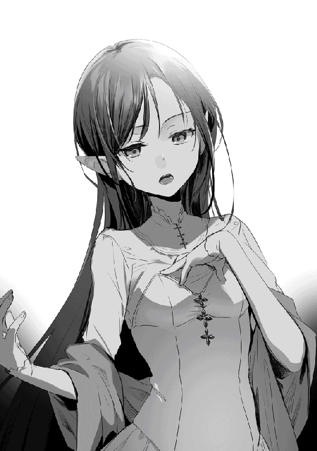
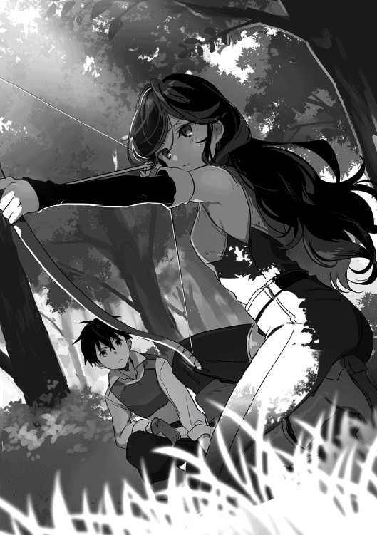

| 異世界は思ったよりも俺に優しい？３ | |
| 大川雅臣 | |
| TOブックス (2018) | |
孤独な令嬢リゼットと友達になるため、彼女の待つリザナン東部都市を目指すアキトと仲間たち。彼らは巨大鰐やオークの群れとの激闘を経て、ようやくリゼットの屋敷へと辿り着く。遂に感動の再会！......と思いきや、そこにリゼットの姿はなかった。彼女は一体どこへ？ 広がる世界と深まる友情に心暖まるほんのりサバイバル・ファンタジー、感動のフィナーレ！
イラスト：景
デザイン：木村デザイン・ラボ

■砂漠の町メルド
念波転送石と呼ばれる、意思を伝える魔石が手元に現れた時、俺の生きる世界はここに変わった。
リゼットの使う異世界転移魔法によってこの世界に来た俺は、出会うはずのリゼットとすれ違い、唯一の手掛かりとなるリザナン東部都市へと向かう。
もちろんスムーズに旅立てたわけじゃない。その日の食べ物にも困るような生活の中、ルイーゼやリデルに出会い、そしてモモに出会う。みんなの助けがなければ、こうも順調にグリモアの町を旅立つことは出来なかっただろう。そして、トリテアの町では新たな仲間としてマリオンを迎えた。
万全を期してトリテアの町を旅立った俺たちを待っていたのは、盗賊団の襲撃だった。そこで初めて人の命を奪う戦いをして、俺は二人を殺めることになる。そして襲ってきた激しい後悔と懺悔を心の内に飲み込み、俺は再びリゼットのいるリザナン東部都市へと進み始めた。
朝、ルブナンの村を発った船は昼前にはメルドの町に着いた。
俺たちは送ってくれた船頭に、お礼とわずかばかりの謝礼をして別れを告げる。
「ここがメルドの町か。随分と変わった雰囲気の町だな」
「この町は元々、国外から来た商隊が居着いて出来た町で、エルドリア王国全般から見れば、少し文化の違うところがあるね」
声を掛けてきたのはリデル。
金髪碧眼の少年で、俺たちのパーティー『蒼き盾』のリーダーだ。気品があり、ただ立っているだけで空気が静まるような透明感のある美麗さ。まさに美少年とはリデルのことを指すだろう。
残念ながら俺を指して美少年という人は未だかつていない。物語に美少年が二人もいらないということか。
リデルは貴族家の五男であり、今は王国騎士団への入団を目指している。その条件は幾つかあるが、もっとも重要なのは貴族家に連なる者であること。ただし、各貴族家から王国騎士団に入団出来る人数には限りがあり、リデルは上の兄がいる為、別の手段を取る必要があった。それが共に旅をする理由だ。
リデルはこの旅を通じて見地を広め、合わせて実績と評価を高めることで爵位を賜る考えだ。王国の剣であり、そして盾である王国騎士団への思いは今も変わらない。
「あっ。アキト様、屋根の上に小さな猿がいます!?」
珍しく興奮した様子を見せるのはルイーゼ。
栗色の髪をショートボブにして、俺がプレセントした青いリボンを付けている。初めて出会った頃は幼い印象を受けたが、この二ヶ月でずいぶんと雰囲気が変わっていた。
ルイーゼは佇まいが綺麗で、リデルと二人で立っていると、絵画でも見ているのかと思ってしまうほど様になっていた。
少し低めの声が耳に心地よく、大人しめの性格。身長は一五〇センチほどで体重もおそらく四〇キロを超えたくらいだろう。なかなか眼福──いや豊満な胸の持ち主でもある。
女神アルテア様の奇跡を行使できる天恵の持ち主で、俺もその回復魔法には何度も救われた。
「なんか活気があって、この町は好きになれそう」
目を輝かせて辺りを見ているのはマリオン。
胸まで伸ばした少しくせのある髪は、一見黒髪に見えるが実際は深紅で、陽の光を反射すると真っ赤に燃える様がすごく綺麗だ。
身長は俺と同じ一六〇センチくらい。細身で、少しだけルイーゼの胸を羨ましそうに見ていることがあった。
マリオンには話せない秘密も多そうだが、彼女が俺たちに不利益になるようなことはしないと思っている。
漂ってくる食べ物の匂いに釣られているのがモモだ。モモは言葉を話すことは出来ないが、俺たちの言葉は理解出来た。
一見すると八歳程度の幼女だが、本質は植物系精霊のブラウニーだ。本来は精霊界に住んでいるが、今はこの世界に具現化していた。初めてモモに出会った時に契約として名付けを行い、それが受け入れられて今に至る。
モモはブラウニーの特性で、色々なものを特殊な空間に保存してくれる。だから俺たちのパーティーはいつも荷物が少なめで済む。
これは凄いメリットで、狩りの収入が多いのもモモが狩った獲物を運んでくれるからだ。自分たちで運ぶとなったら、どれだけ大変か。
以上の四人と俺を合わせた五人がパーティー『蒼き盾』のメンバーであり、共に旅をする仲間だ。
メルドの町は、グリモアの町やトリテアの町とはガラリと雰囲気の変わった町だった。
建物の多くは白レンガと粘土で作られ、日除けの為に植えられた椰子の木の緑とハイビスカスの赤が合わさり、コントラストの美しい町になっている。
街を行き交う人々の衣装もどことなく異国情緒に溢れ、男女ともに少し薄着に見える。着丈も短く、晒された腕や足は良い色に日焼けしていた。
ルブナンの村からそれほど移動していないにもかかわらず、気温は一気に上がり、おそらく三五度くらいはあるだろう。木陰にいるなら乾いた風が心地良いが、完全装備で移動するのはきつそうだ。特に鎖帷子を着るリデルには酷だ。
「メルドの町はエルドリア大陸のほぼ中央、メビナ砂漠の西に位置し、砂漠越えをする人たちの入り口として利用されているそうです」
リデルではなく、ルイーゼの説明だ。
ルイーゼはここのところ、向かう地域の情報を自分なりに覚えようとリデルに聞いていた。今までリデルがしてくれたことをルイーゼがするように、話し合って決めたらしい。
俺も任せっきりにならないようにしないと。
「それにしても綺麗な町だな」
「はい、こんな彩り豊かな町もあるんですね」
「綺麗ね、私もこんな町は初めて見るわ」
「この街の産出物は石灰と白レンガが有名だね。安価ではないのだけれど、この町では木材より手に入りやすい。だから、どの家も白レンガと粘土で作られているのが特徴だ」
屋根や天井もレンガなのかと思ったら、そこは流石に木が使われていた。
この世界では二階建てだろうと三階建てだろうと、屋根や床は木で作られている。床までレンガや石材を使う技術が発達していないのかとも思ったが、単に高価なこともあり、一般には普及していないだけらしい。富裕層の家や強度の必要な建物、それから一部の橋などには石材による床が作られているようだ。
俺たちは、そんな白レンガで作られた町の北側にある繁華街の一角にある宿に部屋を取る。
予定ではここから砂漠には入らず、北上して商業都市カナンから東に延びてくる街道に合流する。そこまでは徒歩の移動となり、道中は野営も必要だった。
街道に合流した後は一路東に進み、いくつかの町を越えてリザナン東部都市に着く。予定より一週間ほど遅れそうなので、後でリゼットに手紙を送っておこう。
トリテアの町にしばらく滞在したこともあり、最初に送った手紙は、そろそろリゼットの元に届いているはずだ。その手紙が少しでもリゼットにとって希望となるなら、そう願って止まない。
宿には大部屋しかなかった為、久しぶりに四人で一部屋になった。ここ最近は野営とかで四人一緒に寝ていたのだから、今更気にし過ぎるのもおかしいだろう。
部屋は二階にあり、中には二段式のベッドが二つ、後は四人掛けのテーブルと窓があるだけのかなり質素な作りだった。
まさしく寝るだけの部屋だが、窓からは白いレンガの建物越しにべーレ川が見え、景観は悪くない。
「まだ日が高いから、装備を外したら町に出てみるか」
「そうだね。折角だから辺りをまわってみようか」
「リデル様、装備の解除を手伝いますね」
「助かるよルイーゼ」
モモに頼めば装備は直ぐに回収出来るが、それに頼りすぎてもいられない。緊急時は別として、普段は面倒でも、こうして防具の脱着は自分たちで行っていた。
「この辺りで重装備は大変ね......」
「戦う場所は選べないからな。慣れていくしかないさ。マリオンだって他人事じゃないぞ」
「戦う場所は選べないんでしょ。ならやるわ」
マリオンのさっぱりした性格は好感が持てる。ルイーゼは如何にも女の子という感じだが、マリオンは気の合う友達という感じの方が強い。
武装を解除して一息ついたところで、俺たちは街へ買い物にでる。食料品関連はルブナンの村で買い込んでいたが、替えの服や日用品はまだ足りていない。特に服はここ数日の戦いと野営の為、血の跡や破れなどで酷い有様だ。
不思議と誰も気にしていないが、俺は気になる。なぜなら元の世界では毎晩お風呂に入り、毎朝シャワーを浴び、朝と晩には着替えていた。だから、この世界に来てから一度もお風呂に入っていないのは、正直我慢ならないところだ。まぁ、ない物は仕方がないのだが。
でも俺は見てしまった。川辺で水浴びをしている人がいるのを。お風呂とまではいわなくても、水浴びでもいいじゃないか。俺は思いっきり水に浸かって体を浮かせたいんだ。と言うことで、俺は買い物が終わったら水浴びをする。誰がなんと言ってもだ。
それから、今日はこのパーティーにとって初めての給料日になる。俺はリデルと決めた通りに二人で銀貨二〇枚を受け取り、ルイーゼとマリオンには銀貨五枚を渡す。モモにも銀貨二〇枚で良いのでは、とリデルは言うが、正直モモがお金を使うとも思えなかったので、必要な分は俺が出すことにした。
「あ、あの。私までよろしいのでしょうか？」
「わたしも別になくても構わないわ」
「多くは出せないけれど、これはリデルと一緒に決めたことだから良いんだ。必要な物もあるだろうから、それは自由に使ってくれて良い。もちろん何に使ったのか聞くことはない」
実際に俺が気付かないだけで、女の子には必要な物もあるだろう。遠慮して不便を抱えているより良いはずだ。
「ありがとうございます」
「ありがとう」
給料を支払ったところで、いよいよ街に出る。まずは衣料品だ。俺は真っ先に水着を探すが、残念ながら売っていなかった。
店員に聞いてみところ、水着という言葉すら通じなかった。いや、言葉は通じたな。水着がどういった物かを説明したが、理解されなかった。仕方がないので、この町の人が着ているようなトランクス風パンツを購入する。
女の子組は離れたところで......下着かな？ あれこれと選んでいるようだ。モモが必要なのかどうかはわからないが、モモにも欲しいものがあったら持っておいでといっておく。
俺が支払いを済ませると、奥から何か布の塊がやってきた。どうやらモモが色々と抱えてきたようだ。
あれが欲しいものだろうか？
見たところ下着にも見えるが、やはりモモにも必要だったか。
俺がそれを受け取ろうとしたところで、ルイーゼとマリオンに物凄い勢いで奪われた。モモのではなく二人の下着だったか。二人は背を向けてしまったが、首筋が赤くなっているところを見ると、恥ずかしかったらしい。
正直ただの下着には興味がない。下着は身に付けていてこそ価値がある。などということは、もちろん口には出来ないが。
俺はモモの手元に残ったワンピースを購入し、モモにプレゼントする。大きな口が満足そうに弧を描いた。
買い物の後はみんなと街を散策する。通り沿いの露天を眺めていると、そこで胡椒が売っているのを見付けた。トリテアの街でも売っていたが高くて諦めていた。それがここでは安くはないが買える値段で売っている。片手で摘まむ程度の量で銅貨五〇枚だが、買うしかあるまい。ちなみに今日の宿は四人で銅貨七五枚だ。高いよ胡椒。
後、塩も買っておく。この二つがあれば、俺の食生活も充実した物になるだろう。町を出た後の野営では、肉や野菜が美味しく食べられるはずだ。幸いにして猪の肉もあるしな。
そう言えば、牙大虎の牙と毛皮、それに肉もあるな。羽無し鶏の肉もあるはずだ。そう考えると、今度は野菜が欲しくなってきた。結局、野菜と果物も追加で買い込み、衣類と合わせて銅貨三五〇枚。でも後悔はない。
買い物の後はいそいそと宿に戻り、この街風の衣類に身を包み、そして言う。
「俺はこれから水浴びに行く」
「それじゃ僕も一緒しようかな」
ルイーゼとマリオンは顔を見合わせている。一応誘ってみるか。
「ルイーゼとマリオンも来るか？」
もちろんモモは連れて行く予定だ。ここに来る船にいた時から、水遊びをしたくてたまらなそうだったからな。
「あの、ご一緒させて頂けますか？」
「わたしも行きたいわ」
「それじゃ、みんなで行こう！」
俺は溢れるワクワク感を隠しもせずに川へと向かう。五分も歩けばべーレ川の水面が見えて来た。
当然そこはパラダイスだった！
......とまでは言わない。なぜならば、女の子が水着を着ていないからだ。みんな、薄手のワンピースを水着代わりに、水辺で髪や体を洗っていた。
仕方がない。この世界にピチピチの水着なんかないんだ。俺がお金持ちになった暁には、二人に水着を開発してプレゼントしよう。
なんにせよ、久しぶりに水に浸かった気分は実に爽快だった。
そう言えば、水泳って全身運動だって聞いたな。俺はクロールで泳ぐ、泳ぐ、泳ぎまくる。いつの間にか注目を浴びて、その泳ぎ方を教えろと言われた。俺はもちろん教える。
「こ、これ以上は無理です......」
「私も無理よ、沈んじゃうわ」
ルイーゼとマリオンにも教えようと思ったが、二人は水を怖がって、泳げるほど深いところまでは来なかった。無理強いすることでもないので諦める。
その後、一人で調子に乗って泳いでいたら、物凄い脱力感に襲われた。水の中で鍛錬というのも良いかもしれないな。足場が良いとばかりは限らないから、こういった水場や砂漠で鍛錬をしておくのも一つの備えだろう。
適当に涼んだところで、まだ遊び足りなそうなモモを連れて、再び町へと向かう。
メルドの町の夜はずいぶんと活気があった。この街も夜は早いかと思っていたが、どうやら人々は暑い日中は余り活動せず、日が暮れてからが本番だったらしい。それでも明かりは貴重な為か、日が暮れてから三時間ほどらしいが。
俺たちは、少し高級そうだが静かで雰囲気の良い料理店に入る。この店は砂漠に面し、テラス席からは地平線まで続く砂丘と、同じく地平線まで降りてきた星空を一望できる、なかなかのロケーションだった。
月と星々に照らされた砂漠は、夜の海という感じでとても神秘的に見える。もし想い人がいるならば、一緒にこの景色を見たいと思わずにはいられない。
リゼットは博学だが、実際に外に出ることは少ないはずだ。知識だけの景色とは違う、そんな世界を見せてあげたいな。
オープンテラスのテーブルに座り、砂の海を眺めながら水泳でだれた体を慈しむ。昼間の熱気はまだ残っているものの、乾いた風が心地よく、とてもまったりしてしまう。ここまでゆったりとした気分になれたのは、何日ぶりだろうか。
肉と果物中心の料理も絶品だ。塩胡椒以外にも色々と味付けの工夫がされているようで、食欲が尽きない。
「俺の旅には料理人が必要なのかもしれない」
「料理人を連れての旅なんて、貴族か大商人くらいだよ」
「仕方がない。落ち着いたら自分で覚えるか」
「アキトは料理に関してだけは、貴族並の要求をするね」
「美味しい物を食べる為に生きるのも良いと思っている」
「確かにそれも良いね」
「わたしも賛成だわ」
「ふふふっ。私もお料理を覚えますね」
モモは食べる専門らしい。満足するまで食べさせてあげよう。
本当なら元の世界のレシピを手に入れたいくらいだ。でも、この世界の料理にも美味しい物は多い。それを探すのもまた楽しみだ。
今日は休みのような一日だったが、こういう日も偶には必要だな。
ここメルドの町からリザナン東部都市を目指すには、町を北上することになる。道中は旅程を短縮する為に、砂漠の端を横切る必要があった。一日程度とは言え、行き当たりばったりで砂漠の旅をするには不安がある。
だから、もう一泊この町に留まり体を砂場に慣らすことにした。昨日、水場や砂場に慣れないといけないと思ったのは、リデルも一緒だった訳だ。
「マリオンさん、そちらの水に果物を搾って貰えますか？」
「んー、今日はオレンジの気分ね」
朝食はルイーゼとマリオンが準備をしてくれる。調理場がある訳ではないのでテーブルで作れる簡単な物だが、モモのおかげで素材に不自由はない。
今朝の献立はパンにサラダ、それからオレンジを絞った果実水。料理と言うほどではなくても、女の子に食事を作ってもらうのは嬉しいものだ。
二人仲良く料理場に立つ姿を眺めているのも飽きないが、今の内に少し現状を整理しておく。
リデルとルイーゼの怪我はもう完全に癒えていた。リデルはまだしも、刺されて失血の多かったルイーゼの回復力は、俺の回復魔法だけの力とは思えない。やはりルイーゼは回復魔法の天恵だけでなく、他にも天恵を授かっているのかもしれない。
それとも、天恵とは一つの奇跡を指す言葉じゃないのだろうか。これについてはリデルも詳しくは知らなかったが、なんにせよ元気になって良かった。
ただ、一つ気が付いたことがある。昨日、水浴びをしている時にチラッと見えてしまったのだが、ルイーゼもマリオンも体中が傷跡だらけだった。女の子が傷跡だらけというのも可哀想なので、回復魔法を使ってみたが消えなかった。
俺の回復魔法は自己治癒能力を促進するものだから、傷跡があったとしても、それは治った結果であって、怪我ではないので傷跡は消えないようだ。
でも、ルイーゼの刺された傷は綺麗に治っているらしい。やはり俺の自己治癒で治ったのではなく、天恵と呼ばれる奇跡による可能性が高い。
俺も何度かルイーゼの天恵で怪我を治してもらっているが、腕や足に傷跡は残っていない。単に俺の回復魔法の能力が低いだけなのか、天恵の力か。恐らく後者なのだろう。
ルイーゼもマリオンも傷跡のことは全く気にしてないと言っているが、俺はちょっとヘコんだ。気を使って鍛錬や狩りで身が入らない方が困ると言うので、俺も必要以上に気にしないよう努力する。
現在、俺が使える魔法は魔弾、身体強化、自己治癒の三つになる。魔弾をアレンジした魔槍もあるが、基本的には魔弾と同じと考えていいだろう。
練習中なのは、同じく魔弾をアレンジした盾のような魔法だ。魔槍と違って薄く広く魔弾を展開し、敵の攻撃を弾き飛ばすのを目的としていた。
でも未完成だ。今のところは面の攻撃は耐えられても、剣で打ち込まれると耐え切れない。せいぜい威力を弱めるくらいだ。
そして槍や弓といった突属性の攻撃には全く歯がたたず、実戦では使いどころがない。この魔法を使うくらいなら、攻撃する物体その物に魔弾を当てた方が確実だ。
それでも練習をしているのは、可能性の問題だな。何かがわかるかもしれないし、思わぬ使い道があるかもしれない。ならば、試すことに意味はあるだろう。
三つの魔法の内、リデルは身体強化と自己治癒を覚えている。高い防御力に二つの魔法ってなかなか反則だと思う。
ルイーゼは身体強化を使いこなせるようになってきた。
リデルとルイーゼは俺よりも魔力量が多い。特にルイーゼはかなり多い。俺もまだ魔力量は伸びていると思うけれど、その量が二人に劣るようなので、魔力制御の精度を上げて無駄を減らす方向でカバーしている状態だ。
二人は俺に比べて、効率良く魔力を使えるのかもしれない。それは魔力のあるこの世界に生まれついた人間と、魔力のない異世界から来た人間の違いでもあるのだろう。代わりに俺は魔力に対する認識力が高いので、マイナスばかりではない。
そして、今のところマリオンの魔法については未知数だ。身体強化を教えているが、実際に効果として現れるのは一ヶ月くらい掛かるだろうから、諦めずに練習するようにと伝えている。本人もすぐに使えるようになるとは思っていないようなので、大丈夫だろう。
体力面では常に重い鎧と盾を持ち、体格も良いリデルの能力が一番高い。反射神経もよく、模擬戦では魔法なしだと有効打をとれたことがない。魔法ありで何とか互角といったところだ。
最近は俺も色々とあり、この世界に来た頃とは比べ物にならないほど体力も腕力も付いている。ルイーゼが怪我をした時に背負って歩いたのは二日間だったが、あれで足腰とバランス感覚がずいぶん鍛えられた。
普段は荷物をモモに任せてしまいがちだけれど、やはりある程度は自分で持つようにした方がいいのかもしれないな。
それとも、俺も鎖帷子あたりを着た方が良いだろうか？ あれだけで一〇キロ近くあるから、戦い方のスタイルが変わるか......悩ましいところだ。
ルイーゼも初めて一緒に狩りに出た時に比べれば、格段に体力が付いている。この間、重い水瓶を持ち歩いているのを見てびっくりした。呼吸をするように自然に、普段からそう意識して身体強化の練習をしているようだ。
模擬戦も初めは体力がなく三分ともたなかったのに、今では俺の方が息切れするほど攻めても、腕が上がらないといったことはなくなっている。
ルイーゼの防御面も信頼出来るくらいになりつつある。体重の軽さから、大きめの魔物の突進などで不安があるかと思ったが、身体強化で上手く対処出来るようになっていた。Ｆランク程度の魔物なら、きちんと盾役をこなしてくれるだろう。
マリオンは女の子としては体力も腕力もある方だと思うが、ルイーゼには両面で負けている。でも体格で一回り違う為、素の体力なら直ぐにルイーゼに追い付くはずだ。
性格的にはルイーゼより積極的で、倒される前に倒せという戦闘スタイルになる。盾は持っていないので、実際に防御面は剣で受けるか避けるかしかなく、防御に回るようではジリ貧だ。
マリオンにはゆっくりと狩りを指導する時間が取れなかったので、しばらくは朝の鍛錬でマリオンに重点を置くことにした。
食事が運ばれてきたので、ありがたく食べることにする。
ちょっとはしたないが、食事を取りながらここしばらくの方針を話す。特に俺がマリオンの鍛錬と実戦に重点を置くといったところで、マリオンは目を丸くしていた。
「不満は早めに申告するように」
不満は溜め込む前に解消だ。便秘は良くない。
そう思ったが、マリオンは首を横に振って不満がないことを示した。不満ではなく、そこまですることに驚いていたようだ。
「いいの？」
「前に言っただろ。きちんと戦い方を教えるって。もっとも俺も至らないことが多いから、変なところがあればどんどん指摘してくれ」
「本当に教えてくれるとは思わなかった。何も出来ないのは嫌なの。今度はきちんと動けるようになりたい」
「マリオンには教える前に色々あって無理をさせたと思う。すまなかったな」
「そんなこと......十分良くしてくれたわ」
盗賊との戦いの後、怪我をしたリデルとルイーゼを背負っていた俺の代わりに、危険な動物と戦ってくれたのはマリオンだ。その時の戦いで大怪我こそなかったが、小さな怪我は体中に負っていた。そんな怪我が増えないように、今からでも出来ることをしておきたい。
「僕が聞いた話だと、この街の近くに魔物が出ることはない。でも、砂回虫という害虫がいるらしいから、それを狩るのがいいと思うね。鍛錬が終わったら試してみよう」
いつの間に調べていたのか、リデルが手頃な相手を見繕っておいてくれたようだ。
食事を終えた俺たちは、予定通り砂場に向かう。
町の人々も既に活動しており、その活気は夜に勝るとも劣らないものだった。夜と一緒で日中の暑い時を避け、朝に集中して仕事を行うようだ。当然、少ない時間で必要な用件を済まそうと、誰もが忙しそうに働いていた。
仕事の中心となるのはやはり商業のようで、川辺には船が多数停泊して荷の上げ下ろしの為に、下働きの男たちと奴隷と思われる装いの男たちが大勢駆け回っていた。
それらを脇目に通りを進み、町並みを外れたところが目的地だ。この先は、昨夜食事をしながら見た砂の海が広がっている。
砂の陵丘に登って周りを眺めて見ると、東は砂の海が続き、果ては蜃気楼を浮かべて空に消えていた。
「モ、モモさん!?」
砂の山を転げ落ちていくモモを見て、ルイーゼが声を上げる。
「ちょ、ちょっと！ だいじょう──ぶわっ!?」
モモを助けようとしたマリオンも、砂に足を取られ、淑女らしからぬ声を上げつつ転げ落ちていく。
それを見て、砂まみれのモモは大笑いだ。
「マリオン、平気か？」
「え、えぇ......」
俺は二人の様子を見て慎重に滑り降りたので問題ない。
差し出した手をマリオンが取り、引き起こそうとしたところで砂に足が取られ、バランスを崩す。
「きゃっ！」
「ぐはっ！」
尻餅を着くように倒れた俺の上に、マリオンが倒れ込んでくる。色っぽい展開かと思いきや、マリオンの膝が急所にクリティカルヒットし、俺はその場で悶えることとなった。
「アキト様......あ、あの、癒やしは必要でしょうか？」
「ルイーゼ、今はそっとしておいてあげよう」
ルイーゼとリデルの優しさに感謝しつつ、顔を赤くするマリオンに手で無事を伝え、痛みが山場を越えるまで我慢だ。モモの応援する姿に、ちょっとだけ気が紛れる。
そんな痛みもなんとか落ち着いたところで鍛錬の開始だ。
「うぉっ、足が沈むな!?」
「隙ありゅっ！」
再びバランスを崩したマリオンだったが、上半身で必死にバランスをとり、なんとか踏み止まる──ところを、俺は鍛錬用の剣で突く。マリオンはそれを躱すが、同時にバランスを崩し、変な悲鳴を上げつつ下まで滑り落ちていった。そして、俺も突いた勢いで足を取られ、マリオンの後を追って滑り落ちていく。その後を、両手を挙げて楽しそうに追ってくるのはモモだ。
滑りながらリデルとルイーゼの様子を見ると、二人は俺たちのように無様に転げ落ちることはなかったが、足場の悪さに四苦八苦しているのは同じだった。
思い付きで始めた鍛錬だったが、砂場というのは非常に難儀なものだな。まず足が沈む。足が沈むからバランスを崩しやすい。それから滑る、踏ん張れない。俺はまだ身軽だからいいけれど、リデルはだいぶ苦労しているようだ。珍しくリデルとの模擬戦は、魔法なしでも互角で終えることが出来た。
前の件で俺は足腰が強くなっていたし、バランス感覚も上がっていた。多少体勢を崩されても、しっかりと体を支えられるようになっている......しっかりした足場なら。
同じく身が軽い者同士でも、マリオンにはきついようだ。ルイーゼとの模擬戦で全く歯がたたない。ルイーゼも楽ではないようだが、重い鎧を着ていないので、立ち止まって防御している分にはマシなのだろう。
軽く模擬戦をしたところで各々の課題を明確にする。
リデルに隙はないように見えたが、防具を着た上でのバランス感覚を身に付ける必要が出てきた。ルイーゼは足腰の鍛錬を増やす必要がある。マリオンについては今のところ一通り課題があるけれど、俺が狩りを始めた時と同じで基礎体力と体幹強化が必要そうだ。
課題について確認し合った後は、俺とマリオン、それからリデルとルイーゼに分かれて鍛錬を行う。
リデルとルイーゼは難しいことはせず、砂の上でお互いに押し合うことでバランスと足腰の強化を行うようだ。斜面を利用してリデルが下、ルイーゼが上という形で上手くバランスを取っている。
俺はマリオンに体幹強化メニューを組み、一緒にそれをこなす。
その後はひたすら模擬戦だ。マリオンの攻撃は素直で真っ直ぐだ。ある意味躱しやすい。でも単純に最短距離で間合いを詰め、小さいモーションで攻撃を繰り出す為、意外とスピードはあった。油断するとひやりとする面もある。
マリオンにはスピードの乗った攻撃が合うのかもしれない。フェイントや技巧的なことは後回しで良さそうだ。あくまでも最初の対象は魔物なので、それほど難しい技術は必要ない。
「みんな、水を少しずつ、回数は多めにとるようにね」
「モモ、水を頼む」
人数分の水筒を取り出してくれたモモに感謝し、砂場に座り込んで汗で流れた水分を補う。
「はぁ、命が繋がるわ！」
「ふふふっ、本当ですね」
朝が早いとはいえ日差しも強くなってきたので、水分の補給が終わったところで鍛錬を終える。
最近は面白いと思ったのか、モモも鍛錬に参加している。俺もモモ用の鍛錬メニューを考えて指導しているが、あくまでも遊びの延長だ。モモを戦いに参加させるつもりはない。
幸いにして、動物も魔物もモモには全く反応しないので、巻き込みさえ気を付ければいいだけだ。
でも相手が人間や魔人になってくると、モモを無視するとも限らないので、危ない時は精霊界に逃げてもらうことにした。もしモモが精霊とバレることになったとしても、怪我をされるよりはマシだ。
鍛錬の後は汗と埃を流す為に、再びベーレ川で水浴びをする。体が冷えない程度に軽く済ませ、その後は宿に戻って勉強だ。日差しの強い日中に外で動くのは止めておき、砂回虫退治は日が傾いてから行う予定だ。
勉強では俺とマリオンが文字の読み書きを学び、文字を覚えたルイーゼはリデルにこれからの道中に必要な知識を習っている。
軽めの昼食をとった後は、乾いた風を感じながら軽く昼寝をして過ごす。モモがお腹を出して寝ていたので、タオルを掛けておくのを忘れない。鍛錬の疲れもあってか、短くてもしっかりとした休みがとれた。
日が傾き始めてから、俺たちは宿を出てメルドの町東側の砂丘にきた。
ここで、前もって切り分けておいた牙大虎の肉を、砂の上に放置して暫く待つ。すると砂の中を蠢くように進む何かが現れた。それが血肉に誘われてやってきた砂回虫なのだろう。獲物を捕らえようと砂の中から姿を見せたのは七匹だ。
「砂回虫の強さは魔物で例えるとＦランク程度です。数匹まとまって行動しますが、リデル様とアキト様でしたら脅威にはならないかと思います」
「ただ、固体の強さだけを見てはいけないよ。魔物や動物の強さは環境によって変わるからね」
「はい」
ルイーゼの説明にリデルが補足を入れる。
「砂回虫もこの砂場に限っては自由に動き回れるようだな。油断してはそれこそ足元を救われるから、慎重に行くぞ！」
「わかったわ！」
俺たちは改めて砂回虫を観察する。
砂回虫は胴回り約五〇センチ、直径でいうと一五センチを超えたくらいだ。砂の中から蛇のように胴体を伸ばし、頭なのか口なのかわからない部位が一メートルほどの高さにあった。
砂の中にどの程度本体が隠れているのかわからないが、砂の盛り上がり具合からして、そう長くもなさそうだ。せいぜい三メートルといったところだろう。
砂の中の移動は意外と早く、俺たちが小走りする程度の速度は出せるようだ。出会ってから逃げようとしても厄介かもしれない。
「砂回虫の攻撃は噛み付いて砂の中に引きこみ窒息させるのが主で、巻き付いてきたり毒を吐いたりという攻撃はありません」
ルイーゼが何処で手に入れてきたのか、砂回虫の特性を説明する。
「ルイーゼ、よく調べたな」
嬉しそうに微笑むルイーゼがちょっと可愛い。
「噛み付かれることにさえ注意すれば問題なく倒せそうだな。二人ずつに分かれて対応しよう」
「了解、右の三匹は任せるよ」
俺とルイーゼ、リデルとマリオンで攻防にバランスの取れたペアを作る。
俺はルイーゼに砂回虫の相手をさせ、側に控えてチャンスを待つ。正確にはいつでも砂回虫を倒せそうだったが、ルイーゼがしっかりと守っている間は手を出さないことにした。
七匹の砂回虫のうち三匹目がルイーゼに寄って来たところで、防御が遅れがちになってきた。盾だけでは捌ききれなくなり、体を使って避け始めるが、砂に足を取られ上手く避けきれず攻撃を受けそうだったので、俺も攻撃に入る。
「ルイーゼ、左は俺がやる！ 右の二匹を押さえてくれ！」
「はいっ！」
ルイーゼが捌ききれない砂回虫の、おそらく首を下から上に振るった剣で斬り飛ばす。剣には思ったほどの抵抗もなかった。さすがリデルの鎖帷子を切り裂いただけあり、すごい切れ味の剣だ。
砂回虫は濁った黄色い液体を吹きながら、その場に倒れる。切っても蜥蜴の尻尾切りのようなことはなく、確実に死ぬようだ。強さ的には問題ない。
リデルの方には四匹の砂回虫が向かっているが、砂に足を取られようと砂回虫レベルではリデルの防御を抜くことは出来ない。
リデルの影からマリオンが飛び出し、砂回虫の一匹に剣を突き刺す。その攻撃では致命傷になりにくいのか、砂回虫は直ぐに死ぬということはなく、暴れた勢いでマリオンが剣を手放した。
マリオンは何とか自分の剣を取り戻そうとしているが、暴れる砂回虫に近寄ると自分の剣で怪我をする危険もあった。
リデルがマリオンの剣を刺したまま暴れる砂回虫に止めを刺す。それを見たマリオンが、倒れた砂回虫から剣を回収しようと飛び出す。気の逸れたマリオンに、別の砂回虫が襲い掛かる素振りを見せたところで、リデルが割り込んでマリオンを庇った。
マリオンは武器を失ったことで焦ったのか、思考が短絡的になり過ぎたようだ。今後の課題だな。
ルイーゼの時は攻撃をさせないで、守ることを優先させていたから、自ずと余裕も出来たのかもしれない。
マリオンには攻撃を優先的に覚えさせようと思ったけれど、それは間違いだったか。やはり基本は防御があって、その上での攻撃じゃないと良くなさそうだ。俺も間違いばかりだな。
ちょっと思考が逸れた間に、ルイーゼは砂回虫を一匹倒していた。残り一匹も時間の問題だろう。
メイスによる攻撃は、砂回虫にあまり有効打を与えているとはいいがたい。ルイーゼにもメイス以外の武器を教えた方がいいのだろうか──と思った瞬間、砂回虫の胴体が弾けた。ルイーゼが身体強化で強打をしたようだ。
しかし、なんで弾けたんだ？ 水分が多そうな敵だから、強打したことで内圧が高まり破裂したのか。敵に合わせて最適な武器を選ぶというのも必要な知識だな。
ルイーゼが二匹を倒した頃には、リデルの方も四匹を倒し終えていた。
今は戦闘での汚れを水浴びで落とし、宿に戻って食事をとった後だ。
部屋のテーブルに四人で座り、ルイーゼの用意してくれた果実水を飲んで一休み。モモは窓から身を乗り出し、星々を映し出すべーレ川の流れを楽しそうに見ていた。
涼み始めた夜の風が心地よく、疲れが引いて行く。今日はよく眠れるだろう。
「わざわざ延泊をして、砂場での戦闘を経験した意味は大きかったな」
みんな一様に頷く。
慣れない鍛錬で疲労した体を休める前に、今日感じたことを伝えておく。まぁ、反省会だ。
「マリオンには俺の考えが間違っていた結果、危険な目にあわせたと思う」
「あれは私が──」
「いや、やっぱり基本は大切だと思ったよ。マリオンには、しばらく攻撃より防御の練習をしてもらう。それには俺が全面的に協力する」
「わかったわ」
特に不満はなさそうだ。
「それから、ルイーゼが砂回虫を倒すのを見ていて思ったけれど、魔物や動物には効果的な攻撃があるといまさら思い出した。思えば甲冑芋虫を倒した時は、敵に合わせて魔槍を使うなど有効な手段を取っていた。もっともそれは思いつきでやっていただけだから、今後はそれを意識したいと思う」
俺は一度言葉を切り、話が伝わっているか確認し、問題がなさそうなので続ける。
「砂回虫に関しては突属性の技──つまり剣や槍で突く、あるいは弓での攻撃は効き目が悪く、斬属性の技──切る系統の攻撃で効果が高かった。あとルイーゼのメイスによる打属性の技も効果があった。今後はこういうことを意識して戦いに備えたいと思う」
「了解。毎日が課題だらけで、楽しいものだね」
「何もない人生よりは素敵ね」
「わたしも精進します」
モモのドヤ顔はちょっと使いどころが違うと思う。
思わず笑ってしまった俺たちを見て、モモは不思議そうに首をかしげていた。
■砂の海を越えて
今朝は案の定、みんなで筋肉痛だった。特にマリオンの筋肉痛がひどいようだ。ベッドから降りようとして失敗したのか、上半身だけをベッドから落として床に突っ伏している。二段ベッドの上だったら大変だったな。
まずは自分の筋肉痛を治し、それからマリオンにルイーゼを治していく。リデルは自分で出来るだろう。
「ありがとう、助かったわ。何か良くない病気にかかったのかと思って恐かった。みんなはよく平気ね」
「平気ってこともないけれどな。まぁ、マリオンよりは慣れているよ」
「私も初めはそんな感じでしたよ」
四人分の果実水を用意しながら、ルイーゼが旅立つ前のことを語る。
「ごめんなさい、わたしにまで」
ルイーゼはそれに笑顔で返す。いつも思うが、ルイーゼが微笑むだけですべてが許される気がしてくる。
「まぁ、砂場での戦闘は出来るだけ避けるというのが正解なんだろうな。予定では明日一日が砂漠越えになるから、そこで注意しよう」
「さすがに僕もあの状況で戦うのは難しいね」
「一応他にも、水の中と岩場、それに瓦礫や斜面とかも考えていた」
「うわぁ」
声が漏れたのはマリオンだ。俺はマリオンの肩を軽く叩いてから、出発の準備を始める。
「さらばメルドの町」
「良い町でしたね」
「あぁ」
ルイーゼの言葉を本心から肯定する。俺はこの町が結構気に入っていた。ちょっとしたバカンス気分になれたからだろうな。
名残惜しいが、俺たちは魔法の鍛錬だけを済ませメルドの町を後にした。
今日の旅程は進路を北に取り、砂漠の手前まで進む。順調に進めば日が暮れる三時間ほど前にはたどり着くはずだ。
街道は一応あるが、あまり整地されていないので馬車だと揺れるだろう。もっとも、今回は馬車ではなく徒歩での移動になる。途中で砂漠を越える為に、馬車での移動は不可能だった。
商業都市カナンに向かうのであれば、メルドの町から水路を辿ることも出来た。でも俺たちは北に向かい、砂漠の端をショートカットをする予定だ。一日は砂漠越えになってしまうが、リザナン東部都市までの旅程を大きく短縮することが出来た。
俺たちの前方にも、そして後方にも、同じように砂漠越えをする人たちがチラホラと見受けられた。中には一人で移動する人もいるようだ。それほど厳しい砂漠越えでもないのだろう。
何はおいても水と塩だけは大量に用意してある。モモのお陰で普通ではありえない量を運べるので、こういう時は非常に助かる。一日の砂漠越えに七日分は用意したので、十分なはずだ。
街道は途中までべーレ川に沿って北上したが、途中で川が西に逸れたところでべーレ川とは別れて北上することになる。そこからは荒野といった感じで風景に変わりがない為、ちょっと暇になった。
俺は手持ち無沙汰だったので、盗賊から取り上げた剣を手に取って、一つの実験を行う。
魔弾を撃つと俺の魔力が減る。これは多分仕方がない。
前に魔力の放射が出来るなら吸収も出来るだろうと、魔力を取り込む実験をしてみたが、魔力を感じることは出来ても上手く取り込めなかった。
そこでこの剣の登場だ。いつも魔弾を出力する左手から剣に魔力を通してみる......思った通り、俺が買った鉄の剣より魔力がすんなり流れ込んでいく。これがミスリル鉱の性質なのだろう。
魔力を大気中から意図的に吸うことはまだ出来ないが、このミスリルの剣の片方から流して反対側に通すことは出来るんじゃないかと思った。なぜなら、自分の体の中であれば魔力は自由に移動が出来るのだから、抵抗が少ないならその間も通るだろう、と言うのが根拠だ。
俺は目をつむり、心を落ち着かせる。手に持つ剣がまるで体の一部であるかのように、左手から魔力を流し右手に抜けることを意識して魔力の流れを制御する。
剣に流れこんだ魔力が右手に......抜けてきた感じがしない。そう簡単にはいかないか。
ん？
水は高い方から低い方へ。空気も気圧の高い方から低い方へ。なら、魔力も多い方から少ない方へ移動するのではないだろうか。普段意識していないが、魔力は全身にまんべんなく存在して何処かに固まっている、と言うことはない。だとすれば何処かが空になれば、そこを補うように魔力が流れ込むんじゃないだろうか。
再び左手から剣に魔力を流しこむ。同時に右手の魔力を吸い出すように空にしていく──瞬間、スッっと右手に魔力が流れ込んでくるのを感じた。一度認識すると右手の魔力を空にするとか考えなくても、自然とそう出来るようになった。
もちろん、これで俺の魔力総量が増える訳ではない。でも、この剣は魔力を通すことで自然に変異する以上の速度で魔剣へと変化する......はずだ。はずと言うか、そうなって欲しいという願望だな。
今までのように魔力を出力するだけで魔剣にするのは、なかなか時間が掛かる。それはもちろん魔力量に限度があるからだ。
魔弾の時に溢れる魔力ではなく、直接魔力を流すことで、もっと早く魔剣にすることも出来ると思うが、どうせならそれを効率よくやりたい。もし魔力を通すだけでは駄目で魔力を蓄積しなければいけないなら、他にも手がある。
俺は魔石を取り出し右手に握りしめる。剣に魔力を通した時のように、右手の魔力を空にして魔石から魔力を吸い出してみる。始めに抵抗を感じたが、少しずつ、そして徐々に大きな魔力が魔石から溢れてくるのを感じる。
体内を満たしていく魔力を心地よく感じていると、突然魔石が微粒子となって砕け散った。これは想定外。いずれにしても空になった魔石に使い道があるのかわからないので良いだろう。
魔石の魔力を吸収すれば、自然回復量以上の魔力を剣に流し込める。魔力を通して魔剣にするのが無理なら、魔石の魔力を付与する方法で行こう。出来れば通すだけで魔剣になって欲しいが、そこは実験だな。
俺が実験を終えた時、そこには視線で説明を求める三人がいた。
モモだけは俺の上着の裾を掴んだまま、道中で捕まえたカメレオンと睨めっこをしている。
「前に俺の魔力総量が少ないという話をした時、ルイーゼが魔石から魔力を取り出せると言っていたのは覚えているか？」
「僕はその時、魔石から魔力を取り出せるのは魔法具だけだと言ったね」
「でも、色々考えてみた結果、今出来ないだけで、方法論さえわかれば出来るんじゃないかとも思っていたんだ」
「可能性を否定したくはないけれど、どうしてそう考えたんだい？」
ここからは少し仮説や推測も入ると断ってから、説明を続ける。
「魔法を使うと魔力を消費する。それじゃ消費した魔力はどうやって回復すると思う？」
「アキト様、体力が回復すればでしょうか？」
「体力を使わなくても、魔力だけ消費することも出来るからそれは違う」
「寝れば回復するわ」
「それは寝ている間に回復しているだけで、寝ることで回復する訳じゃない。実際、起きていても時間の経過と共に魔力は回復する」
「アキトはそこに秘密があると思っているんだね」
俺は頷いて、言葉を続ける。
「それを話す前に、いくつか話すことがある。マリオン、人は水の中にずっといたらどうなる？」
「溺れるわ」
マリオンは子供にするような質問されて眉を寄せる。だが、この質問の奥の深さはこれからだ。
「なぜ溺れると思う？」
「呼吸が出来ないからに決まっているわ」
「それじゃ、もし大きな桶のような物を逆さにして水の中に潜ったとしたら、溺れないと思うか？」
「溺れ......ないわね」
「ルイーゼはどう思う？」
「溺れないと思います」
「溺れないけれど、人は死ぬんじゃないかな」
リデルは何か思い当たるようだ。ルイーゼとマリオンが理解出来ないといった表情をしている。
「鉱山なんかでは落盤とかで人が閉じ込められることがあるけれど、落石をどかして助けに行っても中にいた人は死んでいると聞くね。同じことじゃないかな」
「そう、空気があっても人は死ぬ。なぜならば呼吸をしているからだ」
「呼吸をしなければ死んでしまうのに、呼吸をするから死ぬって、訳がわからないわ」
「僕も理由はわからないね」
やはり前に思った通り、この世界では酸素を吸って二酸化炭素を吐いているというのは一般的ではないようだ。ここまで話しておいて、この先をいうのはまずい気がしてきたけれど、今更だろうか。
「これは一般的に言われていることじゃないし、俺の仮説も入っているから、ここだけの話だと思って聞いてくれ」
みんなが一様に頷く。
「人が呼吸をするのは酸素を吸う為だ。空気を吸う為じゃない。空気の中にある酸素という、いわば栄養のような物を吸っているんだ。そして、その栄養を取った後、今度は栄養の抜け殻となった二酸化炭素という不要物を吐きだしている」
「つまり、密閉された空間ではその栄養がなくなってしまうから、人は呼吸をしていても死んでしまうというのがアキトの仮説なんだね」
本当は俺の仮説でもないけれど、それをここでいっても仕方がない。
「そう。そして、何故こんな話をしているかというと、話が戻って魔力はどうやって回復しているのか？ になる」
「もしかして魔力も吸っているの？」
マリオンの疑問に頷いて肯定を示す。
「俺はそう考えている。つまり、人間は魔力を吸収出来るというのが俺の考えだ。魔巣は魔力が強いと言われているけれど、魔力は濃度を別として何処にでもある。この考えでいけば、魔巣の中心に行けば行くほど魔力の回復が早くなる。でも他にも魔力の濃度が高い物がある」
「それでさっき魔石を取り出していたんだね」
「そういうこと。そして俺は実験して、魔石から魔力を吸い出せると確信した」
「アキト様、それは凄いことなのではありませんか？」
どうなのだろう？ この世界に来て、俺がチート能力だと思っていたことが実は他の人にも出来るということばかりだったので、あまり凄いことだとは思えないのだが。
事実、身体強化も自己治癒も俺以外に使えるし、魔弾に関しては精霊魔法を具現化出来ない結果として発生する事象だった。
「身体強化と同じで、知らないだけでみんなにも出来るんじゃないかな」
「みんなが知らないというだけで大変なことなんだけれどね」
そうなのか、それじゃ言い忘れていたもう一つのこともついでだから話しておくか。
「驚きついでに、もう一つあるんだ」
「教えて貰えるかい」
「もちろんだ。魔力は見ることは出来ないけれど感じることは出来る。それを俺は『魔力感知』と呼んでいる」
「ちょっとわからないわ」
マリオンだけでなく、リデルとルイーゼもいまいちピンとこないようだ。
「話が戻るけれど、俺たちは呼吸をする時に空気を吸っている。それは酸素と魔力を吸っていることだというのは話した通りだ。残念ながら俺にも酸素を感じることは出来ない。でも、空気の中に魔力があると気付いた時から、魔力自体を感じることが出来るようになったんだ」
酸素は馴染み過ぎて違和感も何もなく受け入れてしまっている。魔力はこの世界に来た時に得られた力なので、どうしても異物的な存在として強く認識出来た。俺が酸素を感じられないように、この世界に住んでいる人には魔力を感じるのは難しいかもしれない。
それでも魔法があり、魔法を使う為に魔力を制御する呪文がある為、酸素よりはわかりやすいと思っている。
「魔力は何処にでも満ち溢れていて、人や生物だけじゃなく植物や魔物にも魔力があるとわかったんだ。それぞれは大なり小なり蓄積した魔力量に違いがあり、それを感じることで例えば背後に人がいることもわかる」
「うそっ!?」
驚きの声を上げるマリオンに向かって、多少得意気に知識を披露する。
「それだけじゃなく、大ざっぱには個人を特定することも出来る。見慣れたリデルやルイーゼ、それにマリオンならもう見分けが付く。とはいっても、せいぜい五〇メートルくらいの範囲だけれどな。それ以上は他の魔力に紛れてしまって区別が付かなくなる。ちなみに魔物は魔力が強いので見付けやすい」
流石にマリオンだけでなくリデルやルイーゼも驚きを露わにしていた。
「モモが魔物を見付けるのが早いのは知っていると思う。モモはどうやって魔物を見付けているのか考えていた時、魔力を見ていると思ったんだ。それで練習していたんだけれど、モモは他にも何かが見えるのかもしれない。モモほど遠くの魔物を俺には見付けることが出来ないんだ」
三人とも言葉がないようだ。やはりこの世界でも凄いことなのかもしれない。俺からすれば魔法自体が凄いことなので、そこから先は何処までが常識なのか、いまいち区別が付かない。
「まぁ、そういうことで今俺がわかっているのは、人は魔力を吸収出来る。魔力は感じることが出来る。の二つだな」
言葉にすれば余りたいしたことではない気がする。魔力は意図して吸収していないだけで実は誰でも吸収している。それに魔力を感じるとはいってみたが、これって単に気配を感じるようなものだ。優れた冒険者なら、理解はしてなくても実際には感じているんじゃないだろうか。
「アキト様、やはり素晴らしいことだと思いますが」
「そうよね、そんなものだよって感じで話しているけれど......」
「確かに言われてみれば納得がいくね。でも、それに気付く人は多くないはずだよ。話を聞いても真に受ける人はなかなかいないと思う。僕たちはアキトの特別なところを実際に知っているから、話にも信憑性を感じるけれど」
「え、俺って特別なところがあったか？」
自分でも吃驚だ。あったのか？ 特別なところ。
「なにを今更......。僕やルイーゼが魔法を使えるようになったのは、アキトのおかげだと思っているよ」
「リデルは解呪をしているし魔法も習っていた。使えるようになるのは時間の問題だと思っていた。ルイーゼは天恵があり魔力量も多い。魔法適性が高いんじゃないか」
「僕はそこまで自分に自惚れてはいないよ。アキトの魔法......この場合は魔力かな。魔力に関する観察力や制御する能力は、僕の知る限り他に類を見ないほどだよ」
「それほどか？ 俺としては精一杯頑張って魔力の制御をしているのに、身体強化を継続して使用出来る時間はリデルやルイーゼ以下なんだが」
自分では精一杯制御していても、水飴の中を泳いでいるような感じで、なかなかスッキリと纏まらない気持ち悪さがある。これでも魔力制御能力が高いのか。
「まぁ、僕が知ることが全てではないけれどね」
「持ち上げてから落とすなよ」
「私は魔法のことは詳しくわかりませんが、アキト様に教えて頂いて、使えるようになったことは確かです」
「わたしも期待して良いのね」
もちろん明日以降の鍛錬に、魔力を感じ取る練習が入ったのはいうまでもない。本当に鍛錬だけで半日が終わりそうになってきたぞ。
そんな感じで魔法についての議論をしている内に、今日の野営地までたどり着いた。
野営地には先に来ていた商人や旅人が、既に野営の準備を済ませて寛いでいた。俺たちも適当な距離を置いて野営の準備に取り掛かる。
今までは野営といっても、夜露を避けられるところで寝るだけだった。でも今回は砂漠ということもあり、夜露を避けられる物がない。だから前もってメルドの町で大きめの布を買っておいた。日の中で休憩をする時にも使う予定だ。
その布の中心を高さ二メートルの棒に引っかけ、四方をロープで引っ張り楔を打つ。そして布が風で煽られないように重しの石を乗せて固定すれば、簡易テントの出来上がりだ。周りの人の立派なテントに比べると貧相だが夜露は凌げる。
そういえばグリモアの町やトリテアの町の方では、テントを使うと盗賊に狙われると言われていたが、こっちでは普通に使われているな。まぁ、盗賊の住処がありそうには思えない。なにせ荒野と砂漠が広がっているだけだ。
明日は一日中砂漠を歩くことになるので朝の鍛錬はなしとする。周りの慣れていそうな人に、付かず離れずで進んでいけば大丈夫だろう。
何もない荒野の夜は真っ暗かと思いきや、満天の星空と元の世界よりは大きく青い月に照らされて、非常に明るかった。歩くに不便がないと感じるくらいには明るい。
星の見え方が少し変わった気がするのは季節が進んだせいだろうか、それとも確実にリゼットの元に近付いているからだろうか。
リゼットと最後に言葉を交わしてから二ヶ月。もしリザナン東部都市にリゼットがいなければ、俺は二度と元の世界には戻れないかも知れない。そしたら俺はこの世界で生きていくのか......それも悪くはないけれど、家族には会いたいな。
あの時は、この世界への興味とリゼットを救いたい思いで飛び込んできたが、直ぐに戻れるだろうという軽い気持ちがあった。だから、家族を置いて行くことに何かしらの罪悪感もなかった。
馬鹿だな俺は。
だけれど、あそこで強引にでも異世界転移魔法を求めなければ、結局リゼットのことをずっと引き摺っていたに違いない。
どちらも後悔するなら、せめて自分の判断を信じよう。
いつまで見ていても飽きない夜空だったが、明日も一日歩き通しになるので休むことにした。
まだ日も出ていない、どちらかといえば深夜に近い時刻。俺たちは気持ち早めに出発の準備を始めたが、一通り片付けが終わった頃には、東の空が明るみ始めていた。
早い人たちは既に出発しているようで、周りのテントは昨夜の半数くらいしか残っていない。
ここから先は街道がなく、砂丘が続く砂漠だ。方位は後方の山脈を目印にするしかない。気持ち左後ろに山脈を見るように砂漠へと足を踏み入れた。
「少し肌寒いわね」
「あぁ、日除けのつもりだったが、マントを用意しておいて良かったな」
吐く息が白いとまでは言わないが、体感的には一〇度を下回っていそうだ。日中は最高気温四〇度に達するというのだから、慣れない体では参ってしまう。一〇日ほど砂漠を横断する気があれば、旅程をもっと短縮できたが、早々に諦めて良かったな。
前方には、これからここを進むのかと思うと溜息が出るほどの砂丘が続き、俺たちだけなら怖じ気づいたかも知れない。
でも、視界の先には別の商隊などが見える為、迷うことはないだろう。もし迷ったとしたら、朝を待って日の出の方角を確認してから進めば良い。その為に食料と水だけは十分に用意したのだから。
メルドの町で、砂漠を歩くということがどんなものか軽く体験だけはしておいたが、やはり長時間の歩行はなかなか辛い。自分で丁度良いと思うペースより、僅かに遅い速度で進む。
砂地を踏み込むたびに足が五センチほど潜り、砂を蹴るようにして歩くのは想像以上に体力を消耗した。
風は殆どなく、太陽が出ると同時に気温もどんどん上がってくる。それに合わせて焼けた砂から陽炎も見え始める。風がないのは良いのか悪いのか......砂塵で視界を奪われるよりはマシと思いたい。
昨日までとは違って少しでも体力を温存する為に、自然と誰もが無言で歩く。
景色は代わり映えせず小高い砂丘が続き、その谷間を縫うようにして先行する商隊が見え隠れしていた。その姿も徐々に遠くなっていく。慣れていないこともあってか、ペースはやはり遅いようだ。
日が高くなる前はまだ良かったが、今は気温も上昇してかなり厳しい。直射日光を避ける為にメルドの町で買ったフード付きのマントをかぶった姿は、まるでドキュメンタリー映画で見たような砂漠の民といった感じを受ける。
「アキトそろそろ休憩にしよう」
「わかった」
女の子組もいることだし、早めに、そして多めに休憩を取る予定だ。
前を行く人たちからは少し遅れるが、予定通り早いタイミングで休憩を挟むことにした。女の子組は辛いとも言わずに付いて来ているが、限界が来てからの休憩では遅すぎるだろう。
「リデル様、アキト様。お水をどうぞ」
「ルイーゼ助かる。二人も飲み過ぎない程度に水分を取ってくれ」
「わかったわ」
野営した時と同じように夜露除けの布を張り、日陰で体を休めて水分を補給する。水筒の水には少しだけ塩を混ぜてある。本当は冷えたスポーツドリンクが飲みたいところだ。
まだ出発してから二時間ほどだが、後から出発したと思われる商隊にも抜かれ、恐らく最後尾と思われる。
砂漠は休憩なしで、大体一〇時間あれば抜けることが出来るらしい。俺たちは進行速度が少し遅いのと、休憩が多いことから一四時間くらいだろうか。朝の五時に出ているので、一九時頃には砂漠を抜けられる計算だ。このままだと日暮れギリギリだな。
砂漠は一番幼い──見た目的な意味で──モモが辛いかもしれないと思ったが、平気そうだ。と言うか、モモは暑いのも寒いのも平気なのかもしれない。そういう概念がない可能性が高い。ここまでの行程でも歩き疲れた様子すら見せたことがなかった。今も休憩中だというのに蜃気楼を追い掛けて走り回っている。
完全に精霊の状態なら物理的な影響を受けない可能性もあるけれど、半分実体化している状態でも環境の影響は小さいみたいだ。俺のプレゼントした服の上にポンチョを着ているということは物理的な存在なのは間違いないと思うが。まぁ、考えても仕方のないことか。
一五分ほどの休憩を取り、俺たちは再び砂の海を進み始めた。
砂漠は本当に変化がなく、ひたすら砂丘が続いている。気が弱くなると、進んでいるのかどうか不安になりそうだ。
三度目の休憩を終え、時刻はおそらく一二時を過ぎた頃だろう。側方から争う物音に、悲鳴とも気合いとも取れる声が聞こえてきた。遠くはないが砂丘に遮られて、ここからだと様子がわからない。
砂漠に盗賊はいないと聞いていたから、何かあるとすれば魔物、あるいは人を襲う動物か？
「状況の確認だけでもしておこう」
リデルの言葉に頷き、砂丘を昇ったところで争いの様子を窺う。
丁度身を隠している砂丘の先では、三人の人影が大きな蜥蜴のような動物に囲まれていた。蜥蜴といっても大きさは二メートル近くある。相変わらずこの世界の動物は巨大だ。
囲まれている三人には見覚えがあった。野営した時に隣でテントを張っていた人たちに違いない。確か男が二人で子供はおそらく女の子だったと思う。
「鎧蜥蜴が五匹、魔物でいえばＥランク程度の動物だね。甲冑芋虫と同じで攻撃そのものは脅威でもないけれど、倒す手段がないと強敵には変わりない」
「魔槍が有効か。あとはルイーゼのメイスによる打撃も効きそうだ」
「よし行こう！」
リデルの合図で砂丘を駆け下りる。途中、マリオンがバランスを崩して俺たちを追い抜いて転がっていった。
「ひゃあぁあああぁ！」
マリオンの声に気付いたのか、鎧蜥蜴に囲まれていた三人がこちらを向く。
「加勢します！」
リデルが声を掛ける。一応敵意がないことは示しておいた方が良い。この世界では、町の外において不用意に距離を詰めないのがマナーになっている。パーソナルスペースが広いといえば良いのか。
俺は砂に突っ伏しているマリオンを引っ張り上げて再び走り出す。
「アキトは攻撃に専念で、僕とルイーゼは三人を守る。マリオン、剣では難しい相手だ。狙うなら目か口の中を狙ってくれ」
「わかった！」
「はいっ！」
「わかったわ！」
リデルの指示の元、各々が自分の役割を果たす為に散開する。
鎧蜥蜴はまだ三人の方を向いたままだ。そこにリデルとルイーゼが割って入る。
「背後は僕たちが片付けます、そちらは前方の敵から身を守っていてください」
「助かります！」
三人の内の一人、壮年の男が答える。
女の子は怯えるように壮年の男の背中に張り付き、もう一人がその背を守るように立っていた。
「ルイーゼ、こっちは僕だけで大丈夫そうだ、そっちの子を守ってあげてくれ！」
「はいっ！」
俺は初めから剣での攻撃を諦め、手短な一匹の背に飛び移る──手前で蹈鞴を踏んで止まる。
「あぶなっ！」
鎧蜥蜴の外皮は茨のような棘が覆い尽くし、甲冑芋虫の時のようにそのまま飛び乗っていたら大変なことになっていた。
「外皮に触ると危険だ、攻撃は全部躱せ！」
俺は敵の特性を告げ、自分の打つ手を考える。
甲冑芋虫の様に外から魔槍を打ち込むのは難しそうだ。魔弾もおそらく弾かれるだろう。
内部に直接ダメージを与えるにはリデルの助言通り口を狙うか......でも毒大蛇と違って口が小さいな。雷や炎といった属性付きの精霊魔法なら効きそうなんだが。使えないものをここで悩んでも仕方がないか。
取り敢えず鎧蜥蜴の弱点を探る為、一匹に魔弾を当て注意を引く。やはり魔弾そのもののダメージは殆どない様だが、衝撃としては伝わっていた。
俺は翻って頭を向けてきた鎧蜥蜴の顔に剣を突き立てる。しかし、攻撃はその名の通り鎧の様な皮膚に弾かれ、乾いた音を立てるだけだった。
鎧蜥蜴は歩く速度はそれほど速くないが、四肢を使ったダッシュだけは侮れない早さがある。
しかも飛んできた!?
思わぬ攻撃に転がって避ける。
「飛び掛かってくることもあるから注意しろ！」
「了解！」
でも、おかげで弱点らしい物が見えた。腹部は外皮ほど丈夫ではなさそうだ。あそこなら剣でも効果があるだろう。
俺は再び鎧蜥蜴のジャンプ攻撃を誘う。その誘いに乗って、ジャンプしてきた鎧蜥蜴の下に潜り込む様にして身を屈め、頭上を飛び越える鎧蜥蜴の腹に向かって、小さく唐竹割りの様に剣を振るった。
「ハッ!!」
剣先が鎧蜥蜴の皮膚に触れると重い抵抗が伝わり、皮膚を裂いて内臓にダメージを与える手応えを感じる。
鎧蜥蜴は俺を飛び越えながら身を捩る様にして落ちていき、砂煙を上げながらしばらく暴れ回った後に動かなくなった。
「腹部なら剣も通る！」
「了解！」
次の鎧蜥蜴に魔弾を打ち込みながら弱点を伝え、一匹目と同じようにジャンプを誘う。
チラッと見た感じ、ルイーゼの前にいた鎧蜥蜴は動いていなかった。俺より先に倒していたのかもしれない。メイスが有効そうだな。俺も用意した方が良いだろうか？
そんなことを考えている内に、二匹目の鎧蜥蜴が飛び掛かってくる。
弱点がわかってしまえば知能が低い動物の攻撃は単調だ。一匹目と同じ要領で倒すことが出来た。
「後二匹！」
リデルが鎧蜥蜴のジャンプを盾でかち上げ、晒された腹部に剣を突き立てる。リデルは大丈夫だろう。
「後一匹！」
マリオンは──壮年の男に向かってジャンプ攻撃を仕掛けた鎧蜥蜴を見て、壮年の男に覆い被さるように押し倒して避けるが、しなった尻尾がマリオンの背中を打ち付けのが見えた。マリオンは避けた勢いでそのまま砂の上を転がっていく。
「ルイーゼ、マリオンを頼む！」
「はいっ！」
マリオンのことは心配だが、生死に関わるほどではないだろう。俺は最後の鎧蜥蜴に向かう。
鎧蜥蜴は最後の一匹になっても逃げない様だ。俺はジャンプ攻撃を待たず、走り寄った勢いのまま鎧蜥蜴の頭を蹴り上げ、喉から頭に目掛けて剣を突き刺す。頭を貫かれた鎧蜥蜴は暴れることもなく、そのまま地面に倒れた。
「マリオン！」
俺はマリオンの元に駆け寄る。ルイーゼが思ったより深刻な顔をしていたからだ。
「だ、大丈夫よ、これくらい......」
マリオンは苦痛に顔を歪ませながらも気丈に振る舞っているが、衣類の破れたところから見えるその背中からは、真っ赤な血が滲んでいた。
鎧蜥蜴の尻尾は背中ほど大きくはないが、茨の様な棘でびっしりと覆われている。それが人の肌くらいなら簡単に引き裂いていた。深い傷ではないが広範囲におよぶ傷が痛々しい。
俺は甘い。軽く打たれた程度に見えたから大したことないと思ってしまった。
どちらにせよ鎧蜥蜴を倒さなくてはいけなかったとしても、その攻撃を軽く見たのは良くない。もし、鎧蜥蜴の棘に毒が──
「リデル！ もしかして毒とかあるのか!?」
「いえ鎧蜥蜴に毒はありません。これを使ってください」
俺の疑問に答えたのは壮年の男だった。
そして一つの小瓶を差し出してくる。
「これは？」
「回復薬です。下級ですが浅い傷でしたらこれで治るはずです。これだけの傷ですと、完治できないかも知れませんが、彼女の助けにはなります」
俺はリデルに伺いを立てる。薬のことはわからない、変なものなら魔法で治療した方が良かった。
「魔法の薬だよ。高価な物だけれど、使わせて頂こう」
魔法薬があるんだな。
「わかった、ありがとう。使わせてもらう」
「気にしないでください。むしろ、こちらがお礼をするところです」
俺はマリオンの傷を水で洗浄し、綺麗な布で汚れを拭き取る。マリオンは悲鳴も上げず、両手で砂を握りしめて、染みる痛みに耐えていた。
直ぐに回復薬を傷口に振りかける。見た目は赤ワインの様な色で、ほんわりと赤く発光していた。濃縮された魔石の様な魔力を感じるその液体は、マリオンの肌に染みこむ様にして吸収され、それに合わせて強ばっていたマリオンの体から力が抜けていく。表情からも苦痛が抜けて、息も落ち着つく。
でも、また大きく傷が残ってしまった。この回復薬は俺の回復魔法とおなじで自己治癒能力を向上させる物なのだろう。
ルイーゼの奇跡が凄すぎるんだ。傷跡すらなくなるのは回復とは違うのかもしれない。そういえば部位欠損も治るといっていたか。どちらかといえば再生なのだろうか？
今後は女の子組の怪我は女神アルテア様にお願いしたいところだ。女の子が傷だらけになっていくのは、なにげに俺がヘコむ。
「マリオン、平気か」
「う、ん。ごめんなさい、私だけ足手纏いで」
「前にも言ったけれど、最初からマリオンには、きちんと練習もさせないで無理をさせている。悪いのは俺だ」
鎧蜥蜴も魔物でいえばＥランクだ。Ｆランクのマリオンでは、元々一対一では勝ち目がある戦いじゃない。
「無理って程でもないわ、泣いて逃げ出したくなるほどのことでもないわよ」
「泣いて逃げ出したくなったことがあるのか」
「それはもう、前のご主人様は酷かったわ」
マリオンがお手上げのポーズを取る。俺はその手をとりマリオンを立たせる。
服が大きく裂けて、その隙間から胸が見えそうだ。色っぽいのも悪くないが、俺はルイーゼにマリオンの着替えを頼み、壮年男の方へ向かう。
「改めて礼を。おかげで助かりました。ありがとうございます」
壮年男が頭を下げると、それに付き従う様にもう一人の男と女の子も頭を下げてくる。
「いや、こちらも回復薬をありがとう。高価な物だと思うけれど良かったのかな」
「命より高い物はありません。私たち三人はお陰様で怪我すらありませんので、回復薬代くらいは稼いでみせます」
「それならよかった」
「名前を言っておりませんでした。私はウォーレン・レオニクル、見ての通り商人をしています。隣の男が従者のオベル、それから娘のローレンです」
壮年の男がウォーレン。細面顔で焼けた肌に赤茶の髪、歳は三五歳位だろうか。どちらかというと文系のイメージだ。
同じく文系のイメージのオベル。寡黙なのか口数は少ない。
女の子のローレンはルイーゼより幼く見える。背丈は同じくらいで親譲りの赤茶の髪に日焼けした肌、くるりとした大きめの目が可愛い子だ。
「ローレンと言います。助けて頂いてありがとうございます」
お礼の言える礼儀正しい子だった。
「俺はアキト。最初に助けに入ったのがリーダーのリデルで、この子がルイーゼ。そしてマリオンに、こっちの子がモモ。全員冒険者だ」
「こんな小さな子まで？」
ローレンの疑問は当然だろう。
「モモは冒険者じゃないけれど、訳あって一緒に旅をしている。良い子だよ」
俺はモモの頭を撫でる。モモは今にも喉を鳴らしそうなくらい上機嫌だ。
「アキト、話は歩きながらにしよう。日が暮れるまでに砂漠を抜けないとね」
「そうだな」
「リデルさん。図々しいお話ですが、砂漠を抜けるまで、ご一緒させて貰えませんか」
「ええ、もちろん構いません」
「先に進む前に、この鎧蜥蜴を譲って頂いても構いませんでしょうか？ 相場よりは高めに買い取りたいと思います。五匹で銅貨一五〇〇枚は如何でしょうか？」
そっか、売れるのか。甲冑芋虫と一緒でこの手の皮やら殻は防具に使えるから高値で売れるんだったな。買い取ってくれるならモモの能力も隠せるし、問題ないだろう。
俺はリデルに了承の意を伝える。
「それで構いません」
話が纏まるとウォーレンがオベルに指示をする。オベルは本物の魔法鞄を持っている様で、鎧蜥蜴を鞄に入れていく。商人と言いながら荷物が少ない訳だ。
実際に魔法鞄を使う様子は初めて見るが、モモに仕舞ってもらうのとは違う様だ。モモの時は対象物に魔法陣が発生して消える様になくなるけれど、魔法鞄の場合は、対象物に直接鞄の口を付け呪文の様な物を唱えると、吸い込まれる様に消えていく。
今まで冒険者ギルドとかでモモの能力を魔法の鞄と誤魔化していたが、ここまで違うとバレていたんじゃないだろうか。一応冒険者ギルドには冒険者の情報を秘匿する義務があるらしいけれど、人の口に蓋は出来ないというしな。
ともあれ、俺たちは八人に増えて砂漠を越えることになった。
道中はマリオンの手を引き、魔力を活性化させることで自己治癒能力を向上させる。マリオンは俯いたまま、熱っぽい表情を見せていたが、回復魔法薬の効果とも合わさってか、一時間ほどで傷は完全に癒えたようだ。
■砂漠の商人
日が暮れて小一時間が過ぎた頃、ようやく俺たちは砂漠を抜けることが出来た。
「やっぱり固い地面は良いな」
俺の感想にみんなが相槌を打つ。
昨日立てた計画に比べれば、随分と時間が掛かってしまったし、無事にとはいえないが、なんとか初めての砂漠を乗り越えることが出来たので、今は良しとしよう。
メビナ砂漠を横断する商隊は砂漠を一〇日間も掛けるらしい。俺はお断りなので、次の機会があればその時も迂回する道を選ぶ。
俺たちは疲れもピークに達していたので、砂漠を抜けたところで野営をすることにした。同じように、周りにはいくつかのテントと野営の火が見える。
ここに来るまでウォーレンたちと色々な話をしていた。この砂漠越えでは鎧蜥蜴が出るのに護衛などを連れていなかったのは、本来なら護衛がいなくても対処が出来るはずだったからということだ。もしかしてウォーレンは予定が狂いまくってる俺と同じ境遇なのか？
鎧蜥蜴は殻が素材として高く売買される為、砂漠越えの道中でついでとばかりに狩りを行う商人が多く、一人や二人ほど狩りに慣れた者が付いているようだ。だから遅めに進んでいれば狩り尽くされているので、道中で遭遇することは滅多にないとか。むしろ出会ったら幸運という商人もいるらしい。
確かに倒せる人には美味しい稼ぎだろう。それに危なくなれば逃げ切れる相手なので、いざ遭遇しても問題ないと判断していたが、ローレンの体力を見誤っていたらしく囲まれてしまったらしい。
それなりに鍛錬をして砂漠越えも想定してきた俺たちでさえ、休憩が多めになったくらいだ、普通の子では俺たち以上に酷だろう。
初めはラダという動物がいて、ローレンはそれに乗っていたが、鎧蜥蜴に襲われた時に逃げてしまったようだ。その際、武器も合わせて失い、囲いを突破できずにいたらしい。振り落とされたローレンが砂の上だったのは幸いだった。
ウォーレンはこの先にあるベルナードの町に店を構えている商人で、俺たちがメルドの町にいた時に香辛料の買い付けに来ていたとか。もしかしたら気付かなかっただけで、擦れ違っていたかもしれない。
今回はローレンが成人したので、仕事の一環として一緒に連れてきたらしい。
ローレンが成人......この世界での成人は一五歳だ。俺やルイーゼより年下だと思っていたが一緒だったのか。とてもそうは見えないな。
思わず驚きの表情が顔に出てしまったので、ローレンにちょっと睨まれた。でも小さい子に睨まれても可愛いだけだな。
「ごめんごめん。俺も小柄な方だから、ちょっと親近感がある」
「それでもアキトさんは戦えますから立派だと思います」
ローレンは小さな肩を落とし、自分の小さな手を見つめる。
「冒険者になりたいのか？」
「いいえ、わたしはお父様の仕事を覚えて、その手伝いがしたいのです。足手纏いは本意ではありません」
俺よりしっかりしているじゃないか。ルイーゼにしろマリオンにしろ、女の子だと思っていたら直ぐに追い抜かれそうだ。さすがにそれでは格好が付かないので、俺も負けずに努力しないとな。
甘い世界で育った考えが抜けきらない。今の俺は、ローレンにすら教えられる事があると覚えておこう。
「今回は父の落ち度だ。ローレンが気に病む必要はない」
ウォーレンはそう言うと、愛娘の肩を慈しむように抱き寄せる。その様子を見て、俺も家族を思い出す。同時に湧き上がる後悔の念を心の底に抑え込む。今はそれに捕らわれるより、少しでも前に進むべきだ。
俺は話題を変える為、ウォーレンにどんな香辛料を扱っているのか聞いてみた。良さそうなら買いたいというのも本音だ。何せ今の俺は美食に飢えている。
香辛料は胡椒、ショウガ、ニンニク、唐辛子が合った。他にハーブが有り、ミント、カモミール、レモングラスがある。カモミールは以前グリモアの町の宿で、女将さんに持たされたことがあるな。
俺は胡椒以外を小分けしてもらう。胡椒だけはメルドの町で買っていたので、十分とはいえないけれどしばらくは大丈夫だろう。実のところ高すぎて手が出せないというのもあるが。
他の三人は何に使うんだ？ という感じだが、みんなはあの味気ない食事で満足なのだろうか。
ウォーレンとは成り行きでベルナードの町まで同行することになった。ベルナードの町には明後日の夕方には着く。余り長い間同行したら不自由も出るが、二日くらいなら問題ない。
朝は鍛錬があるので出遅れるといったのだけれど、問題ないらしい。と言うより、どんな鍛錬をするのか見たいらしい。
余りスマートな戦いとはいえなかったが、ウォーレンからすれば、まだ子供の様な俺たちが鮮やかに──見えたらしい──鎧蜥蜴を倒したのを見て、普段どんな鍛錬をしているのか気になったみたいだ。同じ内容はこなせないだろうけれど、なんならローレンも参加させてみよう。
夜はオベルが食事を用意してくれた。流石に香辛料を取り扱う商人が作っただけあって、料理はとても美味しい物だった。これが香辛料の力だと力説したところ、ようやく他の三人にも俺の拘りがわかった様で嬉しく思う。
ルイーゼは味付けについてオベルに色々教わっている。俺も教わらないと、宝の持ち腐れになってしまうな。
メルドの町にいた時は夜になると涼しかったのに、砂漠を越えてからは昼間の熱気がなかなか抜けなかった。単に熱帯夜なのかもしれないが。
「魔法が使えれば氷が作れるのに......」
「魔法で氷を作ってどうするの？」
マリオンが本気で聞いてくる。
「どうするの？ って、食べるに決まっているじゃないか。出来ればイチゴ味やレモン味のシロップがベストだけれど、なければ砂糖でもそれなりにうまい。何よりこの暑さのなかじゃ冷たい物がおいしいじゃないか」
「え、魔法ってそういうもの？」
「どういうものだと？」
頭の中にクエスチョンマークをいっぱい浮かばせながら、不思議そうな顔をするマリオンに、俺も不思議そうな顔を返す。
「少なくても精霊魔法は攻撃の為の魔法よね」
「火の魔法で火を起こすくらいはするんじゃないか？」
「出来るだろうけれど、わざわざ魔法を使う人はいないと思うけれど」
俺たちは火を起こす時、火打ち棒と綿花を使っている。俺がこの世界に来た当初にやった方法だな。どうやらそれが一般的らしい。
火事みたいな大火を直ぐに起こしたいのでなければこれで十分で、魔法を使うまでもないのは確かだ。
「暑かったら風の魔法で涼んだり、喉が渇いたら水の魔法でコップを満たしたりと、色々出来るじゃないか」
「アキト。確かに出来るだろうけれど、それくらいのことをわざわざ魔法でする魔術師はいないよ。魔力は無限でもないし、切り札でもあるから無駄に魔力は使わないんだ」
ちょっと水を出すくらいでも、結構な魔力を必要とするらしい。
「それに魔術師くらいになれば十分に稼げるから、自分で火を起こしたりしなくても全部使いの者がしてくれるよ」
なるほど。この世界は人件費が安い、と言うか貧富の差が激しいんだった。稼げる人ならいくらでも人を使えるのか。
「それでも食べたいよなぁ、冷たい物。よし、最初に覚える精霊魔法は氷にしよう」
「アキト、氷の精霊魔法というものはないよ」
えっ？
「精霊魔法は六大精霊に連なる光・闇・火・水・風・土だけだね」
「でも水から火、つまり熱を取り除いていけば氷になるんじゃないか、水と火が使えれば氷は作れそうなんだけれど」
「アキトの発想は面白いね。もし氷属性の精霊魔法が出来たら新属性になるから、アキトは一躍有名人だよ」
有名人はまずいな。俺はかき氷が食べたいだけで有名人になりたい訳じゃない。
「アキト君は若いのにその発想が素晴らしいですね」
ウォーレンも感心したとも呆れたとも取れる顔で言ってくる。
「それじゃ、俺が初めて覚える精霊魔法は火と水にする」
リゼットに教えてもらわないとな。得意なのは召喚魔法でも、他の魔法のことも知っているだろう。
「楽しみにしているよ」
リデルは終始和やかだ。モモの笑顔が移ったんじゃないかと思ったが、ルイーゼも和やかだ。マリオンは魔法の話になると結構真摯で、私も覚えたいと言ってきた。
ここ二日ほど旅程が詰まっていたので鍛錬らしい鍛錬も出来ていないが、山場も越えたことだし、明日からは普通の生活サイクルに戻れるな。
朝食はバナナだ。メルドの特産品で一杯安く売っていたので、俺はリデルとマリオンが呆れるほどバナナを買い込んでいる。バナナは栄養があって消化が良く、朝食に最適だというのに。
ルイーゼはいつもの様に俺のすることを否定しない。こういう時はルイーゼとモモが俺の味方なので、常に多数派に位置するから意見を通しやすい。民主的な俺たちのパーティでは、いわば独裁状態だ。
朝食の後は鍛錬を行う。魔法の鍛錬も普通に行ったが、他人から見ると、この瞑想の様な姿は何をしているのかわからないだろう。
実際ウォーレンにも質問を受けたが、魔力制御の練習ということで納得してくれた。
本当にやっていることはもっと複雑だが、正直魔法を知らない人に説明するのが大変なのと、自分の能力がイレギュラーっぽいので理解されない可能性が高いというのも理由だ。魔法の鍛錬を見る機会はそうそうないだろうから、誤魔化しは効いたようだ。
砂漠を越える前に、盗賊から奪った剣を通して左手から魔力を流し、右手で吸い出すことに成功した。これを利用することで、より魔力制御に関するコツを伝えやすい気がしたので、今日はマリオンに集中して鍛錬を行う。
マリオンはまだ身体強化が使えない。今のところ魔力を感じることが出来る程度だ。今日はその認識力を高めることにする。
マリオンと向かい合って座る。俺はあぐらでマリオンは女の子座りだな。目の前に座るマリオンの両手を取り、おさらいとして魔力について講義する。
リデルやルイーゼにした様に、魔力が体内でどのように感じられるかということだ。
マリオンは同じことでもきちんと話を聞き、その一言一言を理解しようと真剣なまなざしで聞いていた。
説明を終えると、俺はマリオンの右手に魔力を流すと同時に左手から魔力を吸い出す。
右手から流れ込む魔力は、思った通りマリオンの体内を通して俺の手に戻ってくる。きちんと循環する様だ。元々人の体には魔力の器たる能力があるから、他人の制御を受け入れるなら魔力の流れは良いのだろう。実際に盗賊から奪った剣より素直に魔力が流れるのを感じる。
あれ......これは考えようによっては、魔法に掛かりやすいということじゃないか？
自分の魔力制御能力が高ければ、他人に操られるということはないだろうけれど、弱いと操られてしまう気がする。特に寝ている時とか、無意識下においてはかなり危険な気がしてきた。
実際に今は、マリオンが俺の魔力制御を受けている状態だ。もしかして、このままマリオンの体を、身体強化の要領で動かすことが出来るのだろうか......？
俺は試しにマリオンを立たせてみようとマリオンの魔力を制御したが、上手くいかなかった。巡回させている魔力は右手から左手へと抜けていく形で、マリオンの足腰にまでは影響を与えられない様だ。
なら腕なら出来るだろうか──出来た！
「えっ？」
マリオンの右手が静電気に触った時のように俺の手を放す。そこで魔力の制御が切れた。俺はちょっと意地悪をする様に、俺の手に触るのは嫌か？ と聞いてみた。
マリオンは首を横に振って否定する。
改めて手を繋ぎ、俺は再び同じようにマリオンの右手の魔力を制御して動かす。今度も同じようにマリオンの手が弾かれた様に俺の手を放す。
流石に二度目だとおかしいと思ったのか、マリオンが無言で睨んでくる。確信が持てないからか、言葉にはしない。
そのまま、からかい続けるのも可哀想なので種明かしだ。
「今のが魔法だよ」
「これが？」
不満そうに睨んでいたマリオンが、今度はそれほどかと思うくらい嬉しそうな笑顔をして、両手を胸の前で握りしめる。
マリオンが魔法に強い拘りを持っていることはわかっていたが、魔法を使いたいという理由以外にも何かあるのかもしれないな。
「マリオン。今の感じを忘れないうちに続けるぞ」
「うん、わかったわ！」
「自分で意図しない感覚を受けたら、それが魔力を制御されている感覚だ。自分で意図的にその状態を作り出す様にするのが次の目標になる」
「どれくらい掛かるの？」
「毎日繰り返して二週間くらいかな。個人差についてはわからないが、リデルとルイーゼの結果からしてそれくらいだろう」
「問題ないわ、続けましょう」
その後、しばらく続けたところで魔法の鍛錬を終了する。
次は模擬戦だ。今日はいつもの総当たり戦ではなく、二対二を行うことにした。マリオンがパーティーに入ったことで、戦闘時の陣形に変化が出た為だ。
強敵と思われる時は、俺とリデルが前に出てルイーゼとマリオンが後方。危険の少ない敵の場合は俺とルイーゼ、リデルとマリオンに別れる。
組み合わせでわかる様に、攻撃寄りの俺とマリオン、防御寄りのリデルとルイーゼが上手く別れる様にする。
今日の模擬戦は身内が相手なので、俺とルイーゼが組み、対するはリデルとマリオンでバランスをとる。
攻撃や強化系の魔法は使わず、素の戦闘力だけの戦いとなる。結局のところ、地力が低くては本当の強さは得られないと考えたからだ。
武器は木製だが、もちろんまともに当たると怪我をする。俺とリデルは何とか自己治癒も実用レベルで使えるようになってきた。だから、最初の頃の様な遠慮気味に打ち込む鍛錬ではなく、結構本気でやっている。
ただ、頭への攻撃はなしにしていた。頭の場合はちょっとしたことで大事になるかもしれないからだ。だからこそ、頭への攻撃にも慣れないといけないのだろうけれど、それは何か頭を守る防具を用意してからだな。
リデルとルイーゼが対峙し、俺は一歩下がってルイーゼの横に控える。模擬戦開始だ。
「いくよ！」
リデルの敵愾向上が発動する。魔物にとっては挑発的な魔法だが、人にとっては心身沈静になるだけの無害な魔法だ。
ただ、これから戦おうという時に、この魔法は意外とやっかいだった。なんか拍子抜けする様な感じになる。
「!?」
もちろんそれが狙いなので、気の緩んだ瞬間、リデルが間合いを詰めてくる。
ルイーゼには心身沈静の効果が作用しないのか、直ぐに俺のカバーリングに入り、リデルの前に盾をかざした。メイスを少し引いた状態で持ち、腰を落として攻撃に備える姿は安心感があった。
実戦に入るとリデルほどの安定感はないが、それでもＥランクの冒険者としては十分だと思う。
俺も見ているだけではない。マリオンには悪いけれど、まずは弱いところを突かせてもらおう。
マリオンは向かってリデルの左側に控えている。逆側ならリデルの剣を警戒する必要はないが、左側だとマリオンを攻撃している最中にリデルに攻撃される可能性もあった。
俺はルイーゼから離れ、リデルの剣の範囲を迂回してマリオンの後ろに回る。
マリオンはその場で俺の攻撃を警戒しているだけだ。あっさりとリデルとマリオンを包囲する形になった。
二人で包囲というのも変だが、俺とルイーゼで挟み込むこの状態は有利だ。
俺とルイーゼは向かい合っている為、お互いの行動がよくわかり連携しやすいが、リデルとマリオンは背を向け合っているので連携しにくい。
「俺を簡単に後ろへ通しすぎだ」
俺は今の状況をマリオンに理解させる。
「マリオン、アキトとルイーゼに連携されると崩れるから、ルイーゼと一対一の状況を作るんだ！」
リデルの指示でマリオンとリデルが入れ替わろうとするが、ルイーゼがリデルの方に回る。俺もそれを見てマリオンの方に回り、入れ替わりを阻止する。
阻止した直後、マリオンが動揺している隙に俺は間合いを詰め、胴を横に払う様に剣を振るう──が、俺の剣はリデルの盾で受け止められた。
リデルは器用にも、ルイーゼに対して剣先を向けて牽制しながら、マリオンのサポートもこなしている。
しかし、ルイーゼもそこまでは甘くない。リデルの視線が逸れるとその剣を盾で退け、空いた胴にメイスを打ち込む。
リデルは自分の剣が払われた直後にルイーゼの攻撃を察して一歩下がり、攻撃をやり過ごす。
「相変わらずだな。リデルは頭の後ろにも目があるんじゃないか」
「あれば後れを取ることもないんだけれどね」
盗賊との争いで背後から切られた時のことだろう。
「マリオン、離れるよ！」
今度はリデルとマリオンが横に別れた。必然的に俺とルイーゼも別れる。
「マリオン！ こっちだ！」
別れた直後にリデルがマリオンを呼び戻す。
「うへっ！」
俺は思わず間抜けな声を出しつつも、直ぐにマリオンを追うが時既に遅し。
今の一瞬で、ルイーゼがリデルとマリオンの二人を相手にすることになった。
内側にいる二人の方が俺よりも移動距離が少ないのだから当たり前だが、俺はそこまで気が回らなかった。
今回の模擬戦は攻撃魔法を禁止している。使えるならマリオンの背中に魔弾を撃つところだが、今は追う以外に手がない。俺がルイーゼのカバーに入るまでに、二人が出来る攻撃はせいぜい一手だ。
ルイーゼはリデルとの間に盾を構えるが、マリオンが横合いから剣を振るう。それを見て避けようとするルイーゼを、リデルが自分の盾でルイーゼの盾を押し込む。押されたルイーゼは、バランスを崩しつつも、何とかマリオンの攻撃を躱す。
もう少しだ、耐えてくれ！
一度は攻撃を躱される形となったマリオンだが、ルイーゼの隙を見るや、続けて直ぐに二撃目を繰り出した。
その思いっきりの良さは利点だな！
ルイーゼは体勢を崩した状態でさらに下がって避けた為、その場に尻餅を突くようにして座り込む。
模擬戦ルールでルイーゼは戦闘不能となった。
「ルイーゼ、怪我はないな!?」
「は、はい、すいません」
「マリオン、アキトを挟み込むよ」
「わわっ、やばい！」
とりあえずリデルは直ぐに倒せないから、先にマリオンを──思いっきりリデルに読まれていた。
俺がマリオンに向かうと、直ぐにリデルの攻撃が仕掛けられる。リデルの攻撃は意外性こそないけれど、反撃しにくい様に狙ってくる為、躱すだけになる。
そこにマリオンの攻撃だ。腕力は俺より劣るが、両手でしっかりと持って振ってくる剣は重みがあるので、受けると反撃しにくい。
それでいて、防御はリデル任せに気前よく突っ込んでくるので無視も出来ない。
とにかく躱し続けて、勝機を見付けるまで粘るしかない。
二人の攻撃を同時に食らわない為に、リデルとマリオンが重なる様に立ち位置を変える。二人も入れ替わるように攻撃をしてくるが、俺はマリオンが前に来た時だけ攻撃に転じるようにし、リスクは侵さない。
功を焦ったのか、マリオンが無作為に剣を振ってくる。その攻撃を冷静に受け止め、力任せに押し返す。
マリオンはバランスを取ろうと、その場で蹈鞴を踏むが、広げた手がリデルの行動を阻むのを見て、俺はマリオンの足を払う。
俺の剣にばかり意識が捕らわれていたマリオンは、足を払われると背中から倒れて咽せる。これでマリオンは戦闘不能だ。
「マリオン、アキトの攻撃を避ける時は常に全身に警戒するんだ！」
「わ、わかったわ！」
リデルの言葉に悔しそうな顔でマリオンが応える。
さて、残りはリデルだが、魔法なしで打ち崩すのは困難を極める。今も盾をしっかりと構え、剣を中段に持った姿からは隙が見付けられない。
リデルの攻防は良くも悪くも盾ありきだ。しかし俺はリデルが盾を取り落としたのを見たことはない。つまり、あの盾をどうにかしないとリデルには勝てないということだ。
木の剣でいくら盾を叩いても、破壊することも出来なければ取り落とすこともないだろう。そもそもリデルが盾を持っていないとしても、剣技だけで勝てるかというとそうでもない。
リデルはきちんと剣の訓練を受けていたので、見よう見まねで覚えた俺に比べると洗練されていて無駄がなく──早いっ！
俺は横から振られたリデルの剣を屈むだけでは躱しきれないと判断し、木の剣を振り上げて斜めにかざす。その剣に衝撃を感じると、力を逃すように剣先を頭上に反らした。
「今のは躱せないと思ったんだけれどね！」
「毎度ギリギリだよ！」
続く攻撃も何とか躱すが、後ろに下がって避けていては埒が明かない。
男は度胸！
俺は覚悟を決め、高めの攻撃を屈み込むように飛び込んで避けたが、そこに直様リデルの盾が横殴りでやって来た。
情けないほどに動きを読まれている。
俺は盾は身を守る物だと勝手に思い込んでいたけれど、こうして攻撃にも使われると殊の外やっかいだ。面で向かってくる為、避けにくいし、角度を付けてくると棍棒で殴られる程度の衝撃がある為、洒落にならない。
今回は面での攻撃だったから、右腕を上げて肩と腕全体で盾の攻撃を受け止めた。
当然右手に剣を持つので反撃は出来ない。それを見越したかのようにリデルの剣が迫ってくるれけれど、密着しているので剣の柄で突いてくるだけだ。さすがのリデルも、ぴったりと肉薄されては剣での攻撃も単調になる。
俺はその手首を取り、その場を回る様にしてリデルを背にし、引き上げた腕を巻き込む形でリデルを腰に乗せて宙に浮かした。まぁ、体育の授業にある柔道で習った背負い投げだ。
しかし、リデルが宙を舞うことはなかった。俺は想像以上に重かったリデルを背負ったまま、顔面から地面に突っ伏す。
「アキト、怪我はないかい？」
「怪我はないけれど、顔を打って不細工になっていないか心配だ」
リデルが俺の手を取って引起こす。
「初めて会った時と変わりないよ」
それはどう取れば良いんだ？
「アキト様は初めてお会いした時から素敵ですよ？」
ルイーゼの言葉に疑問系が入っている様に聞こえるのも気のせいか。
「それ以上顔を打ちたくなかったら、突拍子もないことをするのは止めることだね」
「いや、あれが決まれば今頃リデルは目を回していたはずだ」
「どうすれば決まるのかわからないけれど、僕より上背の高い人は大勢いるし、当然体重も多く、装備まで含めたら今と同じ結果が見えるのだけれど」
そうだった......この世界で戦おうって人の多くは、くそ重たい鎧を着ているんだった。道理でさっきも潰れた訳だ。
「よし、今のはなしにしよう」
リデルが苦笑し、マリオンが呆れた雰囲気だが気にしたら負けだ。
「アキト君たちは随分と実戦的な練習をするのですね」
模擬戦を黙って見学していたウォーレンが感想を述べる。
「俺たちは未熟だから、実戦で起こりえることを想定して練習しておかないと、本番で取り返しの付かないことになるからな。実際に何度も死に掛けたし」
「その経験がＤランク冒険者という素晴らしい成績に至る訳ですな」
冒険者ランクはＳまであるが、大半の冒険者はＤランクで足踏みし、Ｃランクで生涯を終える。
それを乗り越えた一部の優秀な者がＢランクとなり、その中でもほんの一握りがＡランクになれる。Ｓランクの冒険者は世界的に見ても一〇人もいないと聞いていた。
「Ｄランクになったのはオマケみたいなものなんだ。瀕死だった魔物にたまたま止めを刺しただけだしな」
一応、特殊魔晶石の反応には貢献度が関係してくるらしいので、Ｄランクは近かったのかもしれない。
「瀕死であろうと、蓄積してきた結果であることに違いはありません」
わざわざ否定はしない。実際それくらいの自惚れはあった。
「もしよろしければ、うちのローレンも参加してみたくて堪らないらしく、相手をして頂けませんでしょうか」
「お願いします！」
「あ、あぁ」
勢いに押された部分もあるが、ローレンの相手をするのは構わない。むしろ昨日はその気があるならしてあげても良いと思っていた。
この世界では女の子もタフだ。死が身近と言うこともあるし、戦えるに越したことはない。
「ローレンが武器を使う経験は？」
「自衛の為に槍の使い方を教えている程度で、もちろん実戦の経験はありません。そちらのルイーゼさんにお相手してもらえれば満足でしょう」
「あ、あの。もしよろしければリデルさんにお願い出来ませんか!?」
顔を赤らめてローレンが希望を言う。そして、言った後にハッとした感じで俯いてしまった。
イケメンリデルの格好良さに気付いてしまったか。そうだろう、気付かない女の子がいたらおかしい。
「構いませんよ。僕が相手させて頂きます」
リデルも紳士だからな。見た目は子供とはいえローレンは成人女性だ。断ることはないだろう。そもそも断る理由も特にないしな。
リデルとローレンの模擬戦はもちろん戦いにはならない。リデルがローレンの槍を受け、その扱い方や体の裁き方を丁寧に教えていく。
ローレンもリデルの教えを聞き、直ぐに反復練習をする。変に自信を持って無謀な行いをしない程度には賢い子だと思う。
鍛錬の後は、軽く休憩を挟んでからベルナードの町を目指して北進だ。
翌日の夕方。俺たち五人とウォーレンたち三人は、人の活気溢れるベルナードの町にたどり着いた。
この町は商業都市カナンから東に伸びて東部都市リザナンに向かう街道と、砂漠から伸びて王都に向かう街道が丁度町の中心で交差し、大きく四つの区域に分けられていた。北東が居住区、北西が商業区、南東が工業区、南西が旅人や商人に向けた宿屋街や露天のある雑居区になっている。
「随分、整然とした町並みだなぁ」
「比較的新しい町だからだろうね」
「リデルさんの言う通り、この町はまだ一〇〇年と経っていない町です。メビナ砂漠を抜ける道が見付かり、それを利用して王都に向かう商隊の中継地点となったことが始まりと言われています。その時には既に四区画に分かれていたようで、原因は商人と職人が喧嘩別れした為となっていますが、未だにそれを引き摺っているということはないですね」
そこに町がある理由というのも面白い。
ウォーレンの説明を聞きながら雑居区を素通りし、商業区に向かう。今夜はウォーレンの館に泊まることになっている為だ。本当は気楽に身内だけでと思ったが、風呂があるといわれ、俺は誘惑に負けて一晩やっかいになることにした。
そうしてやって来たウォーレンの館は、思った以上に大きかった。結構な大商いの様で、夕暮れの店にはせわしなく働く使用人が一〇人ほどいる。
通りに面しているところだけで三〇メートルほどの広さを持つ店で、隣には集荷場なのか、やはり三〇メートルほどの間口を通って荷馬車が出入りしていた。
使用人の一人がウォーレンに気付き、挨拶をした後、別の男を連れてくる。
「ウォーレン様、お帰りなさいませ」
「バウレン、今夜は私の客が泊まっていく。五人で女性が三人だ」
「畏まりました」
「食事の前に風呂の用意を。用意が済んだら客人を案内して欲しい」
バウレンが恭しく頭を下げて奥に去って行く。
「リデル君、アキト君。私は少し店の様子と集荷物の方を見てきます。後ほど食事の時にでもお会いしましょう。ローレン、お客様のお相手を」
「わかりました、お父様」
ローレンは砂漠でこそちょっと頼りなかったが、さすがにホームではてきぱきと行動をしていた。
俺たちはお礼を言って、ローレンの案内について行く。
案内された部屋は左右に扉が有り、そこが寝室になっていた。久しぶりに男女に分かれて気楽に眠れそうだ。
中央の部屋は居間となっていて、寝る時以外はお互いの寝室に通じるこの部屋で寛いでいられる。それなりに生活感がある作りで、所々に観葉植物が置かれ、調度品も下品なほど高価そうな物ではなく、品の良いおとなしめな感じでまとめてある。一言で言えば、実に快適な空間だ。さすがに冒険者向けの宿とは全く違う。
埃に汚れた服装でソファーに腰掛けるのはどうかと思ったので、テーブルを使わせてもらう。
「どうぞ、果実水です。水とタオルをこちらに用意致しましたのでお使いください。お風呂の用意は一時間ほど掛かりますので、それまでこちらでお寛ぎ下さい」
流石は客商売の家の娘だろうか、ごく自然におもてなしを受けた。緊張してどじっ子な所を見せるかと思いきや、完璧にこなされてしまった。
ローレンが部屋を出たところで、ようやく一息付けた感じだ。どこか緊張していたのだろう。みんなも似た様なものだった。
「ここからリザナン東部都市までどれくらい掛かるだろうか？」
「商業都市カナンからで約一二日。ここからだと一〇日といったところだね」
「グリモアを出てから二六日、トリテアを出てから一一日か。そんな前でもないけれど、もうグリモアの町で魔物を狩っていた頃が懐かしいな」
あの頃は大足兎を相手に大立ち回りだった。
「はじめてアキトに出合った頃より、今のマリオンの方がきっと強いね」
「だよなぁ......」
「えっ、そうなの？」
きょとんとした表情を見せるマリオンだが、これは事実だ。
「今のマリオンなら牙狼くらい一人で倒せるさ。俺はリデルの後ろに隠れて、隙を見て倒していたくらいだ」
「私も牙狼を倒せずに逃がしてしました」
そんなこともあったなぁ。魔物が逃げるのを初めて見たのはその時だった。
「後にも先にも、魔物が逃げていくのを見たのはあの一回だな」
顔を赤くして視線を逸らすルイーゼが可愛い。
「それって何年くらい前の話？」
「何年というか、二ヶ月くらい前だな」
「二ヶ月？ 冒険者Ｄランクだったわよね？」
「たしか三、四週間くらいでＥランクになって、その後マリオンと出会った頃にＤランクになったな」
「なんでそんなに早くＤランクに......」
やっぱり一般的に早いほうなのか。
「そうだなぁ、なんか不運が重なった結果としかいいようがないんだが。最初は巨大熊だろ、次にホブゴブリンだろ、その後に毒大蛇だ。毎回死に掛けながら、逃げる様に倒してきたらＤランクになってた」
「マリオンが驚くのも無理はないね。普通に魔物狩りをしていたら、早くても一、二年は掛かるからね」
こうやって改めて聞かされると異様に早い気もするな。
これは、きっとモモの力も影響があると思う。例えば凶牛なんか本来であれば人を集めて荷車を用意し、一匹倒しては街に帰るしかない。一日に一匹しか狩れないし、四、五人で倒すことになるから貢献度も下がるだろう。
俺たちはモモがいるので、連続で倒して持ち帰ることが出来る。持ち帰ることを考えないで済むし二人で貢献度を分け合っているから効率がいい。モモの力はこういったところでも確実に効いていた。凄いとは思っていたが、実際に考えてみると、その効果は一〇倍近いかも知れないな。
俺は隣の席に座るモモの頭を撫でて、感謝しながら魔力のお裾分けをする。少しくすぐったそうな表情も、直ぐに蕩けるような表情に変わっていく。言葉を交わせないのは凄く残念だが、それでも感謝の気持ちを伝えておく。
「まぁ、Ｄランクと言っても実戦経験が圧倒的に少ないから、マリオンも知っての通り、毎回何かある毎に死に掛けているよ」
「そ、そうね。確かに生きた心地がしなかったわ」
マリオンと出会ってからも、盗賊に襲われ、牙大虎に襲われ、その後もまた盗賊にと散々だったな。
「俺はＥランクくらいの魔物だったら、リデルとルイーゼを合わせた三人で問題ないと思っていたんだ。だけど、複数の魔物に襲われたり突発的に強敵と戦うことになったりで、実際に三人では限界だった。だからマリオンがいてくれて良かったよ」
「わたし、何も出来ていないわ......」
「そんなことはないさ。ルイーゼが重傷を負った時、率先して襲ってくる獣を倒してくれたし、ウォーレンも助けたじゃないか。十分助けられているよ」
「そ、そう、良かったわ」
マリオンがそっぽを向くが、その瞳に涙が貯まっているのが見えた。マリオンは役に立てていないと、心の何処かでずっと思っていたのだろう。そんな事はなかったと、今ようやく受け入れられたのかも知れない。
「俺の勘は余り当てにならないみたいだけれど、マリオンは強くなるよ。覚えは良いし、女性の割に体も強い。模擬戦でも意外と必死で躱しているんだぜ」
「と、当然よ！」
ツンデレ属性は持っていないと思うが、素直な強がりは可愛いものだな。
丁度お風呂の用意が出来た様なので、先にルイーゼとマリオンに勧めたが、怒られた。
リデルも後からで良いというので、結局俺が一番風呂をいただくことにした。
お風呂は岩を積み重ね、間を石灰の様な物で塞いで水漏れがしない様に作られている。お湯を温めるのは焼けた石を入れるようだ。湯温は三八度くらいか。温めだけれど、その分じっくりと体を休めることが出来た。
「ぷはぁ......」
くぅ、芯から温まる！
やっぱり水浴びとは全然違うな。もしこの世界に住む必要が出来たらお風呂は絶対に作ろう。
俺とリデルがお風呂を頂いた後は、命令してルイーゼとマリオンにもお風呂を勧めた。もちろんモモも一緒に連れて行ってもらう。
こうして俺は地道にお風呂好きの理解者を増やすのだ。何せ俺たちのパーティーは民主主義だからな。同調者は多いほど良い。
「それでは無事に帰還出来たことを、リデル君率いる『蒼き盾』の方々に感謝して、乾杯！」
俺たちは、ウォーレンと奥さんのリーレン、そして娘のローレンの三人を交えて、楽しく夕食を頂いていた。
料理は、やはり香辛料をふんだんに使った味に深みのある物で、肉類が二種類に川魚料理と野菜に果物が出ている。
リデルにはワインの様なアルコールが用意された。俺も用意してもらったが、残念ながら味の方は好みに──いや、アルコールが飲めなかったので諦めた。
リーレンは黒髪に近い茶髪の女性だった。それでもこの世界に来て初めて自分以外に黒髪系の人に出会う。ウォーレンは出会った時から俺の黒い髪を気にしていなかった。結婚するくらいだから黒髪に悪い感情も持っていないのだろう。
と言うか、やはり黒髪に拘るのは貴族か一部の冒険者くらいだな。貴族が血統に拘るのはこの世界でも一緒のようだ。
リゼットは貴族で殆ど軟禁状態だったから、そのことには気が付かなかったのかもしれない。仮に気付いたとしても、平民との接点はないから意味はないか。
貴族には黒髪がいない。貴族は勇者にまつわる家系なので、上位魔人を連想する黒髪の存在は本能で放置出来ないのか。そんな本能があったら、むしろ呪いの様な気もするが。
「マリオンさん、主人を庇って怪我をされたそうですね。傷も残ってしまった様で、同じ女性としてなんとお詫びをしたら良いか」
リーレンからは社交辞令ではなく、本心からお詫びの気持ちがにじみ出ていた。
「これくらいの傷跡、たいしたことありません。お気になさらないでください」
確かにマリオンは、それがどうした？ というくらい気にしていないが、周りは結構気にするものだし、俺も気にする。
「ありがとう。そう言って頂けると助かるわ。お詫びと言っては難ですが、後でプレゼントがあるのよ、楽しみにしていてね」
「ありがとうございます」
偶に思うが、マリオンは妙なところで堂々としているな。それに仕草に品がある。マリオンの過去を詮索するつもりはないけれど、気にはなった。
食後はルイーゼ、マリオン、それにモモがリーレンに呼ばれ何処かへ連れて行かれた。さすがに取って食われることはないだろう。
しばらくして戻ってきた三人は、それぞれが違ったアクセサリーを身に付けていた。ルイーゼは銀細工に青い宝石を飾った耳飾り、マリオンは金の鎖に赤い宝石の付いたネックレスを、モモは花に見立てた緑の宝石が輝くチョーカーだ。
素人の俺にはわからないが、どれも安い物には見えない。
「ルイーゼは髪の色によく似合っているな。マリオンは大人っぽくて魅力的に見える。モモは帽子とお揃いで愛らしいぞ」
自分でも似合わないと思うけれど、俺はきちんと褒めることにしたのだ。恥ずかしいとかはどうでも良い。リデルに褒められて喜ぶのを見て、俺もきちんと伝えようと思っただけだ。モテたいんじゃなく喜んでもらいたい。
「あ、りがとうございます」
ルイーゼが頬を染めて俯いてしまう。最近余り顔を見るタイミングがないな。なぜか見ようとすると顔を伏せられてしまう。
それでもいざ戦いに入ると、きりっとしていて格好良いんだけれどな。
「ありがとう？」
マリオンは何故疑問系なんだ？ それでも、ちょっと胸元のネックレスを見つめて得意そうだ。
モモはいつものように満面の笑みで、その場をくるくると回っていた。
「プレゼントとして頂きました、よろしかったでしょうか？」
「一度は断ったのよ、でも何度も断るのも失礼かと思って」
「後で俺からもお礼を言っておくよ。折角だから大切にすると良い」
「はい」
「もちろんよ」
ルイーゼは質素だし、マリオンはそんなことより強くなるのが優先って感じだったが、今は素直に喜んでいる。可愛い物も必要なんじゃないかと思っていたのは俺の空回りかと思ったが、やっぱり、それなりに嬉しいみたいだな。今度、アクセサリーに合わせた服も買ってあげるとしよう。
■夢への一歩
翌日。ウォーレン一家の見送りを受け、俺たちはベルナードの町を出た。
生憎、乗合馬車は満員で乗ることが出来なかった為、次に人の乗り降りが多いミモラの町までは徒歩で移動することにした。およそ五日の行程になる。
ミモラの町の近くには、カシュオンの森と同じ魔巣を中心とした森が広まっているらしいので、乗合馬車の予約を入れて狩りをしているのも良い。
俺たちは久しぶりに身内だけの五人で移動となったが、この街道はエルドリア王国でも主要道路の一本なので、前にも後にも馬車や徒歩で移動する人が多い。
冒険者や領兵の往来も多く、盗賊団に出会うようなことはまずないらしい。ただ、盗賊団というほどの規模はなくても、少人数で群れて一人二人といった旅人を襲う盗賊はいるそうだ。ゲリラ的に出没する盗賊までは討伐しきれないのだろう。
一応警戒はするが、しばらくは見通しのいい穀倉地帯を進むので、襲撃を見逃すこともなさそうだ。
「長閑ねぇ」
「森、砂、荒れ地と抜けてきたからなぁ、久しぶりに気分が良い」
「僕もしばらくは平らな地面を歩きたいね」
「アキト様。あそこに、鹿の群れですね」
「よし、お昼は鹿の肉にしょう！」
俺たちは四人で弓を用意する。剣、槍、弓がこの世界で主要な武器だ。特に弓は狩りでも有効だし、騎士登用試験にも含まれている為、リデルも練習をしていた。
四人の中では今のところ俺の腕が一番だ。続いて僅差でリデル、ルイーゼは練習中で、マリオンが使うのはまだ見たことがないので未知数となる。
俺たちは低木や茂みに身を隠しつつ、鹿の群れに迫る。出来れば七〇メートル。可能なら五〇メートルまで近づきたいところだ。
見付からないように。音を立てないように。なかなか良い訓練にもなるな。リデルは金属の鎧が音を立てるので、ことさら慎重だ。
鹿の群れは水辺で寛いでいた。今のところ、こちらには気付いていない。
それでもまだ八〇メートルほどある。この距離で狙えるのは俺とリデルくらいだろう。それでも狙えるだけで当たるかどうかは自信がない。
「撃つわ」
マリオンはそう言うと、地面に片膝をついたまま半身になり、弓を大きく引くと角度を付けて狙いを定める。
びっくりするほど様になっていた。なんかもう、弓を引いた姿勢とその眼差しを見ただけでこれは当たると思うほどに。
数秒後、風と共に時間が止まったような瞬間、マリオンの弓が放たれ、軽く弧を描いて体格の良い男鹿の首筋に突き刺さる。
男鹿は一瞬倒れそうになるが堪えた。でも俺が男鹿の様子を伺っている間に、二本目が頭部に突き刺さり、今度は倒れた。
危険に気付いたのか鹿の群れが一斉に走り出し、あっという間に俺には届かなくなってしまった。
「マリオン、すごいじゃないか！」
「僕も驚いたよ。その慣れない弓で二本とも急所に当てるのはすごい技術だ」
「引けば大体わかるわ」
大体わかるのかよ!?
「剣より弓を使った方が良いんじゃないか？」
「剣を覚えたいの、剣じゃないとダメなの」
何がダメなのかわからないが、マリオンにはダメなのだろう。
「剣は出来る限り教える。でも、弓を捨てる必要はないな。必要な時は今みたいに頼むよ」
「わかったわ」
どうやら弓を使うのが嫌という訳ではなく、剣を使いこなすことが優先らしいな。もっとも嫌なら今も使わなかったか。
「あの、アキト様。私も弓を試しに射ってみても良いでしょうか？」
「あぁ、せっかく準備もしたし、矢筒にあるだけ射ってみると良いんじゃないか。ここからなら......あの低木を標的にするのがいい感じだな」
距離は大体五〇メートルだ。
ルイーゼは頷くと、しっかりと立って弓を構える。そこでマリオンが幾つか指摘し、ルイーゼは真摯にそれを直していく。
その内容は俺にも当てはまり、隣で一緒に構えの練習をした。
結局ルイーゼは、八本の矢を放ち低木に当たったのは一本だ。だが、外れた矢もそれほど酷く離れている訳でもない。順調に上手くなっている。でも本人は納得がいかなかったのか、肩を落としていた。
「ルイーゼ、悪くない。しっかり標的に寄るようになってきたじゃないか。前は弓を引いている状態でブレていたけれど、それも減っている。続ければ良くなるさ」
ルイーゼは納得したのか、頷くとモモと男鹿の回収に向かう。残った俺たちは肉を焼く為の薪になりそうな枯れ木を集めることにした。
ルイーゼとは五〇メートルほど離れている。見通しの良いここなら『魔力感知』も良く通る。だから、油断だったといえばそうなのだろう。
ルイーゼがモモと男鹿を回収した時、それは水の中から現れた。どうやら水の中の魔力は感じにくいらしい。モモでも気付かなかったようだ。
二人はちょうど入り組んだ川の支流にいたこともあり、それが現れたことで位置的に孤立してしまう。
俺たちの間に現れたのは巨大鰐。この世界の生き物は、だいたい見た目通りの名前が付いている。この鰐もそのままだ。
初めて巨大熊を見た時のような威圧感を持つ巨大鰐は、胴の部分だけで五メートル、尻尾まで入れると一〇メートル近くはありそうな大きさだった。
「ルイーゼ！ 後だっ！」
俺の言葉に反応して振り向くが、逃げ道はない。
幸い水の中じゃないので、上手く誘導すればルイーゼとモモもこちらに逃げてこられると思うが、巨大鰐はどうやらルイーゼたちを獲物と判断したようだ。
「あれは!?」
嫌な予感がする。あの赤い目は魔物の特徴だ。目の赤い動物もいるが、膨大な魔力量があることから魔物と思って間違いないだろう。
俺は直ぐに飛び出す。リデルも察知して後を追ってくる。マリオンも続いているようだ。
ルイーゼはモモを庇うように立つが、明らかに怯えているのがわかった。
幸いにして、一緒にいたモモがルイーゼの装備を用意してくれたが、巨大鰐相手では質量が違いすぎる。尻尾の攻撃を食らうだけでも致命傷になりかねない。
「噛み付かれるのもまずいが、あの尻尾も絶対に食らうな！」
「アキト、正面は危険だ。側面を取るように動こう！」
「わかった！」
俺の手に魔法陣が浮かぶと、弓が消えると同時に剣が現れる。
「ルイーゼ！ 隙を作るまで離れていろ！」
ルイーゼが頷くのが見て取れた。
まずは巨大鰐の注意をこちらに引く為に、一〇メートルほどの距離をおいて全力の魔弾を撃ち込む。狙いは巨大鰐の頭だ。
魔弾が使えるようになって二ヶ月。ようやく有効射程がここまで伸びた。
クロイドの魔法は五〇メートルくらいの射程があったから、それに比べれば微々たるものだが、それでも倍に伸びたことで戦況を優位に進めやすくなった。
様子見の必要もないので全力で魔弾を撃ったが、ダメージとして残るほどではないようだ。それでも、巨大鰐の頭が仰け反るくらいの衝撃は与えていた。
最初に比べれば魔弾自体の威力もずいぶんと上がっている。あの頭より太い首に支えられているのに、あれだけ衝撃を与えられるなら牽制くらいにはなる。
「!?」
期待通り巨大鰐の気を引くことは出来たが、改めて対峙すると滅茶苦茶迫力があった。
「でかいな......」
「流れ魔物だね、しつこいよ」
動物なら、ある程度ダメージを与えれば逃げていくことが多い。でも魔物はその殆どが死ぬまで逃げることがない。だから格上の魔物となれば、やっかいなことこの上なかった。
流石にリデルも迂闊には近付けないようだ。
巨大鰐が口を開ければ一メートル近く、盾でどうのこうのというレベルじゃない。体を覆い隠すくらい大きい盾でもなければ、盾ごと囓られるだけだろう。
ゆっくりと向きを変えてくる巨大鰐は、怒りを宿したような双眸で俺とリデルをしっかりと捕らえていた。
しかし......剣の刃が通りそうにない外皮だな。この盗賊から奪った剣ならなんとかなるのか。
倒す必要はないが、鰐って実は足が速かったよな。
「アキト、倒そうとか考えていないよね？」
「逃げる為にどうするかしか考えてないさ。とは言っても、簡単にも逃してくれないだろうな」
「マリオンは周りの警戒を。敵が一匹とは限らない」
「わ、わかったわ」
一匹ではないという言葉を聞いたマリオンに緊張が走るのを感じたが、堅くはなっていない様だ。
今のところ魔弾の牽制が上手くいっているのか、巨大鰐は様子を見ている。だが魔物は攻撃的だ、直ぐに動いてくるだろう。
「魔弾で気は引けそうだ、リデルは隙が出来た時にルイーゼを頼む」
「わかった、無理はするなアキト」
俺はもう一発魔弾を撃ち、巨大鰐の注意を引きつける。視線が合い、狙いを俺に変更したのがわかっ──!?
「うぉっ！」
低空のジャンプだった。初動が小さく一瞬でジャンプしてきた。
それを俺は何とか横に転がって躱す。牙大虎ほどのスピードじゃないが、巨体が顎を開けて一瞬で迫ってくるのは物凄い恐怖だった。
巨大鰐は俺がいたところに、体当たりでもするかの様に地響きを立てて着地する。同時に軽い振動が起こるほどの衝撃だ。押し潰されるだけでもかなりヤバいことは明白だった。
「アキトっ！」
俺は直ぐに立ち上がり、巨大鰐の次の攻撃に備える。
リデルに答える前に視界の端を動くものに気付く。それは丸太の様な太さの尻尾が鞭の様にしなりながら迫ってくる様子だった。
その尻尾を飛び越えるようにして躱し、前転して着地するが、結果的に自分が思っていた魔物の後ろに位置する形になってしまった。
当然、過ぎ去った尻尾が戻ってくる様に振られる訳で──
「アキト様！」
いつものごとく俺の危険に敏感なルイーゼが悲鳴の様な声を上げる。
俺は身体強化を使い、巨大鰐の尻尾の付け根までダッシュする。台風の目と同じで周りに比べれば安全だろうという判断だ。もう一度飛び越える手もあったが、だんだんと追い詰められる気がした。
しかし根元とはいえ、打ち付けられた尻尾には重みがあり、一メートルほど体が横に吹っ飛ぶ。
「ぐっ!!」
物凄い衝撃で頭がクラクラしたが、倒れる訳にはいかない。俺は意地で飛び出し、巨大鰐の尻尾の付け根部分に飛び乗った。
まるでロデオでもやっているかの様に、振り落とそうと暴れる巨大鰐にしがみつく。俺もここで振り落とされる訳にはいかない。
再び身体強化を使い、両足で巨大鰐の尻尾を押さえ込む。そして体を固定すると剣を巨大鰐の腰の辺りに突き立てた。刃が通らない可能性もあったが、盗賊から奪った剣は素晴らしい切れ味を見せ、刃先は外皮を貫いて二〇センチほど突き刺さる。
俺はその剣を支えにすることで、暴れる巨大鰐から振り落とされずにすむ。
「うおっ!!」
これでひとまず安心かと思った瞬間、巨大鰐は横転する様に身を捩った。暴れる巨大鰐にしがみついていた為、横転の挙動について行けず振り落とされ、意識が遠のく。
俺は知っていたはずだ。鰐が獲物に食らい付いた後、横転して肉を引きちぎるのを。
だから、俺を振り落とす為に横転しても不思議はなかったはずだ。知っていても、その知識を生かせなければ何の意味もないな。
「アキト！ 気を奮い立たせるんだ！」
気を失っていたのはどれくらいだろうか？ いや、生きているのだから一瞬のはずだ。
眩む意識の中で、朧気にリデルが叫んでいるのがわかった。言葉を理解した訳じゃないが、身に迫る危険を感じ意識が覚醒すると、視界いっぱいに丸太が迫っていた。
これが巨大鰐の尻尾だと気付いても、まだ体がいうことをきかない。
鈍い音と共に衝撃が体を貫き、続いて浮遊感が伴う。世界が回る中で、目の前にはリデルの背中があった。
どうやらリデルが割って入り、巨大鰐の尻尾を止めてくれた様だが、その攻撃を止めきることは出来ず、弾かれて俺もろとも吹っ飛んだようだ。
「アキト様っ!?」
「ルイーゼ無茶しないで！」
マリオンが飛び出そうとするルイーゼを抑える。二人はまだ無事なようだ。
出来れば逃げて欲しい。正直気を回している余裕はない。飛び出そうとするルイーゼをマリオンが押さえてくれるだけでも今は良しとするしかない。
幸いにして大分威力は殺されていて、体がバラバラになる様なことはなかった。リデルも直ぐに身を起こして次の攻撃に備えている。
「アキト、立てるか！」
「た、立つさ！」
俺は剣を支えに何とか身を起こす。剣を手放していなかった自分を後で褒めよう。
「マリオン、ルイーゼと街道に向かうんだ！ 魔物の危険を伝え、戦えそうな人がいたら救援を頼んで欲しい！」
「わかったわ！」
リデルの指示でマリオンがルイーゼを引き連れていく。
「待ってください、アキト様がっ！」
巨大鰐は既にルイーゼを気にしていなかった。
マリオンが半ば強引にルイーゼを連れ出していく。もしルイーゼが身体強化を自由に使えるようだったら、マリオンには出来なかったかもしれないな。
そんな様子を見ながらも、俺は自己治癒を急ぐ。
だが巨大鰐も待ってはくれない。体の向きを変え、再びその顎で噛み付きを繰り返してくる。
リデルは上手く巨大鰐の鼻っ面を盾で弾いているが、再び小さい挙動からのジャンプをいなしきれず盾で受けてしまい、吹き飛ばされる。
俺はリデルの身を心配するよりも先に、巨大鰐に初めて生まれた隙を全力で狙った。
「喰らえ!!」
巨大鰐は俺の目の前で胴体の横を晒している。リデルに飛び掛かったせいで俺が横に回り込む形になり、目の前には丸太のような足があった。
俺は半ば反射的に剣を振るう。極度の集中の中、しっかりと身体強化を乗せた一振りは、巨大鰐の左前足を切り落とす。
突然自身を襲った激痛で暴れる巨大鰐は、その尻尾を激しく振ってきた。それを、さっきと同じ様にリデルが受け、さっきとは違い俺もリデルを支えることで衝撃を吸収する。前足を失ったことで力も弱かったのだろう。全力で二度も吹っ飛ばされたら、本当にバラバラになるところだ。
「逃げるよ、アキト！」
「あぁ、もう用はない！」
俺は少しでも時間を稼ぐ為に、魔弾を巨大鰐の頭に打ち込みながら距離を取る。
リデルとお互い支え合いながら、お世辞にも早いとはいえない速度でその場を後にする。
巨大鰐も追っては来るが左前足を失った今、最初ほどの速さはない。魔弾も効いているのか動きも悪かった。なんとか逃げ切れそうだ。
とは言え、このまま街道まで魔物を引っ張って逃げる訳にもいかない。ある程度の距離を取ったら、体勢を立て直して何か打つ手を考える必要があった。
「アキト様、直ぐに参ります！」
「ルイーゼ待って、一人で先行しないで！」
そこにルイーゼとマリオンが四人の冒険者を連れて戻ってくる。ルイーゼはもう涙でぐしゃぐしゃだ。
二人が連れてきた冒険者は知った顔だった。熊髭にマーカス、ニコラス、クロイド。グリモアの町で良くしてくれた冒険者の姿だ。
「坊主もお坊ちゃんも死んじゃいないな！」
「なかなかタフじゃないか」
「ベルモンド、先に魔物の方を」
「アキトもリデルも、ここは任せて休んでいなさい」
熊髭、マーカス、ニコラス、クロイドが順に言葉を掛けてくる。酷く懐かしく、酷く頼もしい声だ。
開幕はクロイドの火球が炸裂した。一瞬にして火だるまになった巨大鰐を熊髭が押さえ、マーカスの槍とニコラスの弓がダメージを与えていく。
リデルも俺も吹っ飛ばされた尻尾の一振りも、熊髭が一人で受けきっていた。
巨大鰐もタフだったが、強力な攻撃を受けて徐々に動きが悪くなり、最後は開いた口にニコラスの槍が刺さり、脳を貫いて止めを刺した。
終わってみれば、熊髭達は怪我一つない状態で巨大鰐を倒していた。確かＤランクだったから、ランクだけでいえば俺たちと同じだ。それでも随分と内容には差があるみたいだ。
「何を言っている。俺たちはもうＣランクに上がっているぞ。それにいくら俺たちだって、前衛の二人だけで倒せと言われたら逃げて帰るわ」
そうか、いつまでもＤランクという訳じゃないな。あの異常な巨大熊を倒すくらいだ、Ｃランクにも手が届いていたんだろう。
「巨大鰐の左前足と尾の傷は二人が付けたんだろ。動きは悪いし、尾の一撃も威力が落ちていた。倒したと言っても、俺たちが威張れるもんでもないわ」
「だからと言って俺たちには倒せなかったよ。助けに来てくれて助かった。街道まで連れて逃げる訳にもいかなかくて、正直困っていたんだ」
「お嬢ちゃん方が三人で必死に助けを求めていたからな。そしたら一人はアキトが助けた子だったし、念の為に見に来た訳だ」
「ルイーゼ、マリオン、モモ、ありがとう」
「私を助ける為に無茶をしないで下さ......い」
ルイーゼが俺の胸にすがりつき、頭を押し当てて震えている。なんと声を掛けるべきか悩み、結局その小さな頭を撫でることにした。グローブを通して震えが伝わり、間違ったことはなかったと思うが、それでも悪いことをしたと感じた。
しばらくしてルイーゼが顔を上げる。
「私は無力ですが、それでも戦うなら私もご一緒させて下さい」
握りしめた手から血が出そうだったので、俺はその手を取り、握りをほどく。
「次からは必ず一緒に」
「わたしも忘れないでね」
「もちろん、期待しているさ」
多少は不満が残っている様だが、後は行動で示そう。
「お礼が遅れたけれど、熊髭たちも助けてくれてありがとう」
「俺たちへのお礼は言葉じゃなくてだな──」
「美味しい食べ物とお酒をお腹いっぱいだね」
リデルの言葉に満足げに笑う熊髭たち四人。
熊髭たちもミモラの町に向かっているようなので、今夜は道中の宿場町で盛り上がることにしよう。
「しかしお前ら、Ｃランクの魔物を相手に良く凌げたな」
「Ｃランクだったのか。と言うか、全然凌げてなかった。逃げるので精一杯」
「だが、俺らが行った時には大分弱っていたぞ」
熊髭の言葉に他の三人も頷く。
「坊主たちはＥランクだろ」
「それがＤランクになったんだ」
「はぁ？ Ｄランクだ？ 何無茶しているんだお前たちは？」
「不可抗力の連続だったよ」
「大抵の冒険者はＥランクで止まるもんだ。Ｄランクからはパーティーとして成り立たないと魔物を倒せない場合が殆どだからな。一人で腕っ節が良くても倒せるもんじゃねぇ」
「なんか俺たち、三、四回は死に掛けたと思う。大体は逃げようと努力した結果であって、倒そうと思ったことは少ないよ」
強敵と戦うということがよくわかっていなかったホブゴブリン戦くらいじゃないだろうか。それにしたって、状況判断が遅れて逃げられなくなっただけなんだけど。
「初めから倒すつもりじゃなく戦っていたから、助かったんだろうね」
リデルも盗賊との戦い以外では目立った怪我をしていないが、だからと言って、楽に戦ってきた訳じゃない。むしろ攻撃を受けないということがどれほど難しいことか、流石に俺でもわかる。
「なんにしてもお嬢ちゃんたちに余り心配は掛けるなよ。俺たちに助けを求めてきた時だって、直ぐにでも巨大鰐に向かって駆け出しそうで、押さえるのが大変だったぞ」
「その節は取り乱しまして、大変失礼致しました」
自分でも酷いと思ったのか、落ち込んだ様子を見せるルイーゼに改めてお礼を言う。
「いいさ、みんな無事だったんだ。今日はアキトの奢りだろ。上手い物を喰って生き延びたことを楽しめ」
そうだ、生き残った時はまずそれを喜ぶ。反省はその後だ。
翌日、俺たちは再びミモラの町を目指して出発をする。
熊髭たちは馬車なのでミモラの町には先に付くだろう。もし機会があれば、また一緒に狩りをしたいものだ。
流石に命がけの問題が次々起こる、といったことはなく、天候にも恵まれて順調に旅程をこなし、四日後の昼過ぎにミモラの町へ到着した。
そして今いるのは冒険者ギルドだ。魔物の拠点以外で魔物を発見した場合は、状況報告の義務があった。
ミモラの町は雰囲気的にはトリテアの町に似ているが、森の中の狭い立地に作られた町とは違い低く広い街だった。
魔巣の森に接する町特有の少し雑多な雰囲気があり、冒険者が中心となって出来た街らしく綺麗に区画分けされていない。宿屋、商店、鍛冶屋、装備屋、食料店といった商店が混在し、賑やかな街を形成していた。
ただ、街の北側だけは上級街になっているのか、そこだけ全体を覆うような石壁で囲われている。もともと石壁の内側だけの街だったらしいが、人が増え区画整理を進めた結果、富裕層が集まって上級街となったようだ。
先に到着していた熊髭たちが簡単な説明はしておくと言っていたので、受付で巨大鰐の件だと告げると、直ぐに取り次いでくれた。
応対してくれたのは、防具を身に付けていなくても剣一つで十分に戦えそうな偉丈夫だ。小柄な俺としては少し憧れる。
「出向いてもらって悪かったな。俺はこの街のギルドマスター補佐をしているラスターだ」
「パーティー『蒼き盾』のリデル・ヴァルディスです。隣がアキト、その隣が冒険者ではありませんが、共に旅をしているモモです」
この場には俺の他にリデルとモモだけではなく、ルイーゼとマリオンもいる。でも、こういう場では奴隷の紹介は省かれる。奴隷がどれだけ活躍したとしても、それは所有者の功績になるからだ。
「リデル、早速ですまんが報告を頼む」
「はい」
魔物との遭遇から討伐までの状況をリデルが詳しく報告をする。熊髭たちの報告内容を確認するといった感じなのだろう。特に問題なく報告を終えた。
「わかった。魔物が街道に出る前に討伐することが出来て何よりだ。帰りに下で討伐報奨金を受け取るといい」
「討伐と言いましても、僕たちはほどんと逃げていたようなもので──」
「構わんさ。その活動に見合った分の配分だと思えばいい」
「わかりました。ありがたく頂戴いたします」
それほど活動資金に余裕がある訳ではないので、臨時収入はありがたく頂こう。
一通り話は終えたつもりだが、まだ退席はさせてくれないようだ。用意された飲み物を一口含み、気持ちを切り替える。
「トリテアの町での毒大蛇の件だ」
俺は、何故この町のギルド職員がトリテアでの出来事を知っているか気になったが、その答えはラスターから説明があった。
冒険者ギルドには専門の定期連絡便があり、リザナン東部都市を目指すことは伝えていたので、知らせを回してくれたようだ。俺たちは途中のトラブルもあり旅程が遅れていたから、連絡便の方が余裕を持って先に着いていた。
俺が手紙を送るときは、商人が片手間で運んでくれる仕組みだったが、国中に広まる組織なのだから、専用便があっても驚くことではないか。
「あれは故意に誘導されたものだとわかった」
「故意ですか？」
どういうことだ？
「ハイデル・バイバッハという名前は覚えているな」
「冒険者ギルドでアキトに絡んできた貴族がそうであったと」
俺だけでなくルイーゼも巻き込んだ男だ。忘れる訳がない。
「息子の仕官の道が閉ざされたことに対する報復として、雇った盗賊崩れの仕業だ。魔物のせいにしようと思ったようだが、思ったよりもお前たちが手強いとみて、無理をして毒大蛇を誘導したようだ」
知らないところで逆恨みされたあげく、命まで狙われるとか堪ったものじゃない。
だが、リデルがハイデルの仲間から聞いた話では、親の方に問題があるようにも思えた。ハイデルには同情もしたが、その親に命を狙われることになるとはな。
「毒大蛇がお前たちと遭遇する前に、別のパーティーが壊滅していることがわかった」
「それは......」
「気に悩む必要はない、そいつらが毒大蛇を沼地からおびき出してきた奴等だ。結局自分たちでも手に負えなかったようだ。一人生き残った奴が全てを話して、裏も取れた」
恐らく、俺たちが毒大蛇から逃げる時に見掛けた人影が生き残った奴だろう。
トリテアのギルド長は俺たちから情報を得た後、直ぐに部下に指示を出していた。あの町は冒険者に対してかなりの厚遇を与えている。それだけに冒険者ギルドの責任も大きいのかも知れない。
「この件については、これで終わりと思って良いのでしょうか？」
「流石に貴族様を盗賊の証言だけでどうこう出来る訳ではないが、目を付けられたことはわかっているはずだ。まず動くことはないだろう。今度は自分の首が掛かっているからな」
「それを聞いて安心しました」
俺も安心だ。寝首を掻かれるとかゾッとしない話だからな。
「それから面倒ついでで悪いが、ボールデン男爵様が面会を求めているので、会ってもらうことになる」
うへぇ、貴族か。また絡まれそうだな。
「安心するがいい。ボールデン男爵様は貴族とはいっても元は冒険者だ。髪の色など気にするようなお方ではない」
顔色を読まれたか、恥ずかしい。ポーカーフェイスの練習はしているんだが、まだまだのようだ。
「わかりました。時間はお任せいたします」
「連絡を入れる。今夜の宿は決まっているか？」
決まっていないと答えたところで、ラスターから宿の紹介を受けた。ギルドマスター補佐の紹介だから安心だな。
俺たちはお礼を言って退席する。
受付では巨大鰐の討伐報酬として銀貨二五枚を受け取った。Ｃランクの討伐報酬は最低でもＤランクの倍だ。Ｄランクの魔物だった巨大熊の時が銀貨二二枚だったことを考えると、巨大鰐の討伐報酬はだいたい銀貨五〇枚になる。そこから逆算するに、おそらく熊髭たちにも同じくらいは支払われているようだ。
実際に討伐したのは熊髭たちなので、俺たちよりも多いかもしれないが、そうであれば遠慮せずに済む。なんにせよ、ここ最近は路銀も減る一方だったので助かる。
紹介された宿は上級街に続く主要道路沿いにあった。新しくはないが、丁寧な作りのせいか古さを感じない。
受付の女性にギルドマスター補佐の紹介で来たことを告げると、いくらか安くしてくれたようだ。それでも五人で一泊銅貨一〇〇枚になるので高めだな。
俺たちはこの街に五日ほど滞在する予定なので、先に支払いを済ませておく。
滞在の目的はひとえに言ってしまえば慰労と狩りの為だ。さすがに旅の疲れも溜まってきたので、少し落ち着きたかった。
それに乗合馬車のキャンセル待ちもあるので、いずれにしても数日は動けない。
リザナン東部都市までは乗合馬車で七日。ここで休んでおけば一気に進める距離になる。無理を押して出発し、疲れ切ったところでトラブルに巻き込まれるのは避けたい。
ラスターからの使いが来たのは、宿についてから二時間ほど経った頃だ。
ちょうど日も暮れ始めて夕食時になる。そんな時間に呼び出しがあったということは、夕食を一緒することになるのだろう。
貴族との食事とか正直気が進まない。とは言え、断るという選択肢もない以上、無難にやり過ごすしかなかった。
汗を拭き、それなりに小奇麗な服装をしたが、これで良いのかどうか？ 似たような服を着ているのにリデルとマリオンは品格があるし、ルイーゼは清楚な趣だ。
なのに俺だけ村人って感じがする。なんか釈然としないものの、ボールデン男爵を待たせる訳にはいかないので宿を出る。
当然といえば当然だが、ボールデン男爵のお屋敷は上級街にあった。
上級街に通じる門には門番がいて通行人を監視しているが、余程おかしな装いでもなければ止めることはないようだ。招待状を見せれば村人の俺でも問題はなかった。
教えられた場所は上級街でも一番奥にあり、さすがこの辺りを収めるボールデン男爵のお屋敷という感じで、実際この世界にきて見た建物のどれよりも大きい。
男爵というと貴族の序列でいえば下の方だと思ったが、それでも、これだけの屋敷を構えることが出来るのだろうか。
「えっと、ボールデン男爵様は領地持ちの貴族になられる方で、ミモラの町がＡランクの魔物に襲われた時、仲間と共にその魔物を討伐。元の領主様は町を防衛せずに逃亡したことからお家取りつぶしとなり、その代わりとしてボールデン男爵様がこの地を治めることになったようです」
ルイーゼがリデルの方を見て確認を取る。
「それで正しいよ、ルイーゼ。細かいことをいえば領主が変わっただけで、それまで治めていた人たちは、そのまま残ってボールデン男爵様の臣下になっている。だから領地の運営自体は問題なく引き継ぐことが出来た。ただ、魔物に荒らされた後を治めるのは大変だったようだけれどね」
その大変さを考えるだけでも胃が痛くなりそうだが、幸いにして自分のことではないので良かった。
強敵とは言え、魔物を倒しただけで平民が貴族になれるほど簡単なものでもないだろう。そこに至るまでには色々あったのだと思う。
ボールデン男爵の屋敷自体は高さ二メートルほどの石壁で囲まれ、その周りには幅二メートルほどの堀があった。堀は川の水をそのまま引いているようで、泳いでいる魚の姿が見える。
獲ったら怒られるだろうか？ しばらくお魚を食べていないな。
門番に招待状を渡すと、直ぐに案内の女性が現れた。裾の長いワンピースにエプロンを付けた使用人の女性で、金髪ロングを後ろでまとめた、なかなかの美人さんだ。
俺たちは案内されるままに屋敷の門をくぐる。しばらく歩き、高さ三メートル、片側だけでも幅二メートルはある扉の前に立つと、使用人の女性が何かを囁く。すると自動ドアのように扉が開き始めた。
魔法で開閉する仕組みのようだ。鍵よりは防犯性が高いのだろうか。
玄関ホールは贅を尽くした作りになっていたが、派手さはなく統一された色調で落ち着きがある。金よりも銀を多く使っている為だろう。絨毯も赤ではなく、何かの毛皮と思われる落ち着いた灰色の物が使用されていた。
「すごいな」
「こんなお屋敷、初めて見ました......」
俺とルイーゼはそれらを見て感嘆の声を上げる。男爵家であるリデルはともかく、マリオンもそれほど強い反応は示さなかった。興味がないのかも知れない。
玄関ホールに入り右奥の待合室に通された後、使用人の女性は、しばらくお待ちくださいと言い残して部屋を出て行く。
待合室も玄関ホールと同じように贅が尽くされていたが、この部屋には調度品が多く飾られていた。おそらく贈り物なのだろう。調度品の下には目立たない程度に送り主の名前が彫られている。どれもこれも貴族らしい名前だ。
この部屋には送り主の見栄が集まっているのかもしれないな。
しばらくして、先ほどとは別の女性が現れた。
「メイド長のリズナと申します。これよりお館様のもとにご案内させて頂きます。誠に申し訳ございませんが、ルイーゼ様とマリオン様につきましては別の者がご案内いたしますので、今しばらくこの場でお待ちいただけますでしょうか」
まぁ、なんとなく予想はしていた。貴族が奴隷と一緒に食事をするということもないだろう。
俺は二人にすまないと伝える。二人とも全く気にしていないというより、さも当然といった感じだ。むしろ緊張しないで済むのが嬉しいと言う。
そうだよな。俺だって呼ばれなければ、わざわざ会いたいとは思わないし。
案内された先では、既にボールデン男爵とその夫人らしき人が席についていた。
テーブルマナーはほとんどわからないが、多分上座に婦人が、その対面にボールデン男爵で、その両隣に、いかにもお嬢様といった感じの年頃の娘さんが座っている。
ボールデン男爵の家族は良い物を着ていると思うが、豪奢という感じではなく、無用に飾り立てず、素材の良さとアクセントで魅せる物にしていた。
ボールデン男爵は金髪で四〇歳位、夫人は銀髪を巻き上げた細身の女性で三〇代前半に見える。
待つことになると思っていたところを出迎えられて、ちょっと焦る。焦るが落ち着け。俺にはリデルがいるじゃないか。リデルに任せておけば良いだろう。
「リデル・ヴァルディスと申します。本日はお招きを授かり光栄に思います」
「アキトと申します。同じくお招きをいただきまして、ありがたく思います。この子はモモと申しますが、言葉が話せませんので挨拶はお許し下さい」
「ボールデン男爵だ。それに妻のアウラーデ、娘のエニスとクリスだ。お前たち挨拶を」
ボールデン男爵の両隣の女の子が立ち上がる。
「エニス・ボールデンです。よろしくお願いいたします」
母親譲りの銀髪を腰まで伸ばした、おしとやかな雰囲気の少女だ。俺たちより少し年下に見える。
「クリス・ボールデンです。以下、お見知り置きを」
こちらは父親と同じ金髪のセミロング。ウェーブの掛かった髪を持つ柔らかい雰囲気の少女だ。恐らく妹だろう。姉より一つか二つ若いと思われた。
二人はモモに興味津々のようだ。
「堅苦しい挨拶はここまでだ。今日はこの地方の特産品を用意した。楽しんでくれ」
俺は夫人の左に、リデルは夫人の右に案内され、席に座る。モモはエニスの隣に案内された。
情けないことにリデルと離れて座ると妙に心細い。仕方がない、ここは完全なアウェイだ。俺のような一般市民が場をこなせるところじゃない──が、食事は美味しかった。やはり貴族様は美味しい物を食べていらっしゃる。
「これは美味しいですね」
思わず言葉が漏れた。慣れない言葉遣いだけれど、俺だって敬語は無理でも丁寧に話すくらいなら出来る。
「こちらは北の森に生息する駝鳥の肉を、蒸した後に味付けをして焼き上げた物でございます」
メイド長のリズナが料理の説明をしてくれた。空気の読めるメイドさんで助かった。
モモも美味しそうに食べている。モモは野菜が大好きだが肉類を食べない訳じゃない。燻製や干し肉のようなものは食べないが、きちんとした料理なら食べるし、今も真剣に味わっているようだ。
ナイフとフォークの扱いはまだぎこちないが、今までの旅の中で教えてきたので、年齢的にギリギリ合格ラインには達していると思う。
少し口の周りを汚していたが、エニスが汚れを拭いてくれた。お嬢様にさせてしまって良かっただろうか？
「飛べないくせに動きが早くてな。倒そうとするとなかなか厄介な魔物だが、肉はこの通り旨い」
「主人は今でも駝鳥の肉が食べたくなると、自分で狩りに行かれるのですよ」
「市場にはなかなか出回らないから、待つくらいなら自分で取りに行った方が早い」
「ボールデン男爵様は、元は冒険者だったと聞きましたが」
リデルの言葉に、ボールデン伯爵は少し不満そうな顔をする。
「俺は今でもそのつもりだがな。妻のアウラーデも一緒に戦った仲間だ」
「お父様はＡランクの冒険者ですわ。とてもお強いのですよ」
クリスが誇らしそうに笑顔で教えてくれる。
Ａランクの冒険者に会うのはこれが初めてだ。トリテアのギルドで昇級試験の相手をし、圧倒的な強さを見せてくれたバルカスでもＢランクだ。Ａランクとなると、もう強さの想像がつかない。
「主人は書類仕事に追われて、魔物狩りに出られないのが不満なのよ」
「まったく、貴族なんてものはお固く口うるさいだけだ。金さえあれば、こんな肩書も邪魔にしかならん」
「ごもっともです。俺もお金さえあれば冒険者のままで十分です」
思わずボールデン男爵を身近に感じてしまい、本心を言ってしまった。
「だろう。俺も甘い誘惑に誘われなければ......」
ずいぶんとぶっちゃけた貴族様だ。
「お父様、私は冒険者にはなれませんわ」
エニスが頬をふくらませて、ちょっと拗ねたようだ。
「なに、お前たち二人には俺とアウラーデの血が流れているんだ、その気に慣れば直ぐにＤランクくらいまでは行けるぞ」
「あなた、二人も私みたいに行き遅れと陰口を言われたいのですか」
アウラーデ夫人は十分若いと思うが、それでもそんな事を言われるくらい貴族は婚期が早いのだろう。
「そんなことはないが......いや。可愛い娘たちだ、いつまでいても面倒を見るぞ。遠慮せずにずっといるが良い」
「あなた、皆さんが困っていますよ」
「ん、これは失礼」
その後も和気あいあいと食事が進み、この場にルイーゼとマリオンがいないのが残念だった。
「さて、本題だ」
食事が終わり、夫人とお嬢様の二人が退席した後、ボールデン男爵に今回招かれた本来の目的を聞くことになった。
「リデル、君はアルディス男爵家の者で間違いないか」
「はい、今は継承権を放棄して、家名を名乗ってはおりません」
「それは重畳」
ん、なんで重畳なんだ？
「リデル。貴殿に名誉士爵の位を叙爵する用意がある」
叙爵!?
リデルも反応に困っているようだ。そもそも、男爵に叙爵の権利があったのか。
「もちろん断っても構わない。自分でいうのも何だが、面倒が増えるだけかもしれん。冒険者としてやっていくというなら無用なものだろう」
リデルは言葉一つ聞き漏らすまいと、呼吸すら止めるかのように微動だにしない。
「それに一代限りの名誉爵位だし、年金が出る訳でもない。なのに貴族の付き合いは求められるという、どうにも良いところが見当たらない爵位だ。だが、もし貴族を目指しているなら助けになるだろう」
リデルの目的は王国騎士だ。王国騎士には貴族でなければなれない。だから、名誉付きとはいえ、士爵の位はリデルにとって王国騎士になる為の近道なのは間違いなかった。
「大変もったいない申し出ですが、理由をお聞きしてもよろしいでしょうか？」
「無論だ。とは言え、それに見合うだけの功績を上げたからという理由しかないがな」
爵位を受けるほどの功績を上げていたのか。俺の知らない間に地道な努力をするとはさすがイケメンだな。
「思い当たらないという顔だな」
あれ？ 本人も思い当たらないのか。
「私は王国騎士の登用試験を受けるにあたって、必要な実戦経験を得る為に旅に出ましたが、それもまだ二ヶ月程度のことです」
リデルが自分では意図していない、さりげない行動が評価されたということか。
「気付いてないのか。ならば教えよう。巨大熊討伐による人命救助、ホブゴブリン討伐による人命救助、毒大蛇討伐による被害の防止、トリテアの北部山脈を根城にする盗賊の討伐とその情報を持ち帰った功績、メビナ砂漠での人命救助、リザナン街道沿いに現れた巨大鰐の討伐。十分どころか有り余る功績だ」
あれ、不可抗力で巻き込まれたのが殆どじゃないか？
「お言葉を返すようですが、どれも私一人の力ではなく、中には逃げ帰ったことも含まれております」
「謙遜の必要はない。全ては結果が大事なのだ。報告はきちんと受けている。毒大蛇から逃げたとは言っても、結果的には止めを刺していた。巨大鰐から逃げたと言っても、その討伐に大きく貢献したことも事実」
すごいな冒険者ギルド！ きちんとそういうことを把握しているのか。ただ報告を聞いていただけじゃないんだな。
「納得がいかないか」
「いえ、決してそんな訳では。ただ、これで良いのかと......」
「普通に生きていてはその内の一つを達成することも、それどころか狙ってすら出来るものでもない。それを行ってきたのだ、誇るが良い」
「......」
リデル、何を悩む必要がある？
「もっとも、どの戦いも楽ではなかっただろう。運が良かったのか悪かったのか、それを今は話すまい。いずれにしても十分な功績はあると判断した。必要なら受け取れ」
受け取れリデル。断る理由はないだろ？
「先程も申しましたように、この功績はパーティーあってのものです。アキトにも同様の処遇が頂けるのでしょうか？」
俺のことはどうでもいい、と言うか俺はまずい。あまりこの世界で目立つ地位に立ちたくない。目立つのはまだしも、地位までついてきたら身動きが取れなくなる。
「残念だが、この功績はリーダーのリデルに属する。リデルがそれを望むのならば爵位を上げ、自分の力で叙爵するんだ」
「それではもう──」
「リデル、目的を忘れるな。俺はリデルが名誉士爵になることを望む」
リデルの言葉を止めるように口を挟む。
いつかリデルに恩が返せればと、ずっと思っていた。旅に出てからも助けられてばかりだ。でも、無駄じゃなかった。何度も死にかけながら繋いできたこの道は決して無駄じゃなかった。
リデルが俺の目を見つめ、次に僅かの間目を閉じ、そして意を決したようにボールデン男爵と向き合う。
「ありがたくお受けいたします」
「では部屋を変えよう。暫し待つがいい」
ボールデン男爵は部屋を出て行く。叙爵の準備をしに行くのだろう。
俺は予想以上に興奮していた。
「騎士になれよ」
「ここまで助けてもらったんだ、必ずなる」
「助けてもらったのは俺だろ。何度も危険な目に遭わせたし、迷惑ばかりかけた。何もわからない田舎者を連れてここまで来たのはリデルの力だ」
「まったく。アキトは自分を過小評価し過ぎだよ。何度も言うけれど、迷惑なことなんてない。僕にとってプラスになることばかりだった」
お互い嬉しさをかみしめているところで、今度は鎧を着た兵士が迎えに来た。
案内されたところは謁見の間のようだ。さすがに映画で王様がいるような広々とした場所ではないが、石造りの壁に掛けられたタペストリーや、手入れの行き届いた毛並みの深い絨毯がそれらしい雰囲気を醸し出していた。
奥にはボールデン男爵が立ち、その右側に騎士らしき壮年の男性が、左側に政務官と思われる初老の男性が控えていた。
「略式で済まないが、これよりリデル・ヴァルディスへの叙爵を行う。リデル、前へ」
リデルが進みゆく。俺は入り口付近で控えたままだ。
リデルはそのままボールデン男爵の前まで進むと、片膝を突いて頭を下げる。
それを見てボールデン男爵が、隣に控える騎士から装飾の施された剣を受け取る。おそらく儀式用の剣なのだろう、実用的ではない麗美な剣だった。
「リデル・ヴァルディス、汝に王国の剣を授ける。これよりヴァルディス士爵を名乗るがいい」
リデルが頭を下げたまま両手で剣を受け取る。
「我、ヴァルディスは国王の為、民の為、この身を剣とし国に尽くすことを誓います」
リデルは宣誓を言葉にすると立ち上がり、ボールデン男爵に一礼後、身を翻して戻ってくる。そのまま退出を促され、共に謁見の間を出る。そこにはルイーゼ、マリオン、モモが控えていた。
「リデル様おめでとうございます」
「リデルさま、おめでとう」
普段はあまり名前を呼ばないマリオンも、この時ばかりは名前を呼んでいた。
「ありがとう。みんなのおかげだよ」
「この後は何か必要か？」
「立場的にはこれで正式に名誉士爵で間違いないよ。後は一年以内に王都に向かい、王様の前で同じ宣言をする必要がある」
一年とはまたずいぶん悠長な気もするけれど、こちらとしては問題ない。リザナン東部都市に着けば俺の旅の目的は終わる。状況さえ良ければ、リデルと共に王都まで旅をするのも良いだろう。その時はリゼットも一緒のはずだ。
俺たちは謁見の間に案内してくれた騎士とともに、ボールデン男爵の館を出る。もちろん儀式用の剣は返却した。
夜の喧騒も静まり、僅かな明かりが照らし出す通りを、俺たちは普段より少し近い距離で歩いていた。
本来なら祝賀会といきたいところだが、既に夕食を済ませていたので、後のお楽しみだな。
ルイーゼとマリオンも同じ食事を頂いたらしく、デザートの話に花が咲いていた。
みんなが楽しそうに微笑んでいた。危険もあったけれどそれも報われ、少しずつでも確実に前に進んでいる。そんな実感が涙を誘った。
良かった、本当に良かった。何度も死にかけながら生き抜いて良かった。
ルイーゼが俺の涙に気付き、心配そうな表情を見せる。俺が「嬉しいからだ」と伝えると、ルイーゼも一言「私もです」と言って、そっと俺の手を取る。体温が高めの小さな手が心地よく、俺も握り返そうと思ったが、その手をモモが掴んでルイーゼとの間に立つ。
精霊もヤキモチを焼くのだろうか？
無邪気な笑顔を見せるモモを見ればそれはないと思えた。単に仲間に入りたかった、そんなところだな。
■それぞれの成長
リデルが名誉士爵を授爵した翌日。俺たちはいつも通り鍛錬に励み、今日の狩りの予定を話し合っていた。
リデルが貴族になったからといって突然何かが変わることもなく、街の出入りでちょっと融通がきくようになったくらいだ。貴族だと優先的に身分確認をしてくれるので、出入りで待つようなことが少なくなる。
とは言っても、ここに来るまでに出入りの門を持つような町はトリテアだけだったし、あそこは冒険者なら認識プレートをかざすだけでほとんど素通りだ。
商業都市カナンならば石壁で囲まれた町の為、東西南北を飾る大門があったらしいが、俺たちは商業都市カナンを通らなかったので、結局町の出入りで並ぶといったことはなかった。
ミモラの町には後四日滞在する。この町で体を休め、旅の疲れを癒やす為だ。ただ、休むといっても適当に魔物狩を行うのは変わらない。流石にぼーっとは過ごしていられなかった。
それでも、一日に決まった距離を移動しなければならないという制約から解き放たれるだけでも、十分に心身共に休めることが出来た。
それと、滞在する理由はもうひとつある。ミモラの町からリザナン東部都市へは乗合馬車を利用する予定で、その為に五人分の空き待ちをする必要があった。
滞在期間中には近隣の魔巣で狩りを行い、路銀の確保と魔物の特性を調べておく。ここは冒険者向けの店も揃っている為、装備の見直しを行うのも良いだろう。
巨大鰐の素材を売る必要もあるし、売上の半分は熊髭たちに冒険者ギルド経由で送る予定だ。
この町で熊髭たちに会えると思っていたが、入れ違いで討伐依頼を受けて出発したらしい。前回は単に食事をしただけなので、約束の旨い酒と旨い飯は、次回の出会いで果たそう。
それから、リゼットに最後の手紙を送るのも忘れない。到着予定は約二週間後と記す。
グリモアの町を出てから大分掛かってしまったが、この世界では予定通り着く方が珍しいらしく、大抵は遅れるそうだ。待つ方もそれくらいは想定しているのが普通なので、あまり問題はないらしい。
乗合馬車でさえ二〇日の予定とはいっても、天候次第で三〇日くらい掛かることもある。逆に早くなることは殆どないらしいが。
馬車に乗っている間は、リゼットにこの後どうしたいのかも考えておいてもらおう。共に旅をし、リデルの騎士宣言に付き合って王都へ行くのもいい。貴族のお嬢様に耐えられるかわからないが、冒険者になる手もあるだろう。リゼットが今の状況から救われる方法があるなら、俺は可能な限りそれに手を貸すつもりだ。
元の世界に戻る為の魔法が完成した後、もちろん戻るつもりはある。だが、その先は......またこの世界に戻ってきたい。生きることが楽な世界じゃないことは身をもって知った。それでも、ここで知り合った仲間は、もうかけがえのない存在で、みんながいない生活なんか考えられなかった。そんな生活の中にリゼットの姿があることを望む。
そんなことを考えていると、みんなの準備が整ったようだ。
「ミモラの町から魔物の遭遇地点までは、徒歩で一時間ほどになっています。外周の魔物はＦランクとＥランクが中心なのは他と変わりませんが、Ｄランクの魔物も若干交じるようです。それ以上の魔物は移動でなければ外周には現れません」
ルイーゼの説明が入る。だんだんと慣れてきた感じで、スムーズに説明が出来る様になっていた。
「トリテアの町と違って、森に深く切り込んだところにある町ではありませんので、Ｃランクといった強敵は無視してよろしいかと思います。魔物は獣タイプが多く、以前出会った牙大虎が魔物に変異し、Ｄランクとしてこの辺りでは最も危険視されています」
素早さに翻弄された動物だったが、あれが更に素早く大きくなっているとしたら、相当な脅威だろう。
「ただ、その素材は高く売れるので、高ランクの冒険者が常に巡回している為、しばらく凌いでいれば直ぐに応援が来るようです」
「それは助かるね」
リデルも一度は喰われそうになったからか、出来れば避けたいと思うのは人情だろう。
「次はわたしも戦うわ」
「極力戦いは避けるけどな」
やる気を折るようで悪いが、あれが強くなっているなら俺たちでは手に負えない。
「需要が多いのは駝鳥で、Ｅランクの魔物ですが珍しく人を無視して逃げ出す為、討伐は困難と言われています。他の魔物はカシュオンの森とだいたい似ているようですね。一角猪に凶牛といった魔物も出現するようです」
聞いているうちに、忘れそうなほどのことを良く覚えきったと感心する。
もう、俺以上に詳しくなっているのは確かだ。負けてはいられないな。いずれリデルもルイーゼも自分の進むべき道を歩むのだから、俺が自分で覚えないといけないことだ。
マリオンにも何か目的があるようだし、リザナン東部都市についたら支度金と合わせて奴隷を解放するつもりだ。予定よりは早いが、先のことがどうなるかわからないので、良いタイミングだろう。
今のパーティーは一時的なものだ。俺自身もこの世界に長くいるとは限らないが、それでも、ルイーゼとマリオンが自分の意志で生きていける力が付くまでは残りたいと思う。
とは言っても、希望が叶うかどうかはわからないから、もし俺に何かあったら、モモにはみんなを助けてくれとお願いしている。モモは悲しそうな顔を見せるが、こればかりはどうしようもなかった。
「アキト、ルイーゼにいくつかの本を買いたいんだよね」
「もちろん構わないさ。夕方にでも買いに行こう」
本は必要だろう。特にこの世界の攻略本があれば最高だ......まぁ、ギルドが配布している冊子がそれに当たるのだろうけれど、ちょっと初心者には不親切なんだよな。
「今日は外周で軽く魔物を狩って、課題がどの程度クリア出来ているか確認しよう。本格的な狩りは明日以降に回して早めに戻り、本を買って夜は祝賀会だ」
「了解」
「はい」
「わかったわ」
モモが小枝を出してビシッと戦闘ポーズを取る。この小枝も久しぶりだな。
そう言えば、モモも戦い方を覚えたいのだろうか？ 見た目が幼女なので、遊びで鍛錬に参加していると思っていたけれど、精霊だし幼女に見えて実年齢は凄いとか。そもそも年齢という概念があるのか？
「精霊に寿命があるのかはわかっていないけれど、少なくても人の知る限り寿命で亡くなるということはないようだね。モモも見た目は幼い子供だけれど、人と同じ概念で年齢という言い方をするならば、数百歳なんてこともあるんじゃないかな」
リデルが俺の疑問に答える。
もしかしてモモは話せないだけで、ものすごく知的だったりするのかもしれない。でも普段の行動を見ていると、俺の妹が小学校低学年だった頃と同じ感じだな。まぁ、精霊のことを人と比較しても仕方ないか。
森に近付くと、早速一角猪を発見した。俺は適当に弓を放ち、誘い出してマリオンの戦いぶりを見る。
「マリオン、しばらく攻撃はなしだ。盾を持たないなら、その剣と動きだけで一角猪の攻撃を躱し続けてみろ」
「わかったわ！」
一角猪の攻撃は直線的だから、躱すのは決して難しくはない。しかし頭にある角には注意する必要がある。あれで刺されると致命傷になりかねない。
俺も一角猪とマリオンの動きに注意して、必用なら魔弾をいつでも撃てるように待機する。
マリオンは順調に躱していた。筋がいいのか俺より器用な感じを受ける。
「アキト様」
もう一匹の一角猪がこちらに気付いて向かって来た。しばらく前から近くをうろちょろしていたのは魔力感知で気が付いていた。こちらに向かってきても、脅威になりえないので放置していたのだが丁度いい。
「マリオン、二匹目が来るぞ」
「わ、わかったわ！」
「ルイーゼは待機」
「はいっ！」
一角猪が連携するのは見たことがない。その点では牙狼ほどの脅威ではない。ただ、体重一五〇キロほどの魔物が二方向から突進してくるのだから、危険度は倍ではすまない。意図せずとも、躱したところを突かれるくらいはある。
マリオンも躱すのが徐々に遅れだし、バランスを崩すようになってきた。
「マリオン、攻撃を許可する」
「!?」
返事の余裕もなくなっている感じだが、指示は聞こえたらしい。守り一辺倒から攻撃を繰り出すようになった。
躱す際に頭、首、胴体と傷を与えていく。どれも浅い傷で一角猪の動きが衰える感じはない。むしろ、怒りでより動きが激しくなっているようにみえる。
マリオンはまだ身体強化が使えない。それでも、きちんと刃を立て、力が篭っていれば一角猪は倒せるはずだ。
「ルイーゼ介入しろ。魔法と攻撃はなしだ」
「はいっ！」
攻撃はあくまでもマリオンが主体だ。
ルイーゼの魔力も俺より多いとはいえ無限ではないので、自力も上げていく必要がある。
ルイーゼが介入したことで、マリオンの動きに余裕が出てきた。
昔は一角猪の突進を受け止めると吹っ飛んでいたルイーゼだが、今は真正面から受けずに突進の力を上手くいなすことが出来るようになっている。
以前にも猪の突進を受け止めていたくらいだ。身体強化を使えば耐え凌ぐことも出来るだろう。
一角猪は変異した魔物とはいえ、魔法が使える状態であればルイーゼの防御に心配はなさそうだ。
しかし魔法を封じている今は、二匹の突進を受け続けるのがきついようだ。たまに躱す必要があり、躱すことでマリオンに不意打ちのような状況が発生する。
なんとかまともに受けることを躱したマリオンだが、弾かれて吹っ飛ぶ。
体が軽いせいもあるのか、結構派手に吹っ飛んだので驚いたが、マリオンもまともに当たったのではなく、自分で飛んで勢いを殺していたようだ。
ルイーゼとマリオンが再び陣形を立て直し、攻撃に転じる。
ルイーゼが一角猪の突進を止め、マリオンがその首元に剣を突き立てる──が、鎧蜥蜴の時と同じだ。
一角猪が首に剣を刺したまま暴れ、その勢いでマリオンが剣を手放してしまう。そのまま手首を抑えて呻く。
手首を傷めたか!?
「ルイーゼ、倒せ！ 魔法を使ってもいい！」
「はいっ！」
俺はマリオンのフォローをしつつも、基本的にはルイーゼに任せる。守りながらの戦いを覚える必要があるからだ。ルイーゼは背後にマリオンを庇っている為、躱すことは出来ない。
一角猪の突進は身体強化を使い、耐えしのぐ。突進を受け止めた場合、一角猪は脳震盪を起こすのか隙が出来ることが多かった。そこをルイーゼのメイスが打ち付け、一角猪は頭を砕かれて倒れた。
残り一匹。一対一になれば今のルイーゼが遅れを取ることはないだろう。程なくしてルイーゼが二匹目の一角猪も倒し、戦闘状況が終息した。
俺はマリオンの手を取り、様子を伺う。マリオンは痛みに顔を歪めるが、骨が折れていた場合はそのまま回復魔法を使うことは出来なかった。おそらくその性質上、変に折れた状態で治ってしまうと思われるからだ。まずはきちんと骨が付くようにしなければいけない。その為にどれだけの痛みが伴おうと。
マリオンの怪我は幸いにして捻挫ですんだようだ。医学の知識がある訳ではないので、正確にはわからないが、痛みがあるだけで指先まできちんと動いている。
俺は回復魔法を使い、マリオンの手を治療する。魔力がマリオンの体を通り自然治癒能力を向上させる段階で、温かみのある淡い光で満たされていく。
「あ、ありがとう」
「よし、違和感はないか」
「全くないわ、すごいわね魔法」
「あぁ。でも、直ぐに回復出来るとは考えず、基本は怪我をしないようにな。まぁ、俺が言っても説得力がないかもしれないけれど」
「そんなことないわ」
俺はマリオンの手を引き立たせる。
転がりまわっていたせいで、頭まで葉っぱだらけだ。それを取り除き、今の戦いの反省点を上げる。
「マリオン、もうわかったと思うが、敵を突いても直ぐに剣を抜くのを忘れるな。鎧蜥蜴に続いて二度目だ。力が弱くてもダメージを与えやすいから突くこと自体は効果的だけれど、一角猪の外皮なら切るだけでも十分なダメージを与えられる」
「わかったわ」
「どんな体勢からでも、獲物に対して真っ直ぐに刃を立てるように意識すること。後は思ったとおりに剣が振れるよう反復練習と、刃が当たってもブレないように腕の筋肉を付けること。この辺を目標に朝の鍛錬メニューを組み直そう」
「強くなりたいの。その為なら何でもするわ」
「僕からすると、本来は槍を進めたいところなんだけれどね。どうしても剣でなくてはダメなのかい」
「命令なら槍を使うわ。それでも剣の練習はさせて欲しいの」
どっちが良いのだろうか？ 槍の練習をしつつ剣の練習をするのと、剣一本で行くのと。普通に考えればどちらか一方だが。
「あくまでも僕の考えだからね。そこまで拘るなら剣一本で行こう。その代わり、アキトが言ったメニューはこなしてね。女性には大変だと思うけれど、剣を使うなら必要なことだから」
「もちろんよ。必要なら遠慮なく」
マリオンの腕も太くなるのか......仕方ないか。メイスや槍と違って、剣は刃を立てて支える筋肉も必要だし。
一角猪や凶牛といった見慣れた魔物を集中して狩り、ルイーゼとマリオンの実戦練習を終えた。その後は宿で軽く水浴びをして汗を流した後、街に繰り出す。
冒険者というのは本当にすぐ服がボロボロになる。転げまわっているのだから当たり前といえば当たり前だが、この消費が意外と馬鹿にならなかった。
道理でランクの低い冒険者が、いつも継ぎ接ぎだらけの服を着ていた訳だ。
さすがに貴族となったリデルにそれはまずいし、付き添う俺たちもボロを着ている訳にもいかない。そこで適当な服をまとめて買っておくことにした。
俺はいつもの様に自分のセンスで服を選んだが、無言でルイーゼとマリオンに取り上げられる。代わりに、ちょっと自分のイメージじゃない服を押し付けられたが、ここは逆らうところじゃないと本能で察した。
何故かリデルの選んだ服は交換されない。何処が違うのか？
服屋を出た後は約束の本屋だ。本屋は上級街にしかないので、そちらに向かう。
初めて見る本屋は、本屋というよりは本を売っている雑貨屋といった感じだった。元の世界にあるような、ビルがまるごと本屋みたいなのは期待していなかったが、これだけ立派な町なのだから、もう少し本屋らしい所はないのだろうか。
それでも、いくつかの本は目的に合ったようで購入することにした。大体は地理的なものと歴史的なもの、それから各貴族の紋章が乗った本だ。
紋章といえばリデルも紋章を作る必要があるらしい。作るなら盾のイメージは外せないな。色は付けられないので、なにか青いイメージの湧くもので飾り付けが必要だ。
まぁ、俺が作る訳じゃないので、考えても仕方がないのだが。
そして、買い物の後は祝賀会だ。俺たちはかなり奮発し、それなりに評判も格式も高い店に来ていた。
女の子組も街着よりはドレスっぽい服を着て、ベルナードの町でリーレンに頂いたアクセサリーを付けている。ようやくアクセサリーに似合う服を買うことが出来たところだ。
個人的な懐はかなりダメージを受けているが、喜んでくれているし、何より俺も眼福だ。
店は高級店らしい雰囲気の落ち着いたところで、それぞれの席には一人の召使が常に控えており、お客の要望を即座にこなしている。
俺たちの席にも成人したばかりに見える男性が割り当てられ、椅子に座る手助けをしてくれる。慣れないので、自分で座ってしまいそうだがマナー違反だ。
料理はコースになっており、前菜から始まりメインディッシュまで贅沢に時間を使いながら、その味を堪能することが出来た。
この世界の料理は味が濃く脂っぽいものが多いし、味付け自体も雑だ。同じ物を食べているのに、日によって味が変わるとかは良くある話で、同じ物がないということも多い。
でもこの店は違った。きっと、毎日頼んでも同じ味で提供され、計算された味付けと食べ合わせで、飽きることなく食べられるに違いない。
食事は十分に満足のいくもので、お値段一人銅貨で驚きの二〇〇枚。五人で一〇〇〇枚だ。今日の稼ぎが全部吹っ飛んでも足りないくらいだったが、リデルの授爵祝いとしては細やかなものかもしれない。
本格的なお祝いは、きっとアルディス家でやってくれるだろう。俺たちには俺たちに出来る範囲でお祝いをすればいい。
高級店では当たり前のようだけれど、食事がすんだからといって直ぐに追い出されるようなことはない。飲み物も自由で、耳障りにならない程度の生演奏を聞きながら身内だけで団欒を楽しめる。
昨夜はルイーゼとマリオンが別室になってしまったが、やっぱり、こうしてみんなでとる食事は楽しかった。きっと俺は貴族にはなれないな。
この店は生演奏だけでなくたまに歌も入るようで、その歌を聞く為に食事を取りに来る人もいるらしい。
今日はその歌い手の中でも特に人気のある人が歌うらしく、登場を待ちわびる人々で店は静かに賑わっていた。
「いい日に来たみたいだね」
「リデルは歌を聞くことがあるのか」
「進んで聞きに行くようなことはなかったけれど、聴けば良いものだと思っているよ」
俺は人気の歌い手について召使に知っていることを聞く。
「ミーティア様はルミナスの歌姫と呼ばれる方で、本日は特別ミモラの町にお招きしております。サプライズ企画ですので、今日この場にいらっしゃる方は本当に幸運でいらっしゃいます」
ルミナスってどこだったか？
「迷宮都市ルミナスは、王都から東に半日ほどのところにあります。エルドリアでも二番目に古い町と言われています」
俺の顔色を見て、ルイーゼが教えてくれた。
迷宮都市はもうひとつあったはずだが、その内の一つか。おそらく王都には行くだろうから、機会があるならルミナスに寄れそうだな。
そんなことを考えていたところで店の照明が落とされ、変わって黄色い蛍の光の様な物が部屋に漂い始めた。女の子組が溜息を漏らす。確かに神秘的な光景だった。これも魔法なのだろうか？
音楽が流れ初め、奥の入口から伸びるように絨毯が淡く発光し、その上を一人の少女が歩いて姿を現す。
深く青い真っ直ぐな髪を腰まで伸ばし、白い薄手のドレスを髪と同じ青いアクセサリーで着飾った少女だ。ずいぶんと若く見えるのに、大人の女性の雰囲気も持っている。
......この感覚、人間じゃないのか？ トリテアで出会ったハーフエルフより、さらに強い魔力を持っていた。
「もしかしてエルフ族？」
「はい、ミーティア様はエルフ族の方ですね。生まれの森を離れ、エルドリア大陸に渡って来られたお方で、普段は迷宮都市ルミナスに住まわれています」
ついにエルフを発見した!?
エルフと言われて想像する、まさにそのままの姿だ。透き通るほど真っ白な肌に切れ長の耳、美術品と見まごうばかりに整った顔立ち、少し冷たさを感じる切れ長の目に青い瞳は、俺の中で完成した美しさに見えた。
正直一目惚れしたかもしれない。ただ、肉感的な雰囲気が希薄で一目惚れと言っても、恋とはまた違ったものだと認識出来たが。
歌は元の世界でいえばオペラの様な歌だった。ただ、オペラでも喜劇や悲劇ではなく神話を語るように歌っている。その歌声は人気があると言われているだけあり、すうっと意識に吸い込まれていくような感覚。体の魔力が歌に合わせて活性化するような、まるでルイーゼの奇跡を受けた感じだ。
ん、あれ？
これはもしかして天恵とか固有の能力なのか。
俺がふとミーティアに視線を向けると、ちょうどミーティアも俺の方を向いたので視線が合った。

ミーティアは人差し指を立てて口に当てた。まるで秘密とでも言うかのように。知的で精巧な彫刻のようでも、ちょっとは人間らしい仕草をするようだ。思わず目が釘付けになる。
「アキト様」
何度か名前を呼ばれたのだろうか。ちょっと刺のある感じでルイーゼの声が耳に入ってきた。
不安、苛立ち、焦り、なんだろうか？ ルイーゼの感情がちょっと掴めなかった。
「何かあったか？」
わからないことは聞くしかない。
「す、すいません。特に何かということでもないのですが、気が付いたらお声を掛けてしまいまして」
ルイーゼが肩を落としてシュンとしている。別に怒ることでもなんでもないので、構わないと声を掛けた。
そういえば、ルイーゼの声も綺麗だよな。狩りを始めてから幼さが抜けてきて美人度が増したルイーゼも、数年経てばミーティアと変わらぬ魅力を持つようになるんじゃないだろうか。
歌が終わり、ミーティアが退場していく。下品にならない程度の拍手があがり、俺もそれに参加する。リデルの祝賀会に華を添えてくれたことにも感謝だ。
楽しい時間を過ごした店を出て帰路に就く。
「ありがとう、とても楽しい夜だったよ」
リデルも満足してくれたようだ。実際のところ俺が何かをしたわけではないが、喜んでくれて良かった。
「おっと、一つ忘れていた」
俺はリデルから預かり、魔力を通し続けてきた剣を返す。
俺の魔力感知ではこれ以上変化がないように感じられたので、おそらく変異もこの辺が限界だと思う。ミスリル鉱の純度が高ければもっと変わるのかもしれないが。
「ずいぶんと雰囲気が変わったね。初めの頃よりだいぶ軽いのに強度は上がっているとか不思議だ。ありがたく使わせてもらうよ」
リデルの剣は盗賊との戦いのおり、中背男の攻撃を受け止め続けた為にガタが来ていた。
今は俺の剣を使っているが、新しい旅立ちに借り物というのも難だろう。ちょうど良い具合に魔剣の方も出来上がっていたので良かった。
「綺麗な剣ね......」
マリオンの感想だ。
実は町で買い物をしている時、ちょっと立ち寄った鍛冶屋で柄の部分を改装しておいた。刃は変えることが出来なかったけれど、ガードや握り、柄といった部分は変えられるものがある。
この盗賊から奪った剣も変えられるタイプだったので、イメージを払拭するのも合わせて変えておいたのだ。無骨さが消えて、精錬されたイメージに変わっている。
「切れ味もずいぶん良くなっている。強度があるから刃を薄く出来る分、切れ味もだいぶ違うようだ。今ならもっと鋭く出来るのかもしれないな。削るとさらに軽くなるから、その辺は使ってみて調整するといい」
「必要な時は身体強化で対処出来るとはいえ、軽いのに慣れてしまうのも問題があるかもしれないね」
そうなのだ。二度と重い物を使わないというならともかく、そんなことはありえないので、極端な武器に慣れるのは良くない。
リデルの満足そうな表情を見て、俺も満足する。無事に祝賀会も終え、プレゼントも渡せた。明日からはまた頑張ろう。
マリオンが練習用の木剣を片手に、普段からは想像出来ない瞬発力で距離を詰めてくる。低く地を這うような姿勢にも拘わらず、バランスを崩すことなく走れるのは、強靱な足腰があってのものだろう。
「うおっ！」
思わず声の出る俺の目の前を、赤く輝く髪を靡かせながらマリオンの体が走り抜ける。躱すのもギリギリだ。
通り過ぎたところで立ち止まり、振り返ったマリオンの顔が、笑みを堪えようとひくひくしているのがわかった。
「ねぇ、今の上手く出来た？」
「顔がニヤけているぞ」
「うそっ！」
マリオンは両手で自分の顔を揉みしだいてニヤけ顔を誤魔化す。
「上手く出来たみたいだな。後はルイーゼにも言っていることだけれど、普段から魔力の制御を意識して、空気を吸うのと同じくらい自然に出来るように練習だ。一度コツを掴むと早いから体を慣らしていくぞ」
「わかったわ！ あぁ、もう最高！」
とても嬉しそうだ。
マリオンは剣技を身に付けるのに拘っていた。女性というだけで不利なこともあるだろう。その差を埋める為にも身体強化は絶対に必要だった。
魔力感知が使えるようになってわかったことだが、この世界では、男性より女性の方が魔力総量が多いようだ。
もっとも、鍛錬していない女性よりは鍛錬している男性の方が多いので、一人一人を比べていてもわからないが、総じて女性の魔力が多いと感じる。
たまたま見掛けてきた人たちがそうなのか、この世界の理なのかはわからないが、魔法の分野においては女性の方が優位に立てることも多いだろう。
こうして魔力量がボンヤリとでもわかるようになると、自分の魔力量は決して少なくないとわかる。むしろ、ひたすら鍛錬しているせいか大分多い。それなのに、いざ魔法を使うとなるとリデルやルイーゼより燃費が悪い感じだ。
いや、燃費とは違うのか。魔力を出力する為に多くの力を必要とする感じといえば良いか。やっぱりこの魔力が詰まっている感じは、俺の思い違いじゃないのかもしれない。
魔力は体を通っているが、実はチューブのような物の中を通っていて、俺はそのチューブが狭いのかもしれない。広ければ大量の魔力をやりとりすることが楽に出来る気がする。
これも鍛錬でどうにかなるのだろうか？ 身長の伸びをコントロール出来ないように、鍛錬で拡張出来ないとなると、いつまでも魔力に頼って戦うのは限度があるな。
ちょっと残念だが仕方がない。現状でも食べていくくらいの狩りには不足しないので、出来る範囲でやりくりしよう。
なんにせよ、細いチューブの中を無駄なく上限一杯で魔力を流せるように、制御する技術だけは磨いていくつもりだ。今のところ魔力制御能力だけが身内で抜きん出ている感じだし、ここを伸ばしていくのが良いだろう。
幸いにして魔力量自体は増えているようなので、出力を増やせなくても持久力は増やせそうだ。
「よし、マリオン実戦で使うぞ」
「もちろんよ！」
ルイーゼもだけれど、マリオンは基本的に真面目だ。普段は多少戯けたところもあるが、鍛錬と狩りに関しては淡々と取り組んでいる。そろそろマリオンにも、ある程度自由に戦わせてみる頃合いだ。
今日の獲物は......ワラビーだな。見た目はワラビーで間違いないが、俺の知っているワラビーは体長が一メートルもない。どちらかと言えばカンガルーを小さくしてネズミっぽくした感じだ。
「ワラビーはＥランクの魔物です。蹴り足がとても強く、ジャンプすると高さ五メートルくらいまで飛び上がるそうです。攻撃は振り向いての蹴り足のみですが、まともに食らうと大の大人でも数メートルは飛ばされるそうです」
あの体で五メートルも飛び上がるのか。確かにその脚力で蹴られるのは想像したくない。
「ルイーゼ、マリオン。初めて戦う魔物だ、蹴り足には十分注意するのはもちろん、それ以外の攻撃もないとは限らないから注意しろ」
「はい」
「わかったわ」
「リデル、頼む」
「了解。ルイーゼは僕の左手、マリオンは右に。アキトはいつも通り周りの警戒と遊撃を頼む」
リデルが間合いを詰め敵愾向上を使う。
その直後、ワラビーは物凄いスピードでリデルに飛び掛かった。まるで飛び道具だな。その速さにルイーゼとマリオンは反応出来ない。
しかし、そこはリデルだ。しっかりとワラビーの突撃を盾で受け止めていた。身体強化のおかげか、わずかに押されるに留まる。
そして響くのは肉を断つ鈍い音。
盾で受け止めたワラビーが着地する前にリデルの剣が一閃し、ワラビーは真っ二つになって地面に落ちた。ちょっとグロい。
「......」
あまりのことに、みんなで声を失った。
「......まぁ、何だ、いい切れ味ってことで。次はちょっと手抜き気味で頼む」
「了解」
リデル自身も驚いていたようだが、魔剣というのは想像以上に凄い物だったようだ。この切れ味なら、Ｅランクの魔物までなら全部一撃じゃないだろうか？ ちょっと性能がオーバースペックな気がしてきた。
そして、次のワラビーも瞬殺だった。今度はリデルが受け止めたところに、ルイーゼのメイスによる一撃だ。頭が陥没したままワラビーが吹っ飛んでいく。
「......」
なんだか、身体強化しているとはいえ攻撃力だけ妙に高くないか？ いや、リデルもルイーゼも防御力だって高いか。ワラビーはＥランクというのが間違いなのだろうか。
でも昨日の一角猪では結構苦労したよな......って、あれは魔法を封印した上に二匹いたからか。魔法を使って良いと言ったら、ルイーゼは速攻で倒していたな。
俺やリデルはともかく、ルイーゼもこの程度の魔物なら全く問題ない気がしてきた。Ｅランクまでなら、毒や粘着物といった罠っぽい攻撃もないしな。
「まぁ、次行ってみよう」
そして瞬殺......、マリオンが上段から振り下ろした剣が、ワラビーの首を一撃で切り落とす。
「......」
驚くことに、いきなり身体強化を使っての一撃だ。今朝、初めて使えるようになったのに、これが才能なのか？
「わかった。今日は乱獲しよう。能力の全部を使って狩りまくるぞ」
「了解」
「はい」
「わかったわ」
結局、倒したワラビーの数は三二匹。途中混ざった一角猪が七匹。
マリオンの魔力が尽きかけて調子を崩した以外は、全く危なげなく狩りを終える。改めて成果を見ると、凄まじいものがあった。
俺とマリオンは、リデルとルイーゼが受け止めて動きの止まったワラビーを斬り倒すだけで終わってしまった。
途中、ワラビーの群れに遭遇したが、ルイーゼも盾役に周り、全く危なげなく討伐している。
今まで弱めの敵が現れた時は、ルイーゼとマリオンの練習をしていたから気付かなかったが、四人で本気の狩りをしたらＥランクの魔物はもう敵じゃなかった。
そして今日の狩りで、めでたくルイーゼがＤランクに、マリオンがＥランクに上がっている。
ミモラの森は、全体的にグリモアの町やトリテアの町より魔物が弱い気がする。俺たちが強くなっただけなら素直に喜ぶところなんだが。
「僕たちは確実に強くなっているよ。ルイーゼやマリオンにしたって、いつも格上と戦っていたからね。同格相手なら十分に戦えるよ」
やっぱり強いのか。うちのお姫様たちはいつの間にか立派な冒険者じゃないか。
マリオンの喜びようは一際大きかった。目的に必要な力が付いていることに実感が湧いたのだろう。
「わたし、戦えるわ。でも、まだまだね」
「あぁ、まだまだだから、鍛錬は続けるぞ」
「必要なことなんでしょ、もちろんよ！」
──ん、魔力感知になにか引っ掛かるな。
そちらを見ると......あれは駝鳥だ。あの美味しい鳥がいる！
「マリオン、仕事だ！」
俺はマリオンに駝鳥の方向を示す。そして、モモから弓と矢を受け取り、マリオンに預ける。
「マリオン、絶対に外すな、俺はあれを食べたい！」
なんとなく、わざとプレッシャーを掛けてみた。
マリオンは一度だけ頷くと、相変わらず見事な構えを見せる。
距離はおよそ八〇メートル。男鹿を狙った時と同じだ。距離的には問題ない。ただ、駝鳥は男鹿と違って頭が小さいから一撃という訳にはいかないか。
慎重に狙いを付けるマリオンは微動だにしない。十分に体幹が仕上がっているのだろうか。力の入れどころが上手いのかもしれない。
森をざわつかせていた風が止まる。なんとなく放つと思ったタイミングで、マリオンが矢を放つ。残心まで見事だ。
マリオンは二射目を用意しなかった。矢はそのまま駝鳥の小さな頭部を貫く。
「当たるのかよ!?」
ちょっと待て、なぜ当たる？ おかしいだろ？
「わかるのよ。何処を狙えばいいのか。でも、当たったのは偶然ね。狙いがわかってもその通り矢を放つことが出来るのか、風はどうか、獲物は留まっているか。いろいろな要素が絡み合って、実際に当たるのはまぐれよ。実戦では使えないわ」
「十分に使えると思うが、なんにせよ良い腕だ、マリオン」
褒められるのはやはり嬉しいのか、ちょっと照れたようだ。
夕食はミモラの町の西側を流れる川の傍で作ることにした。宿の調理場を借りる訳にもいかないので、野営の時と同じように自分たちで何とかする。
道具自体はトリテアの町で用意していたので問題はない。適当に石を並べて、炭を置き、上に金網を乗せて終わりだ。難しいことをやろうとしても失敗するので、シンプルに行く。
野菜の準備やスープをルイーゼとマリオンに任せ、俺とリデルで駝鳥を捌く。味付けは塩と胡椒がメインになる。これでも十分に美味しいけれど、何とかタレを手に入れることは出来ないだろうか。
タレを作るとしたら、まずは醤油が必要だな。この世界では醤油を見たことがない。醤油を作るにしても、たしか凄く難しかった気がする。麹が必要になるはすだが、そもそも麹の作り方とか全くわからない。勉強不足だったとは思うまい。まさかそんな知識が必要になるとは思わなかったのだから。
焼けた肉から良い香りが立ちこめ、食欲を誘う。
ミモラの町を離れる前に駝鳥を何匹か狩りたいところだ。休暇と称して駝鳥狩りでもするか。
塩と胡椒で味付けした焼き鳥は美味しかった。ボールデン男爵の家で食べた駝鳥も美味しかったけれど負けていない。シンプルさが素材の旨みを上手く生かしていた。
モモも美味しそうに食べている。今日はモモも一杯働いたから、好きなだけ食べるといい。ついでに魔力のお裾分けをすると、モモはもの凄いご機嫌だ。
「とても美味しいわ」
「はい、さっぱりとして美味しいですね」
モモだけでなく女の子組はみんなご機嫌で、幸せそうで何よりだ。
あ、そうだ。
「ルイーゼがＤランクに、マリオンもＥランクになったことだし、何か希望があれば言ってくれ。たいしたことは出来ないが、叶う範囲で望みを叶えよう」
休みでもお小遣いでも、俺に出来ることなら何でも良い。
二人は随分と長考に入ったようだ。
余り長く考えているとお肉がなくなるよっと、パクッ！
「それじゃ、私は一日、買い物や食事に付き合ってもらいたいわ」
「お安いご用だ。まるでデートみたいだけれどな」
「デ、デートじゃないわ。付き合ってもらうだけよ」
マリオンはそっぽを向いてしまったが、耳が真っ赤だ。
デートと付き合うの違いがわからないけれど、どちらでも良いか。
「わかった、付き合うよ。ルイーゼは何が良い？」
「わ、私もお時間を戴けれましたらと......」
ルイーゼは顔を真っ赤にして、沸騰しながらしぼんでしまった。随分と表現豊かだ。
「それじゃさんに──」
「二人でお願いします」
「二人でお願いします」
息がぴったりだな。
「それじゃ、明日はルイーゼ、明後日がマリオンで」
「はい」
「はい」
珍しくマリオンも「はい」と言った。いつもなら「わかったわ」とか言うのに。
リデルは隣で楽しそうに様子を見ているが、わかっているのだろうか。俺がルイーゼやマリオンと二人になるということは、結果的にリデルもそうなるんだが。
ミモラの町に滞在するのも今日で最後。明日には乗合馬車に乗って、一気に最終目的地リザナン東部都市を目指す。道中は天候に恵まれれば、約八日程度の行程だ。
昨日一日ゆっくりと休養をとった俺たちは、冒険者ギルドに来ていた。ルイーゼがＤランクになったので、昇級試験を受ける為だ。
討伐依頼は人数制限もあるので、昇級試験に受かったメンバーは多い方が良い。それに、リデルの箔付けの為でもある。
今までは偶然の結果として人助けになっていたが、本来なら討伐依頼をこなしていくことで実績を積むものだ。でも俺たちはまだ討伐依頼を一つもこなしていなかった。いくら十分な実績があるといっても、少しくらいは冒険者ギルドの依頼もこなしておいた方が良いだろう。
と言う訳で、ルイーゼにとっては二回目の昇級試験になる。正直、全く心配していない。俺とリデルの昇級試験で、人数合わせの為にサポートをしてもらった時も、試験官の一人を倒していた。試験官の油断もあっただろうけれど、圧倒的に差があるなら油断していようと、対面した状態で勝てるはずがない。
でも、迂闊だった。ルイーゼのサポートとして、俺とリデルとマリオンの三人がいればいいと思ったが、Ｄランクの昇級試験にサポートで参加出来るのはＥランクまでだった。つまりＤランクの俺とリデルではサポート出来ない。マリオンは大丈夫だが、二人ではさすがに試験にならない可能性がある。
そこでパートナーを探すことにした。受付の周りには俺たちと同じように、人数が足りなくて一時的なパーティーを求めている冒険者がいる。俺は二、三人のパーティーにルイーゼとマリオンを紹介し、一緒に昇級試験を受けてもらえないか頼んでみたが、イマイチ反応が良くない。
多くの反応は二人が女性なので、戦力としてプラスどころかマイナスになりかねないと思われているようだ。
相手も一度昇級試験に落ちると、その後半年は試験を受けることが出来ない為に真剣だ。無理を通すことも出来ない。
最終的には人の良さそうな二人組の冒険者と、パーティーを組んでもらうことが出来た。どうやら二人も断られ続け、他に良い相手が見つからず、すでに時間も迫っており、贅沢をいえなかったようだ。
俺は二人の実力に太鼓判を押しておいたが、やはり二人の冒険者が感じる心配は抜けなかった。まぁ、試験はパーティー単位でも審査は個別なので、余程酷くなければ問題ないはずだ。
試験の受付が終わり、ルイーゼたちの出番は最後になった。最後まで決まらなかったから仕方がない。でも、他のパーティーの戦いを見るのも参考になるので、今はみんなで見学会だ。
しかし、トリテアの昇級試験と比べてミモラは厳しいのだろうか？ 七組中、すでに五組目まで進み、前の四組は全員不合格となっている。今戦っている五組目も五人中二人が不合格と思えた。
試験官の動きを見た限りでは、トリテアの試験官とさほど変わりがあるようには見えない。もちろん実力はあるようだが、あくまでも試験なので全力で戦うことはなく、力量を図っている状態だ。
その状態でも、今やっと三人目が合格したところだ。五組終わって三人は多いのか少ないのか。
「今日の参加者は対人戦に慣れていない人が多いようだね」
「それで動きが悪いように見えるのか」
魔物は知性が低いので、どうしても単調な戦いになる。でも、魔人や人といった知性の高い相手になると、力や体格で劣る分を技や駆け引きで埋めてくる。いくら魔物相手に強さを見せても、技や駆け引きに慣れていなければ昇級試験では役に立たない。
トリテアの町での昇級試験の際、俺は試験官に良いように遊ばれた。攻撃をすればするほど反撃を食らっていたし、避けても誘導されているかのように攻撃を食らっていた。おそらく攻撃の一つ一つを躱されたことを想定して、詰め将棋のように追い詰めていくのだろう。
俺もそういうことを意識して戦うように心掛けている。心掛けているだけで上手くいっているとはいえないが。
ルイーゼやマリオンも対人戦や対魔人戦を経験している訳ではない。いや、まてよ。ルイーゼは下級とはいえ魔人族と戦っているな。ゴブリン戦の経験はあるぞ。とは言っても、あの頃はひたすら防御させていたし、やっぱりないようなものか。
あ、肝心なことを忘れているな。毎朝の鍛錬で行う模擬戦は、そもそも知性の高い敵を想定して行っていることだった。ホブゴブリン戦で死に掛けた教訓から、朝の鍛錬に盛り込んだのは俺だ。今のルイーゼなら普通に戦っても良い勝負をしてくれるかもしれない。
六戦目の冒険者も苦戦中だ。それを見ていてか、ルイーゼやマリオンと共に試験に挑む二人の冒険者も、既に諦めの雰囲気が出ている。結局六戦目では合格者が一人だった。
「ルイーゼ、マリオン。俺は全く心配していないけれど、心配か？」
「大丈夫です」
「問題ないわ」
マリオンはともかく、ルイーゼがいつになく強気だ。
「二人共いつもの鍛錬通りで大丈夫だよ」
リデルの言葉に頷き、二人が前に出ていく。他の二人の冒険者も続き、四対四の構図だ。
試合開始の合図と同時にルイーゼが前に、マリオンがそれに続く。
ルイーゼは対面する一人の試験官に近づくと、前の昇級試験の時と同様に渾身の一撃を繰り出す。試験官が堪らずに盾を取り落とすのも同じだ。
でも、ここで身体強化を切らした前回とは違う。ルイーゼはそのまま間合いを詰め、左手の盾で唖然とする試験官を右へ叩き出す。
蹌踉めくように押し出された試験官には、待っていましたとばかりにマリオンが迫っていた。まるで先日のワラビー戦のように、ルイーゼが動きを止めてマリオンが仕留める。そんな流れだ。
体制を立て直す暇を与えずに、マリオンが上段から体重の乗った剣を振り下ろす。試験官はそれを片手の剣で受け止めるが、体勢を崩した上に重い剣を打ち込まれては倒れこむしかない。一人目の試験官が戦闘不能になるのに一〇秒も掛かっていなかった。
それを見学していた冒険者たちは、ルイーゼとマリオンに圧倒される試験官を見て驚きの表情だ。
その間もルイーゼは止まらない。マリオンに向かった二人目の試験官との間に割って入り、その攻撃を全て盾で防ぐ。
再び会場にざわめきが起こるが、二人には惑わされる様子がない。
ルイーゼが守っている間に一人目を打ち倒したマリオンが、ルイーゼと相対する試験官の後ろに回り込む。
対人戦では、常に背後を取るよう鍛錬でしつこいくらい繰り返している。ルイーゼとマリオンの連携も悪くない。
ルイーゼは後ろを気にした試験官の隙を見逃さず、身を守っていた盾を体ごと試験官に打ち付ける。
後ろに押された試験官が体を支えようと差し出した足を、マリオンが剣で払うように打つ。足を掬われるかたちとなった試験官は、その場で転倒して戦闘不能だ。
「おいおい、あの子ら強いぞ！」
「あっけなさすぎるだろ。試験官は女が相手だからって手を抜いているじゃないか？」
さらに周りが騒々しくなってくるが、ルイーゼは聞こえてはいても意識していないようだ。なかなか集中力が高い。
おそらく試験はもう合格だが、終わりの合図がない為、ルイーゼが残り二人の試験官のもとに歩み寄る。
ルイーゼとマリオンが、これほど早く試験官二人を戦闘不能にしていなければ、試験を一緒にしてくれた二人の冒険者が戦闘不能にされるのも、時間の問題だったろう。でも、今はまだ必死に試験官の攻撃を凌いでいた。
ルイーゼとマリオンに躊躇いはない。
基本的に二人は素直だ。やるべきことが明確なら、その目的を達成する為に愚直なまでに行動する。
冒険者と相対する二人の試験官の背後にルイーゼがまわる。当然、背後を無視出来なくなった試験官が、背後を取られまいと立ち位置を変えることで、正面から四対二で相対することになった。後は数の暴力だ。
ルイーゼが一人を受け持ち、残り三人で一人の試験官を攻め立てる。ランクに多少差があろうと、三対一ならば手数で押し切れる。程なくして試験官の一人を白線に外に追いやり、最後に残った試験官も同じだ。
終わってみれば試験は四人とも合格で、本日初めてのパーティー全員合格となった。
一時は野次っぽい声も聞こえたが、あまりにも綺麗にことが済んでしまい、それ以上は恥ずかしくなったのか、何も言わずに試験場を出て行った。
「あの、俺たちが受かったのは二人のお陰です。見くびった態度をとってすまなかった」
「二人には感謝している。ありがとう。ただ、今回のことで自分たちの力不足も思い知ったよ」
ルイーゼやマリオンと共に戦ってくれた二人も、達成感からか良い笑顔をしていた。
俺たちは謝罪と感謝を受け入れ、即席パーティーを解散した。
「アキト様、合格いたしました」
俺は二人を労い、何かお祝いが必要かと考えていた。
その時、場がざわめき、二人の人物が姿を現す。人ごみを分けて現れたのは、この辺を収めるボールデン男爵とその夫人だった。
なんでこんなところに？
「ボールデン男爵、先日はお招きいただいた上、大変美味しい品をありがとうございます」
リデルが代表で受け答えをする。リデルも貴族になったから「様」は付けなくてもいいのか。俺は付けないとマズイよな。
「気にしなくて良い。二人の戦いは見せてもらった。見事だ」
冒険者Ａランクのボールデン男爵に見事と言わせるとは、ルイーゼとマリオンのペアも侮りがたし。しかしこれでまた、試験官に負けたのは俺だけになったな。
「ルイーゼとマリオンの二人は私たちの練習相手をしてくれますので、試験レベルの対人戦には慣れているのが良かったですね」
「Ｄランク冒険者としてみても既に十分な実力だ」
「もったいないお言葉で恐縮です」
「見た目からは想像がつかない剛力にスピードだったが、秘密があるのだろう？」
「鍛錬の賜です」
気付くボールデン男爵も流石と言ったところだが、平然と秘密はないと言ってのけるリデルも凄いな。やっぱり俺には貴族のお付き合いは出来そうにない。
「そうか、まぁいい。ものは相談だが、その二人を譲ってはもらえないだろうか」
「!?」
「アキト様！」
「アキトさま！」
待て、落ち着け二人とも。そして、俺も落ち着け！
二人を奴隷から解放することはあっても、奴隷として手放すつもりはない。だが、なんて言えばいい？ リデルに何か策はあるか？
俺は二人を見る。ルイーゼは青ざめた顔で首を振り、マリオンも絶対に嫌といった感じだ。
「ボールデン男爵。二人は身分こそ奴隷ですが、ともに旅をして命を繋ぎ合った仲間です。お譲りする訳には行きません」
言い切ったか。助かるが、でもいいのか？ 機嫌を損ねるとリデルの出世に響かないか？
よく考えたら、男爵家に使用人として入れるのは、二人にとって凄く良いことなんじゃないか。俺といても毎度危険な目に遭うだけだし。
いやいや、俺が決めることじゃない。そう言うのは本人の意志が一番大事だ。二人はどう見ても嫌という感じだし、リデルもその思いを汲んでのことだろう。
「ふむ、無理か」
「あなた、イタズラが過ぎると娘に言いつけますよ。二人共安心して、あなた方を無理に引き取ろうとしても私が全力で止めますから」
アウラーデ夫人の助けが入った。と言うかイタズラかよ！
「多少は本気も入っているんだがな。二人の将来が楽しみになったから俺の元で育てようと思ったのさ。それに、ヴァルディス士爵の元に年頃の女性が二人もいるのもまずかろう」
何がまずいんだ？ まさか二人が悪い虫だとか言わないだろうな、怒るぞ。
「ご心配には及びません。僕は私用を済ませた後は王都に向かい、騎士登用試験を受ける準備に入ります。そう遠い先の話ではありませんから」
リデルとの別れも、刻一刻と迫っているんだよな。寂しくなる。
「わかった。では、そのことに関しては何も言うまい。しかし、功績を上げてきただけはあるな。二人の実力を見れば、ヴァルディス士爵とアキトの実力も余程高いと伺える。自分の技術を磨きながらも、よく二人を鍛え上げた。リデル士爵にはフラれたが、アキト、お前はうちの領軍に入る気はないか？」
今度は俺かよ!?
「アキトにその気があるなら光栄な話だと思うよ。今は戦争がないからトリテアの町の衛兵と同じ感じで、魔巣の森から流れてくる魔物の討伐や、魔物が増えすぎないように間引く仕事がメインになる。それに給金制だから生活も安定するし、なによりも組織として動くから、今までみたいなトラブルは減るだろうね」
自分が若干トラブル体質な気もするので、魅力的な話でもある。でも、望んできたこの世界なのに定住するのは気が重いな。俺はみんなと、それにリゼットを加えてこの世界を旅してまわりたい。グリモアは優しい町だった。トリテアは活気に満ち、メルドは開放的な、そんな町々をまわる旅がしたい。それに──
「おれ──私は」
何より軍人は勘弁して欲しい。今は平和とはいえ、戦いが始まれば相手は人間だ。すでに人を殺しておいて、今更なんだ、と思われるかもしれないが、だからと言って、わざわざ軍人になりたい訳じゃない。これからも必要なら人と戦うこともあるだろうけれど、それを仕事にする気はなかった。
「あなた。ご自身は冒険者に未練を残していますのに、その道を取り上げるおつもりですか？」
どう答えるべきか窮していたところで、またアウラーデ夫人に助けられてしまった。この町を出る前に何か贈り物をするか。
「わかった、わかった。だが、アキト。気も向いたら訪ねて来い。覚えておこう」
「ありがとうございます」
多分ないと思うが、それと好意に対する感謝は別物だからな。ようやくルイーゼとマリオンの動揺も収まったようだ。
ちょっとしたドッキリはあったものの、無事にルイーゼの昇級を終えて冒険者ギルドを後にする。
俺はアウラーデ夫人に助け舟を出してもらったお礼を兼ねて、贈り物をすることにした。
まぁ、俺が買える物で貴族の夫人に見合うような物はない。だから作ることにした。
ちょっと時間が掛かる為、三人とは別れてモモと二人で出掛ける。モモと二人きりになるのも久しぶりだった。
流石に通りは人が多く、モモは少し歩きにくそうにしていた。俺は和やかに見上げてくるモモを抱え上げ、そのまま肩車をして上級街に向かう。モモは俺の頭に掴まって大興奮といった感じで、通りに出ている露店を覗いては目を輝かせていた。
そして気になる物を見付けては身を乗り出そうとするので、俺も釣られて一緒に覗く。傾向としては見慣れない果物に興味が引かれるみたいだ。小さめの物を幾つか購入してモモにプレゼントすると、両手で太陽にかざし無心で眺めていた。光を通し、宝石のようにも見える果物は、甘酸っぱい味でサクランボを思い起こさせる。
少し横道に逸れながらも、目指すのは装飾店だ。装飾店にはたいてい彫金師がいて、値は張るがオーダーメイドの銀細工を頼む。既にリデルの剣の時にお世話になっていたから、どんな様子なのかはだいたいわかっていた。
俺は髪飾りのベースとなる銀細工を選び、いくつかの加工を注文した。削りと曲げるだけなので、それほど時間は掛からない。加工が終わった後、あることを思いつき、もう一加工してもらう。髪飾りは花をあしらった物で、その花の部分に細い溝を掘ってもらった。
彫金師はどうするんだ？ という感じだが、それを教える訳にはいかない。彫金師も世間話程度のつもりだから深くは立ち入ってこなかった。
髪飾りを受け取った俺は支払いを終えると、閑散としている公園に足を向け、そこで適当に距離を取って芝の上に座り込む。隣にはモモが座り、俺に寄りかかって眠気と戦っていた。
俺は買ったばかりの髪飾りを手に一呼吸すると、魔力を通して循環させる。リデルの剣より圧倒的に小さいので、それほど時間も掛からずに魔力で変異した髪飾りの出来上がりだ。
素材の銀は魔力を蓄積しやすい。今魔力を通したばかりの髪飾りは当然魔力を蓄え、変異したことで強度も上がっている。まぁ、髪飾りで攻撃する訳もなく、強度を上げたところで武器としての使い道はない。だから魔力で変異させたのは別の用途の為だ。
俺は赤い輝きを持つ魔石を一つ取り出す。Ｅランクの魔物の魔石だから、それほど強い光は発していないが、今の俺にはこれが用意出来る限度だ。
その魔石から魔力を吸い上げる。魔力が空になった魔石はその状態を維持出来ないのか、細かく砕け散った。俺はその粉を集め、髪飾りと一緒に買っておいた装飾用のノリと混ぜあわせ、それを先の細い棒で髪飾りの溝に移していく。
これが一番手間と時間の掛かる作業だった。一時間ほどその作業に集中し、なんとか完成させる。
「さぁ、完成だ......が、なんかイメージが違うな」
モモは首を傾げ、何が違うの？ と言った感じで見てくる。
「予定では、髪飾りの魔力に反応して魔石の粉が光ると思ったんだが......」
俺は試しにもう一度髪飾りに魔力を流しこむ。すると、髪飾りの花を模様した部分が薄く赤い光を放ち始めた。
モモが驚きに目を丸くする。
「上手くいったみた──」
気を抜いたら、また光が収まってしまった。
どうやら、魔力を通すだけでは変異しても魔力その物は残っていないようだ。よく考えれば通しているのだから抜けてもいるのか。魔力を置いてくるように流し込むことで、その魔力に反応して粉にした魔晶石が光を放つようになった。
少し勘違いしていたな。モモに魔力をお裾分けする時と同じことをすれば良かっただけだ。
日の中ではあまりわからないが、部屋の中ならいい感じだと思う。出来れば赤以外の色も欲しくなってくる。でも、なかなかの出来映えで、ちょっとだけ自画自賛だ。
この魔石混じりのノリは装飾に便利なので、余裕があったら作っておくか。名前は魔粉としておく。俺しか呼ばないけれど。
ルイーゼへのプレゼントは、ちょっと持ち合わせが足りないので、普段使いの物で許してもらおう。
モモにルイーゼ用の銀のナイフを出してもらい、砥石を使って刃を鋭く磨き上げる。強度が上がるから細くなっても欠けないはずだ。元々飾りっけのあるナイフなので、魔粉で飾り付けるのにちょうどいい溝が多かった。
俺はノリノリで模様を付け、調子に乗って刃の部分にはｙｕｕｋｉと俺の名字を彫っておく。なんとなく名工になった気分だ。
最後は仕上げに魔力を注入だ。今日はもう魔力を使う予定がないので、あるだけ流し込んでしまおう。
俺は目をつむり、瞑想状態から魔力が枯渇する寸前まで銀のナイフに魔力を流し込んだ。
魔力感知が、結構な量の魔力が銀のナイフに蓄積されているのを知らせる。しばらくすると魔力感知で感じていた銀のナイフの形が膨張してきた。
なんかマズイのだろうか？
目を開けた俺の手元には、魔粉で飾り付けた部分が燃えるように真っ赤になって煌めくナイフがあった......どうやらやり過ぎたらしい。
ちょっと実用的じゃなくなってしまったが、綺麗だからアクセサリー的な意味で気に入ってくれる......といいな。
俺は覚えた単語だけで何とか手紙を書き、ボールデン男爵家の門番に夫人宛のプレゼントとして届ける。この間顔を合わせたばかりなので、不審がられることもなく受け取ってもらえた。
そしてルイーゼへのプレゼントも喜んでもらえた。まぁ、ルイーゼは多分俺からのプレゼントなら何でも嬉しいだろう。マリオンにもＤランクになったら何かを送る約束をした。
ルイーゼは早速、魔銀のナイフを使って果物を用意してくれたが、余りの切れ味でまな板が使い物にならなくなっていた。やっぱり実用的ではないようだ。みんなで困った顔をしながらミモラでの最後の夜を過ごした。
□ルイーゼの時間
大胆でしたでしょうか？
アキト様に何か希望があればと問われ、それでも身の程もありますので高揚する気持ちを窘めておりました。
でも、マリオンさんの言葉に釣られて......いいえ、違いますね。釣られたのではなく対抗して、というのが正しいでしょうか。思わず私も一時の時間を希望してしまいました。
でもおかしいのです。本当はそんなことを言うつもりはなかったのです。ただ、気がついたら言葉にしていました。
最近、なぜかそういうことが多くなった気がします。私は素直に思いを言葉にするマリオンさんが羨ましいのでしょうか。
アキト様は、お若くしてＤランク冒険者になられる実力をお持ちです。十分な収入もあり、本来であれば裕福な生活も可能なはずです......が、狩りの収入はパーティーとして管理し、自身としての収入はＦランク冒険者程度です。
恐れ多いことに、そこから私とマリオンさんの為に、贅沢とさえ思えるほどの生活用品を購入して頂いております。
頂いた物はどれも私にはもったいないほどの品々で、思わず遠慮してしまう心と、私の為に選んでいただいたことへの嬉しさで、心がせめぎ合い張り裂けそうです。
私の身の回りの品は、旅立ちの頃とくらべて三倍ほどの量になっています。狩りの為の装備、街着、上着、下着、夜会の為の高価な衣装、それらを飾るアクセサリー。必要だからということで、その場では納得しておりましたが、いざこうして思い出してみると、いったいどれほどのお金が掛かっているのでしょうか。恐くて聞けそうにありません。
アキト様は、狩りに関しては厳しさだけでなく優しさもあり、仲間の装備に関しても優先的に良い物を配慮されています。
でも、ご自身の装備については酷く無頓着だと思います。初めて買われた鉄製の剣。初めて買われた布の服を革で補強しただけの防具。ずっと長いこと、そのままの装備で戦っておられます。おそらくＦランク冒険者の方でも、そう長くは使わないと思われる装備です。アキト様が実力以上に苦戦されているのは、そんな装備のせいもあるかと思います。
アキト様は狩りにおいて最もリデル様を信用されています。そのリデル様がパーティーを支える為、常に最前線に立たれることが多いのは私も知っております。アキト様の考えはリデル様の装備を誰よりも優先することです。
その為もあってか、リデル様はＤランク冒険者相応の装備をされていますが、アキト様も、もう少しご自分の装備に気を使っていただけたら、私も心安まるのですが。
そして最近思うことがあります。アキト様は少し不運ではないかと。思いがけぬ魔物、動物、敵。グリモアの町を出てからの度重なる戦いで大怪我をされることも多く、私に回復の奇跡が使えたことを心から女神アルテア様に感謝いたしました。
これは不運ではなく、冒険者というものは常にこうした危険を抱えているのでしょうか。そんな疑問にリデル様が答えてくれました。やはりアキト様は少し不運で在られるようです。
私は少し落ち込みましたが、不運も乗り越えれば強運だとリデル様が言われました。私はアキト様が強運であると願うことにします。
アキト様は私が奴隷らしく振る舞うことを嫌います。でも、私も奴隷がどのように奉仕すべきなのか、わかっていません。前のご主人様の元で躾を受けた程度のことで、それも二週間ほどです。ですから、それほど自分が奴隷であると意識して行動しているわけではないのです。
グリモアの町を出る時に奴隷から開放すると言われました。もともと、私がグリモアの町で生きていくにあたり、また何かしらのトラブルから奴隷となることを憂慮され、保護して頂いたのです。
町を出て共に旅をするのであれば奴隷である必要はないと。共に旅をする仲間だと言われました。
仲間......。とても嬉しく、とてももったいないお言葉です。
でも、私は縋りました。出来れば奴隷でいさせてくださいと。
仲間は確かに素晴らしいものだと思います。でも、私は仲間であることよりも、確かな約束が欲しいのです。この奴隷紋があることで、私は一人ではないと、共に生きていく人がいると実感できるのです。そしてそれは私の安らぎです。
大怪我をされたアキト様が回復し、旅立つ姿を見送ったあの日、私はどうしても言い出せなかった言葉がありました。
私もご一緒させてください、と、言えませんでした。
父と母が魔の森から帰ることなく、その死を知らされてからの私は、僅かな蓄えと手仕事、身の回りの物を売ることでなんとか糊口を凌いでいました。
両親の死に対して実感はなく、悲しむよりも与えられた仕事を熟すことが日常だったのです。そうすることで、両親が帰ってくると信じていました。
精一杯の抵抗です。認めることで本当に両親が死んでしまう。そんな気がして、ずっと両親の死を受け入れることが出来なかったのです。
そんな生活を一年も続けていた時のことです、傷だらけのアキト様を目にしたのは。その命を救うことが両親を救うことに繋がる。そんな勝手な思いで、女神アルテア様に奇跡を願いました。
聞き届けられた願いはアキト様を癒やし、失われつつあった命の鼓動に力強さが戻ります。それを見た私は、その鼓動を絶やさないことが女神アルテア様から与えられた使命だと考えました。
なんて傲慢でしょうか。あの時の私を誰か止めてください。
どこか女神アルテア様の気配を感じさせるアキト様が去った後、家で私は一人泣き続けました。もうこの家に帰ってくる人はいないのだと......私の小さな抵抗は無意味だったのだと、眠るまで泣き続けました。
あれから二ヶ月が過ぎ、私は再びアキト様とご一緒しています。これも女神アルテア様のお導きでしょうか。
今日は一日、アキト様にお時間をいただいております。成り行きで二人きりの時間としてしまいましたが、本来の目的はアキト様に一日ゆっくりとお休みをいただくことです。
私はその貴重な一日の半分を費やし、モモさんに手伝っていただきながら、アキト様静養計画の準備をしました。足りない物はお給金として頂いた銀貨を使わせていただきます。
宿の厨房をお借りして下ごしらえ。次いで火をおこして野菜を煮込みます。煮込みには駝鳥の骨を入れて出汁をとり、いくつかの香辛料を入れてしばらく弱火で煮込み続けます。
アキト様は駝鳥の肉を好まれますが、さすがに三日続けてはどうかと思いましたので、羽無し鳥の肉を拝借します。この肉は脂分が少なくサッパリとしていますので、味付けもさっぱりした感じで行い、最後にレモンを絞って完成です。この辺は宿の女将さんに教えていただきました。
お飲み物は、以前アキト様が炭酸というものを飲みたいと言われましたので、女将さんに聞きましたが、聞いたこともないと言われました。
口の中で弾けるような感じの飲み物と伝えたところ、用意してくださった飲み物をお出しすることにします。
アキト様を迎えに上がると、昼寝をされていました。少しお待たせしすぎたかもしれません。開け放たれた窓から入る風が心地よく、起こすことも戸惑われました。むしろ、このまま静養いただくのも良いかと思いましたが、風にのる料理の匂いに当初の予定を思い出します。
できるだけ優しく、少しの不快感も与えないようにと、魔物との戦い以上に慎重にアキト様を睡眠から目覚めさせます。
気だるそうに目をこする様子が幼く見えて、少しだけ安心しました。不思議です、私は何に安心したのでしょうか。
アキト様を宿の裏庭に案内し、テーブルに座るのを待って、料理を小分けしていきます。
「とても美味しそうだ」
そいう言うアキト様の表情は、いつにもまして優しく見えます。私は自然と上気する頬の理由がわからず、なぜか恥ずかしくて頬を両手で覆いました。
アキト様はそんな私の様子に気付かずか、直ぐに料理を手に取り口に運ぶと、ゆっくり味わう様子を見せます。
「ルイーゼ、凄く美味しい」
再び体温が上昇し、心臓が強く波打ちます。私はそれを気付かれたくなくて、誤魔化すように次々と料理を勧めていきます。
女神アルテア様、どうしたらよろしいでしょうか？ 自分のことがわかりません。
ただ、一つだけミスをしてしまいました。料理の最後にお出しした飲み物は果実酒だったらしく、酔いの回ったアキト様は少し横になりたいと言われました。
美味しいと言われましたので、お止めすべきことに気が付かなかったのです。
「さっぱりして飲みやすいし、気分も良い」
裏庭の芝の上に横になったアキト様は、それでも優しい言葉を掛けてくれます。
ただ、少し平坦な芝の上ではお休みしにくいようですので、アキト様のすぐ横に座り、母にして頂いたようにアキト様の頭を膝の上に載せます。思ったよりも顔が近く、もしかして、とても大胆なことをしているのかとも思いましたが、アキト様が心地よさそうに寝息を立て始めたことで、間違いではなかったとホッとします。
わたしも高まる心臓の音を鎮め、アキト様がゆっくりとお休みになられるよう務めることにいたしましょう。
□マリオンの時間
アキトが駝鳥の肉を大好きなのはわかっている。でも人の気配に敏感で逃げやすい駝鳥は、弓などの遠距離攻撃で倒すのが主流の為、その難易度の高さから市場に出回る数は少ない。仮に出回っても、その美味は求める人たちの間で高値で取引されていた。
だったら、わたしに出来るプレゼントはたくさんの駝鳥で決まりね。幸いにして弓だけは得意だった。狩猟民族として生まれたことに感謝しよう。
わたしは早速アキトを連れ出して森へと向かう。奥には入らないという条件がついたけれど、駝鳥の生息域は浅瀬の為、問題ないわ。
アキトは折角のデートなのに狩りでもするのか？ と聞いてきた。わたしがこれはデートじゃないからと答えると、アキトは何度か目をしばたかせて、少しガッカリした様子を見せた。
え、なんで!?
今日はわたしの為じゃなく、アキトの為の日なのに。アキトの大好きな駝鳥のお肉を好きなだけ食べさせてあげようと思ったのに、どうしてガッカリするのよ？ わたしが楽しんじゃ駄目よ！ それに、デートはもっとお洒落なものでしょう？
アキトは少し納得のいかない顔をしたけれど、駝鳥が見付かればきっと直ぐご機嫌になるわ。
町から近い森ではワラビーや牙狼が遠目に見えたけれど、駝鳥は見当たらなかった。駝鳥以外の魔物は無視して絡まれないように進むことにしたわ。
木漏れ日の射す森は何処か幻想的で、鳥の囀りが優しくわたしたちを迎えてくれる。少し咽せるような森の香りも、わたしには心地よい。
人の気配がなく、ただ自然の声だけが聞こえる空間を、わたしは直感だけで突き進む。魔の森に入ったこともあって、わたしもアキトも集中している為か会話は途切れていた。
まるで世界にはわたしたち二人だけみたい......!?
自分の考えに自分で動揺した。二人だけで同じ時間を過ごすのは、なんだか少し照れくさいけれど、悪くはなかった。
森はわたしのテリトリーでもある。もっとも、故郷と随分違うこの地の森は、わたしの感覚を随分と狂わせた。最初はそれに戸惑い、返って不慣れな様子を見せてしまったけれど、それも過去の話。最近は慣れて来たので、今日のわたしはすこぶる調子が良い。
森の声が聞こえるし、風の歌も聞こえる。だから、獲物は見逃さないし、矢は外さない。傲慢とも思える自信に、少しだけ苦笑した。
それを見ていたアキトが首を傾げたけれど、さすがにそんな事は言えなかった。
駝鳥は程なくして見つかった。逃げるから狩るのが大変なだけで、狩りにくいから個体数はそれなりに多いみたい。見えるだけで三羽ほどいるけれど、一羽を仕留めたら他は逃げてしまうでしょうね。
アキトは駝鳥を見つけた瞬間から嬉しそうに笑みを浮かべていた。幼い子供みたいに無邪気だけど、わたしはそれが見たかった。一日時間をもらって連れ出してきた甲斐があるというものだわ。
はじめはアキトが狙ってみたいという。もちろん否はない。
アキトは弓を構え、弦を引いたところで、おかしい所があれば教えてくれと言ってきた。わたしも人に教えたことはないけれど、なんとなく色々おかしい気がした。
弓を持つ位置、弓の引き方、肘の角度、体の開き、ひと通り指摘すると窮屈だという。でも、構えを直したことで弓を引く手のブレが収まっているし、体の揺れもなくなった。元々体は鍛えられているから、その体勢を維持するのも可能だし、様になっている。
なによりも微動だにしないその様子は、見ているだけでも引き込まれる雰囲気を持っていた。生あるものが静する。それだけなのに目が釘付けだ。
リデル様は驚くほどの美形だ。王族に多い綺麗な金髪と深く青い瞳はまるで物語の王子様のようで、擦れ違う女の子が振り向き、ぽぉっとした様子を見せるのにはもう慣れた。
でも、アキトの珍しい黒い髪に引き込まれそうなほどの黒い瞳も悪くない。特に戦いを前にしたときの眼差しは素敵だと思う。世の女の子も、今のアキトを見れば振り向かずにはいられないんじゃないかな。
リデル様が物語の王子様ならアキトは魔王様ね......優しい魔王様。
アキトが息を止め、狙いを定める。緊張がわたしにまで伝わってきた。心臓の鼓動さえ止めてしまうような一瞬の静寂の後、矢が放たれる。それは緩やかな弧を描いて飛び、駝鳥から左に一メートルほど逸れて地面に刺さった。もちろん駝鳥は逃げていく。
アキトは子供のように肩を落とし、がっかりしていた。そう、わたしたちはまだ子供よね。アキトのタフさを見ているとつい忘れてしまう。でも、世間一般的に見ればまだ子供でおかしくなかった。
アキトと行動を共にしてからの経験は、わたしが想像した以上に過酷なことが多かったけれど、それも全部乗り越えてきた。だからアキトはきっと子供としては凄いに違いないわ。
いつかアキトは弓の腕でも今のわたしに追い付く。でも、その時のわたしはもっと先にいる。たった一つでもわたしはアキトの先にいたい。
気を取り直して次の駝鳥を見つける。
今度はわたしが弓を射るのを見たいというので、「お手本を見せるわ」と弓を構えた。
でも、後悔した。わたしの一挙一動を見逃すまいとするアキトの視線を感じる。普段は気にも止めないのに、なぜだか見られていることが気になって仕方がない。鼓動が高まり、顔が火照るのが自分でもわかった。
見られている。それだけの事でここまで動揺するなんて。

結局、放った矢はものすごく的外れで、駝鳥も逃げ出さないほど遠くに逸れたわ。風もない中でこんなに外したのは初めてかもしれない。
きっとアキトのせいだ。わたしはちょっとだけアキトを睨んだ。アキトはこういうこともあるさと言う。
まったくわかっていない。余りの鈍感さに思わず笑ってしまった。アキトも釣られて笑う。お互い思うことは違うけれど、今度は同じことを思って笑い合いたい。
次は二人で狙うことにした。単純にどちらかは当たるかもしれないというだけの話だ。
でも、ただ同じ獲物を狙い、呼吸を合わせ、タイミングを待つことが恥ずかしいものだとは今の今まで思わなかった。集中することで側にいるアキトの呼吸が聞こえてくる。釣られるわたしの呼吸は少し早いのか、アキトに合わせると息苦しさを感じた。
アキトもわたしの呼吸を感じているのかしら？
同じ獲物を狙い、同じ結果を願う。これは心を合わせることと一緒だよね。だったら、今度は外せない。わたしだけ逸れるのは嫌だ。
同時に放たれた矢は綺麗に同じような弧を描いて飛んで行く。そして二本の矢は計算されたように駝鳥の胴体に刺さった。いくら大きめの鳥だといっても、わたしもアキトも外さなかったのは凄いことだと思う。
駝鳥は一度倒れた後、起き上がろうと藻掻いたけれど、直ぐにそのまま動かなくなる。まずは一羽。
アキトは拳を振り上げ、喜びを体で表す。わたしは必死に冷静であれと表情を取り繕う。同じ目標を達成したことの嬉しさに、顔がニンマリとしそうだけど、当然という姿を見せたかった。
狙いは一つ。心を合わせ、同時に矢を放ち、同じ弧を描いて獲物を仕留めるのはとても気持ちが良かった。
二人で外すこともあったけれど、お互い顔を合わせて笑えばいいだけ。狩りが楽しいと思ったのは初めてかもしれない。力がついたことで嬉しいと感じたことはあっても、楽しいとは思わなかった。
でもアキトと二人でする狩りは楽しかった。アキトもそう思ってくれていたら、わたしも嬉しい。楽しいならやっぱりこれはデートかしら？
日暮れも迫る頃には駝鳥も五羽ほど倒すことが出来た。もう半分は逃がしたけれど、一羽が大きいから、これで当分はアキトが好きなだけ食べられるはずだわ。
最初はどうなることかと思ったけれど、当初の目的が達成できたので満足よ。
夕焼けが町を赤く染め上げ、竈の煙が何本も空へと消えていた。
楽しい時間はあっという間に過ぎ去り、少し遅くなった為か、街道にはわたしたちしかいなかった。
町への帰り道は、なぜだか少し切なさを感じる。今日はもう終わってしまうんだなと思うと、何故か涙が零れ始めた。
でも、アキトは言った。
「また二人で狩りに出よう」
わたしはその言葉に、伏せていた顔を上げる。泣いているとは思わなかったのか、オロオロし始めたアキトがおかしくて、泣きながら笑ってしまった。
「良いの？」
「駄目な理由なんかないさ」
「次もわたしが勝つわ」
「次の次くらいには追い付いて、その次くらいには勝ってみせるさ」
未来を語るアキトと、そこにわたしがいることが嬉しくて、わたしは立ち止まり、やっぱり泣いた。
アキトは困っていたけれど、でも困ってくれるのも何故か嬉しくて、涙が止まらない。
それは約束ではないかもしれない。それでも、またというその言葉が嬉しくて、わたしもまたがんばれる。
■オーク族の襲撃
ゆったりと過ごしたミモラの町を出て五日後。乗合馬車は穀倉地帯を抜け、今は牧草地帯が広がる平原を東に向かって進んでいる。
放牧された牛や羊、それを追う牛飼いや羊飼い。この世界でも飼いならされた犬がその手助けをするようだ。
そう言えば犬を見掛けるのは初めてだな。猫も見ていない。家畜以外が少ない気がするのは、愛玩動物を飼うほど食べることに余裕がないのかもしれないな。
街道は東にまっすぐ続き、北は草原が地平線まで、南は遠く山脈の麓まで伸びていた。向かう先は、浅い川がいくつも陵丘を抜け、時に支流を増やしながら地平線に消えていく。
この辺りの景色が素晴らしく良い。天気も良好でまさに絶好の旅日和だった。
ベルナードを抜けてからは高かった気温も落ち着き、今は二七度くらいだろう。初夏を思わせる風は心地よく、まさに快適といえる。
俺はこれまで二回馬車に乗り、二回ともトラブルに出会っている。この世界では馬車に乗るとトラブルに出会うのかと思ったが、もちろんそんなことはないらしい。元の世界の電車が止まる程度には起こり得るようだが、毎度というほどでもない。
つまりこれは俺の不運な歴史にまた書き連ねられるのだろう。いや、今回は別に俺が不運だった訳じゃないな。良かった、大丈夫だ。
「リデル！」
「あまり良い状況には見えないね」
ゆるやかな丘を乗り越えたところで、前方に停車する馬車と、その馬車を取り囲む傭兵らしき人影が一〇人。更にその傭兵を取り囲む身長一・七メートルほどで赤みがかった肌をした二本足で立つ......豚のような容姿の何かが一五人ほどいた。
「魔人のオーク族です。コブリン族より強く、ホブゴブリン族程度と言われています。それほど素早い動きを得意とはしませんが、力があり耐久性も高くＥランク、中には魔法を使うＤランクのオーク族もいます」
ルイーゼが素早く情報を提供する。
魔人の強さは知能の高さもあるが、その数だ。魔物は多くても数匹で、牙狼のように特別群れを作る魔物でも一〇匹以下ということが殆どだ。
でも魔人族は別だ。数十人ということも珍しくなく、場合によっては数百、数千という群れになることもある。
魔巣を中心としたエリアに住むのは魔物と一緒だが、魔物と違って魔巣から出て活動することも多い。この世界では魔物の脅威は殆どなく、脅威といえば魔人族のことだ。
御者が誰の了承を取ることもなく馬車を引き返す。確認を取るまでもないのか、誰一人それに文句を言う者はいなかった。
この馬車には御者以外に一〇人ほど乗っているが、俺たち以外は旅人か商人だけだ。好んで戦いの場に進もうとはしないだろう。
オーク族が五〇人も一〇〇人もいるというなら話はともかく、一五人という微妙な数が判断を悩ませた。だが、悩んでいる内に状況が動き、不利になるのは前にも経験している。
リデルは武器を確かめ、防具を締め直している。俺もそれに倣い、ルイーゼとマリオンも続く。二人に緊張の色はない。俺が一番緊張している感じだな。
魔物ではなく、知能の高い敵と戦うのは恐い。力や素早さといったわかりやすい強さではなく、知能が高いが故に裏をかかれる怖さがあった。
「アキト、僕は助けたという思いだけで行動しているかも知れない」
「助けたいのは俺も一緒だ。ただ、出来れば二人には残っていたもら──」
「戦わせてください！」
「私も行くわ！」
モモまでもが小枝を振りかざし、身構えた。
巨大鰐と戦うことを禁じられた二人は、今度は俺が言葉にする前に意思を伝えてきた。共に戦うと言ったのは俺だ。
死にたくないし、死なせたくはない。だが、今の生き方をする以上、避け続けることは出来ない。共に戦うというのは、結局命を預け合うようなものだ。その重みに耐えられないのなら、初めから仲間を持つとか考えなければいい。
仲間を得る覚悟と失う覚悟、決めろ。二人を戦いに引き込んだのは俺だ。
「アキト様......」
「そうだな、仲間だからな。戦う時は一緒だ」
「はいっ！」
「もちろんよ！」
守り切る。その為に必要なだけの力を手に入れる。俺は一人じゃ生きられない。はじめから選択肢なんかないようなものだ。考えるまでもない。
「行くぞ！」
「了解！」
俺たちは馬車が回頭する為に速度の落ちたところで飛び降りた。商人が止めておきなさいと言ってくるが、見捨てられないと返す。
俺たちが加われば数ではほぼ同等。荒事に慣れている傭兵なら、数で押し負けない限り余裕はあるだろう。
だが、俺たちが辿り着く前に戦闘状況に突入していた。オークの中には一匹だけ体格の違う手練れがいるように見える。
「ハイオークもいるようです。ハイオークはＤランクに当たる魔人族です。アキト様ご注意を！」
「わかった！」
ハイオークは他のオークより二回りほど大きく、身長は二メートルくらいある。重厚な鎧に身を包む姿は文化レベルの高さを思わせた。
ハイオークが巨大なハンマーを振り回すと、それを盾で受けた傭兵が体ごとふっ飛んでいく。まさに吹っ飛ぶという感じで、傭兵は五メートルほど空を飛び地面に落ちて尚、勢いを失わず転がっていった。首や手足が変な方向に曲がり、即死としか思えない。
その強力な一撃を見て、傭兵の足並みが崩れていく。
徐々にオークに間合いを詰められ、傭兵たちは馬車を背に狭い範囲で戦っている状態だ。今の状況だと、俺たちが辿り着く頃には誰も生き残っていないという可能性もあった。
さすがに誰も生き残れないなら、飛び込むのは愚策だ。
「リデル、流れが悪い！」
「いや！ 敢えて固まって体勢を立て直しているところだ。僕たちが背後を取ればまだ優位に立てる！」
なら一秒でも早く援護に付くまでだ。
そんな時、馬車から一人のフードを被った──おそらく少女と思われる──人物が現れると、崩れかけた傭兵の陣形が保たれる。
一人装備の良い傭兵がしきりに声を掛け、オークを馬車から引き離すことに成功していた。
しかし、それでもハイオークは別格だ。ハンマーが振られる度に傭兵が吹っ飛び、数を減らしていく。倒れた傭兵は三人、倒したオークは二人。元々数が少ない上にその差が広まっている。
俺たちが駆けつけた時にはさらに一人の傭兵が倒れ、六人しか残っていなかった。四人がハイオーク一人に殺されたことになる。
「加勢します！」
リデルの宣言に答える余裕はなさそうだ。ハイオーク一人でも手に余るのに、オークはまだ九人残っていた。
幸いなことにオークは囲っている傭兵に夢中なようで、こちらを気にしていない。
リデルは駆けつけざまに剣を振るい、一振りでオークの太い首を切り飛ばす。血を吹きながら倒れるオークは無視し、こちらに注意が来る前に二人目を同じように倒した。
やはり、リデルの剣はかなりの威力を持っているように見える。今までさんざん苦労してきた甲冑系の魔物も、これからは楽になるだろう。リザナン東部都市に魔巣がないと考えると、そんな機会もないかもしれないが。
リデルに続き俺も二人を、ルイーゼとマリオンが協力して一人を仕留め、一気にオークの半数を殲滅する。むしろ一気に殲滅しない限り、この後がヤバかったので簡単そうに見えても内実は必死だ。
ルイーゼとマリオンは、俺の心配をよそに堅実に戦っていた。オーク一人なら二人で相手にする分にはきちんと対応出来ている。
仲間が倒されたことで、こちらを無視していたオークも、俺たちに対応せざるを得ない状況を作り出す。それは当然傭兵との挟み撃ちになり、劣勢だった傭兵もここぞとばかりに攻勢に出た。
「アキト、僕はハイオークを押さえる、背後のサポートと殲滅を頼む！」
「わかった！ 無理はするなよ！」
俺はリデルを追い掛けるオークに魔弾を放ち、脳震盪を誘発する。
「ルイーゼ、マリオン！ そのまま二人一組で動け！ ルイーゼは敵に集中、マリオンは周りを見るのを忘れるな！」
「はいっ！」
「わかったわ！」
残りはハイオーク一匹、オーク五匹。
ハイオークにはリデルと装備の良い傭兵が対応している。傭兵はさらに数を減らして三人になっていたが、数ではこちらが上回ることになった。
全体の戦況を確認した時、戦闘時は精霊界に隠れているはずのモモが姿を現し、一方を小枝で示す。
いつもと違う様子に嫌な予感がした。
モモの示す方角には何も見えない。何も見えないが魔力感知が不自然な魔力の塊をとらえる。
肉眼では見えない何かがいるのは明白だった。その距離およよ二〇メートル。
「モモ、弓を！」
俺の手に魔法陣が浮かび上がり、同時に弓と矢が現れる。
すぐさまモモの指し示した方向に向けて弓を構え、狙い、矢を──放つ!!
二〇メートル、流石に突風でもなければ外す距離じゃない。矢は一見何もない空間に突き刺さる。そして、光学迷彩が剥がれるような変化と共に、もう一匹のオークが現れた。
「新手だ!!」
「あれはオークメイジ。魔法を使われると危険」
馬車から現れたフードを被っていた人物が、隠れていたオークの正体を明かす。こんな状況においても、ずいぶんと落ち着きのある淡々とした声だった。それも聞き覚えのある声だ。
しかし、今はそれを考えている場合じゃない。メイジというくらいだから、俺の魔弾みたいな紛い物ではなく、精霊魔法を使ってくる可能性が高い。
魔法は危険だ。何せ俺たちは魔法を使うことがあっても使われたことがない。どんな魔法があるのか、その効果はどういったものか。対抗するにしても、その為の情報が圧倒的に足りなかった。
魔人族でも詠唱が必要なのかどうか知らないが、俺は続けざまに矢を放つことで、オークメイジに魔法を使う暇を与えない──つもりだったが、矢は見えない壁に阻まれるかのように弾かれた。
リデルの使う魔法障壁と同じ物か。だとすれば、強めの攻撃で破壊出来るかもしれない。問題は近付かせてくれるか？
周りの様子を確認したところ、オークの方は数を減らし直に殲滅も出来そうだ。
「ルイーゼ、ここを任せる。リデルの方にオークが流れないように注意してくれ」
「はいっ！」
「マリオンは俺と新手の相手だ。魔法を使われる可能性があるから距離を詰め、常に背後に回り込め！」
「わかったわ！」
リデルの方は一進一退といった感じだった。流石のリデルも、あのハンマーを受け止めるのは難しいと判断して躱している。大ぶりで隙があるようにも見えるが、当たらないとみると、持ち手を短くして素早い攻撃を繰り出す。やはり知能が高い。倒せないまでも、今はハイオークの足止めを任せるしかない。
問題はこっちだ。
俺が知っている精霊魔法は、クロイドの使う火球だけだ。火球はバスケットボールくらいの大きさの火の玉が直線的に飛び、対象物にぶつかった瞬間に炸裂、その炎で焼き尽くす。
もし火球を撃たれた場合、直撃を躱したとしても炸裂する炎までは躱しきれない可能性がある。足下に撃たれるのが一番危険だ。その為には狙いを定めさせないように動き回るしかない。
「どんどん動いていけ！」
「右から回り込むわ！」
オークメイジはハイオークと違って民族衣装のようなローブを着ていた。右手には背の丈ほどの禍々しい紋付きの杖、左手には小さめの髑髏を束ねて持っている。
この世界には魔封印の呪いがある。オークメイジも呪を使ってきたりするのだろうか。魔法ならまだしも、呪いとか何も知識がない。
普通に考えれば、魔法を使う相手に距離を取られるのはまずい。詠唱や集中が出来ないように近距離から手数で狙いたいところだが、初手を弓にしたので、まだ距離を詰め切れない。
オークメイジまでは後一〇メートル。魔力感知でオークメイジの魔力に動きがあるのがわかった。正面に魔法陣が現れ、魔力が満ちる。そして、その魔力がフッと消えると、緑色の残滓を残すと同時に、空気が流れて、周りの小石や草花を巻き込み、渦の様な形を創りだす。
次の瞬間──小さな台風のような塊が空気の唸り音を伴って飛んできた。俺は来ると思った瞬間には右にステップしていたが、風の渦は離れるほど拡大するようで、半身が躱し切れそうにない。
俺は魔壁を使って衝撃に備える。魔壁は以前にも試していたが、槍や弓といった突属性の攻撃にまったく役に立たないことがわかり、実戦ではお蔵入りしていた魔法だ。
でも、オークメイジの使って来た面の攻撃に対しては効果が期待出来る──と思った。
実際、魔法その物のダメージは殆どなかったように感じるが、まるで乱気流に巻き込まれた様にもみくちゃにされ、地面を転がり回ることになった。意識はしっかりしていたが、三半規管を思いっきり揺さぶられて、上手く立つことが出来ない。
「アキトさまっ！」
「大丈夫だ、気にするな！」
追撃に備える必要がある。怪我じゃないが『自己治癒』でどうにかなるのだろうか？ どうもこうも、やるだけか。
流石に魔術師を相手にするのは厄介だ。魔力が具現化すると、実体の威力だけでなく、今のように副次的な効果にも脅威が発生する。風魔法なら風圧による翻弄だし、火球なら燃え上がる火による燃焼だ。
オークメイジはやってこなかったが、その特性を考えれば槍や矢を巻き上げて放つとかアレンジが出来るだろう。もし本当にやられていたら、串刺しになっていた可能性もある。
余裕がないのか、それとも考え付かないのかはわからないが、人間が使う時は、そういう想定も必要だな。
俺の三半規管が平衡感覚を取り戻すのを待っている間にも、オークメイジは追撃の魔法を唱えていた。
追撃は当然だろう。無詠唱じゃないだけ助かった。幸いにして魔力は制御出来るので、同じ魔法なら耐えられるかもしれない。
でもその心配はなかった。
オークメイジの背後に回り込んだマリオンが、オークメイジの背中に斬り掛かることで、詠唱を中断させることが出来た。
しかし攻撃そのものは不可視の壁に阻まれ、オークメイジの体まで刃が届いていない。
「マリオン！ 突攻撃だ！」
マリオンが頷き、飛び退くようにオークメイジから距離を取る。助走の為だろう。一撃狙いとは思いきりがいい。
オークメイジは自身の魔法障壁が攻撃を防いだことに自信を持ったのか、マリオンの初撃を防いでからは背後に注意を払っていない。
既にオークメイジの魔力が集約している。マリオンの攻撃がオークメイジを襲う前にもう一度魔法が来そうだ。でも、その魔力は精霊魔法として具現化せずに茶色の残滓を残し霧散した。
マリオンの攻撃で集中力が途切れたのだろうか。いずれにせよ、マリオンが初撃で稼いでくれた僅かな時間で、なんとか体の自由がきくまでに回復出来た。
さっきは空中にいたから、躱した際に暴風に巻き込まれたけれど、地面に伏せていれば、あそこまで吹き飛ばされないか。
再びオークメイジの詠唱が終わり、集約した魔力が魔法陣に流れ込んでいく。今度は精霊魔法として具現化しそうだ。
今のところ、発動後に追尾するような魔法の存在は知らない。発動した瞬間に横に飛んで伏せれば直撃と暴風の両方を躱せるはずだ。
魔力が水色の残滓となり消えた瞬間、俺は横に飛び地面に伏せる。だが、先程とは違い今度は水の魔法だった。
なんで俺は同じ魔法だと思った!?
魔力が具現化する際に残滓として残る色で属性がわかるはずだ。実際に三度目で思い出すとか、俺はどれだけ油断している!?
濁流のように押し寄せた水が伏せていた俺を押し流し、せっかく詰めた距離を大きく広げてしまった。水はそれほど長く続かなかったが、結構水を飲んでしまい、激しく咽る。
「がはっ......うげぇ」
幸いにしてダメージは大したことがない。もともとダメージを期待した魔法ではないのだろう。敵の足止めや距離を取る魔法といったところか。なら直ぐに次の魔法が来るな。
俺が立ち上がり次の魔法に備えるのと、オークメイジの胸から剣が突き出るのは同じタイミングだった。マリオン渾身の一撃が魔法障壁を突き破りオークの背中に剣を突き立てていた。
ただ、マリオンもその一撃で魔力を枯渇させたのか、膝を突いている。
そのマリオンにオークメイジが右手の杖を振り上げる。
胸を貫かれて生きているのかよ!?
俺は全力で魔弾を打ち出す──しかしオークメイジとの距離は開いていた。この距離だと、俺の魔弾は威力が減衰してほとんど効果がない。
「マリオン！ 躱せ！」
叫ぶしか出来なかった。
俺の声にマリオンが反応し、オークメイジを見上げる。でもマリオンに動く気配はない。
オークメイジの杖が振り下ろされ、俺はその結果を想像して拒絶する。マリオンの頭上に振り下ろされるオークメイジの杖を止める手段がない。何か出来ることはないのか!?
「マリオン！」
叫ぶしか出来なかった。駆け寄るのも、弓を撃つのも、槍を投げるのも、何もかもが間に合わない。せめて魔法が届けば。
「マリオン！ 躱せ！」
出る限りの大声で叫ぶ。
その声に被さるように風を切る音がした後、マリオンの頭を打ち付けるはずの杖が逸れ、そのままマリオンに覆い被さるようにオークメイジが倒れていく。
......助かった？
俺はマリオンが助かったことに安堵し、その理由を確かめる。
オークメイジの後頭部には矢が突き刺さっていた。誰が放った矢か、俺は周りを確認する。味方とは限らないからだ。
矢を放った人物は直ぐに見付かった。馬車の御者台に立つフードを被った少女だ。距離は七〇メートルほどある。マリオンにも劣らない、良い腕だった。
念の為、警戒はしつつもマリオンの元に駆け寄る。ルイーゼもオークを討伐して駆け寄ってきた。ハイオークの方はリデルと傭兵二人が囲うことで優勢になっているようだ。
魔力の使い過ぎで気を失うのは自己防衛反応だと思っている。それを超えて無茶をすれば死ぬこともあり得るというのが俺の考えだ。
マリオンがどの程度魔力を使いきったのかわからないが、俺はマリオンに魔力を流し込み、とりあえずの懸念事項を払拭する。
「ルイーゼ、マリオンのことは頼んだ！」
「はい！ お気を付けて！」
マリオンをルイーゼに預け、リデルの助けに向かう。
リデルも無傷ではなかった。ハイオークのハンマーを躱し切れなかったのか、盾が拉げ、左腕がだらりと下がったままだ。
ハイオークは時にハンマーを大きく振るい、近づく傭兵との間合いを広げ、時に小さく振ってはリデルを牽制している。
もちろんハイオークも無傷ではない。いくつかの深い傷を負い、それを与えたであろうリデルを一番警戒しているようだ。
俺はまずハイオークの足を止めることにする。リデルと二人で魔物を相手していた頃からの定番だ。
ハイオークの背後にまわった俺は、ハンマーが通り過ぎた直後を狙い身体強化から一気に間合いを詰める。そしてハイオークのアキレス腱を断ち切った後、再び間合いを開けた。
俺が下がった瞬間、今までいたところをハンマーが通り過ぎていく。振り切ったハンマーが戻ってくるのは想定していた。巨大鰐を相手にした時に油断し、尻尾の戻りをくらったのは覚えている。
ハイオークはアキレス腱が切れたことで踏ん張りが効かなくなったのか、狙い通り体勢を崩すように足を止めた。
とは言っても、ハイオークは上半身に重厚な鎧を着込んでいるので狙える場所は限られる。特に急所はほとんど狙えなかった。
鎧越しにダメージを与えるとしたら魔槍を使うのがベストだが、頭は高すぎて狙えない。なら、狙うのは心臓か。
幸いにして四人で囲っている為、背後は取りやすい。
死角からの魔槍を狙うにしても、出来ればあのハンマーを封じたいところだ。腕を止めるなら脇の下か、あそこは鎧が覆っていないな。
俺は目の前を通り過ぎるハンマーが、反転する時に動きを止めることに気付く。
遠心力が乗った状態のハンマーを止めるのは難しくても、止まっているハンマーを抑えこむのは出来るんじゃないか？
むしろ止めさせないで後押しすればバランスを崩し、体が開くな。
俺はリデルに近づき、声を抑えて話し掛ける。魔人には人間語を理解することも可能だと聞いていた。叫んで作戦を伝える訳にはいかない。
「リデル。俺がハンマーを止める、腕が伸びたところで脇の下を狙えるか」
「やるけれど、あれを止められるのか？」
「考えがある。タイミングは悪いけれど、そっちで合わせてくれ。上手く行けば余裕はあるはずだ」
「了解！」
俺は出来るだけハンマーを振り終わる地点に控え、ハンマーが振られてくるのを待つ。そして直ぐにその瞬間が来た。
目の前をハンマーが通り過ぎる。ハイオークがハンマーを反転させる為に止める直前、俺は全身強化からハンマーの勢いが落ちないよう体で後押しをする。
ハイオークは止めようとしたハンマーに引っ張られる形で腕が伸びきり、後ろに倒れまいとバランスを取る為に、片手をハンマーから外した。
リデルはその手をかいくぐり、脇の下に潜り込む形で左腕の根本に斬り付ける。
骨や鎧がなければ腕を切り落とせていただろう一撃を受け、ハイオークの手からハンマーが溢れ落ちた。どんなに屈強でも支えるべき筋肉を絶てば力が入らない。
俺もチャンスは逃せない。予定通り苦痛に呻くハイオークの背中に近づき、心臓に手を当て、目掛けて魔槍を打ち込む。その数、一発、二発、残りの魔力を使って三発。
目が眩む俺の耳に、ハイオークの息が詰まったような咆哮が聞こえた。
どの程度効いているかわからない。ハイオークが天を仰ぐように後ろに倒れてきたので、それを躱そうとしたが、足元がふらつき、倒れるハイオークに押しつぶされてしまった。
「ぐへっ！」
「アキト！」
「と、止めを頼む！」
乗り掛かってきたハイオークは馬鹿みたいに重かったが、多少は隙間があったため身動きが取れないだけだった。
「アキト、大丈夫だ。ハイオークは死んでいるよ」
......何とか助かったか。
傭兵の二人がハイオークを持ち上げ、リデルが引っ張りだして引き起こしてくれる。
思ったよりヘロヘロだった。やっぱアドレナリンが分泌されている間って凄いんだな。
「アキト様！」
ルイーゼと気を取り戻したマリオンが駆けつける。
「マリオン、無事でよかった」
「わたしのことより自分のことを心配しなさいよ！ 死んじゃったと思ったんだからね！」
「まぁ、それでも無事で良かったよ」
ちょっと涙ぐんでいたマリオンの頭を撫でて労る。
俺が息を整えていると、傭兵の一人が向かってきた。
「傭兵長のベルデルだ。助力頂き、助かった」
「ヴァルディス士爵です。先に怪我人の様子を見ましょう」
周りを見ると一〇人いた傭兵も二人になっていた。ほとんどはハイオークのハンマーによる即死だ。
でも、何人かは重症ながらも息がある。リデルの腕も骨が折れているのか、あまり表情に余裕がない。
「ルイーゼ、頼めるか」
「はい、もちろんです」
ルイーゼの神聖魔法は出来れば秘匿したい。だが、人の生死に関わってくるとなれば、そうも言っていられない。これは俺のエゴだろうか。
「アキト様、わたしも必要だと思います」
俺の考えを察してか、ルイーゼが意思を伝えてくる。俺はその言葉に甘えた。
「回復魔法を使うので、怪我人を出来るだけ一箇所に集めるのを手伝って欲しい」
「魔法か!? それは助かる。リグド、息がある奴を確認しろ」
「はいっ！」
傭兵長のベルデルと、リグドと呼ばれた傭兵が負傷者の確認に当たり、俺とマリオンもそれに手を貸す。
生きているとはいえひどい重症だ。骨が潰れ、皮膚を突き破り、手や足がちぎれている傭兵もいた。正直、回復魔法でどうにか出来るとは思えなかった。
マリオンが離れたところで嗚咽を漏らしている。俺も慣れた訳じゃない。苦いものがこみ上げてくるが、まずはルイーゼを支えないと。真っ青な顔になっているのはルイーゼも一緒だ。
「ルイーゼ」
震えている。
「ルイーゼ、俺の顔を見るんだ」
ルイーゼが顔を上げる。俺はその顔を両手で覆い、青く血の気の引いた顔を温める。少しずつルイーゼの表情に色が戻ってきた。
「ルイーゼ、頼めるか？」
「は、はい」
ルイーゼは呼吸を落ち着かせると、静かに祈りの言葉を紡ぎ始める。
その言葉に応えるかのように、リデルと重傷を負った傭兵たちを薄く青い光が包み込み、俺の自己治癒ではおよばない速度で、傷付いた体を癒していく。
これは自己治癒能力とかじゃない。まさに再生の力だな。
千切れていた腕から枝が伸びるように手が再生されていく。初めは細く小さく、徐々に大きくなり、ほぼ違和感のない大きさになるまで三分と掛かっていない。
あれほどの重傷だった傭兵たちの弱々しかった呼吸が次第に落ち着き、明らかな状態回復が見られた。
「奇跡だ......」
ベルデルが口にする。
確かにこれは奇跡だ。魔法の力とは一線を画する、まさに奇跡。人の力が及ばない能力なのだろう。
もっとも、実際にそれを行っているのは神様なのだから。人の力が及ばないと思うのも自然か。
女神アルテアは巷でいわれているような気まぐれを起こさず、等しく平等にリデルと傭兵たちを癒してくれた。
《ふふふ、これも気まぐれかもしれませんよ》
「女神アルテア様に感謝を」
ルイーゼが奇跡を確認し感謝を述べる。俺も感謝しよう。ありがとう女神アルテア。
《どういたしまして、アキト》
不思議と神の存在を感じる。まるで会話が成り立つような感覚に、この世界には確かに神と呼ばれる存在がいると感じた。
しかし、順番に治るのかと思っていたが、全員一度にとか凄いな。どの程度の規模まで直せるのか、後で知ってそうな人に聞いておこう。こういった戦場では、能力の詳細を把握していることが重要になりそうだ。
「みなさん、僕は彼女の力を公にしていません。今はただ、命が助かったことのみ感謝してください」
リデルがルイーゼの天恵について釘を刺す。どの程度の効果があるかわからないが、必要なことだ。
「ヴァルディス士爵様、助けて頂いてありがとうございます。このことに関しましては口外しないことを誓いましょう」
邪魔にならないよう、側に控えていた少女だ。今はフードを取って礼を述べている。やはり、思ったとおり知っている少女の姿がそこにはあった。ミモラの町で行ったリデルの祝賀会の時に、ちょうど招かれて歌を歌っていた歌姫ミーティア、その人だ。
「もう少し早く合流出来れば良かったのですが」
「あれだけの数の魔人族。中にはハイオークやオークメイジまでいたのだ。生き残れた者がいるだけでも重畳」
そう返したのは傭兵長のベルデルだ。
俺たちが合流しなければ、ほぼ全滅していたと考えると、生き残れただけでもと考えるのは正しいのかもしれない。
でも、俺がマリオンを失っていたら、そう簡単に割り切れるだろうか──考えるまでもないな。俺は割り切れない。
「ミーティア様、オークメイジへの弓は助かりました。お陰でマリオンにも大事がなくてすみました」
「ミーティアで構いません──」
そう言えばまだ名乗っていなかったな。
「アキトと言います。ルイーゼにマリオン、この子がモモです」
モモを紹介したところでミーティアの目が止まる。エルフにはハイエルフという半精霊の様な存在がいるそうだ。もしかして精霊と近い為、モモの正体がわかるのかもしれない。
あれ？ なんかモモとミーティアが目で会話していないか......なんとなくだけれど。
「モモさんはアキトさんが大好きみたいですね」
それは嬉しいことだ。いや、なぜわかる？ やっぱり会話したのか？
不思議そうにしている俺にミーティアが近づき囁く。
「私は精霊と話せますから」
びっくりだ。と言うか、俺にも教えて欲しい。
「残念ながら、教えることは出来ないのです」
やっぱり表情を読まれる。誰だ？ ポーカーフェイスの練習をしておくといったのは？ でも、この一言でわかった。固有の能力か、もしくは種族的な能力なのだろう。
突然、腕を引っ張られて振り向くと、そこではマリオンが頬を膨らませて、ご立腹な様子を見せていた。そんな空気でもなかったのに。
その後、俺たちは傭兵の代わりという訳ではないが、ミーティアの馬車に乗せてもらうことになった。俺たちの馬車は引き返してしまったので正直なところ助かる。
リザナン東部都市までは後三日ほど。俺たちで務まるかはともかく、傭兵として付いていくくらいは良いだろう。
「あのオークたちは、この辺によく出没するのですか？」
リデルの質問だ。もちろん俺の疑問でもある。
「この辺に魔人族が出ることはほとんどない。この辺で暴れても直ぐに組織だった討伐隊が編成されるからな。奴らも馬鹿ではないから、人を襲うなら他を選ぶ」
「おそらく私が狙われたのだと思います」
ベルデルの言葉にミーティアが付け加える。
「ミーティア様は、もう一度襲撃があるとお考えですか？」
「恐らくないでしょう。この度の襲撃もずいぶんと強引なものでした」
「差し支えなければ、襲撃された理由を聞かせて頂いても？」
リデルは旅に同行することになった以上、リスクがあるのであれば聞いておく必要があると判断したようだ。
「お話出来ることは少ないのですが、ある貴族様と南の山脈に居を持つオーク族の一派に恨みを持たれております。私からすればお門違いなのですが」
「その貴族とオーク族が手を組んだとお考えですか？」
人と魔人が手を組むとかあるのか？
「私は貴族様とオーク族に恨みを持たれているだけです」
さすがに手を組んだとは言えないか。でも確信がありそうだ。
「魔人族が人と手を組むとかあるのか？」
「過去にそういったことは何度も起きているね。魔人族は絶対的な悪ではないんだ。言葉を話しルールを作り一つの社会を形成している。人と同じように喜怒哀楽を持ち、欲もある。だから手を組むことも裏切ることもする。人よりは少し欲に忠実なところもあるけれどね」
考えてみれば、犬だって躾ければある程度は望む行動をとってくれる。水族館で見かけるイルカは知能が高いというが、統率のとれた素晴らしい演技を見せてくれた。知能の高い魔人族が人と手を組んだり裏切ったりとかも十分にありえるのか。
もしかして綺麗なミーティアにフラレて逆恨みとかないだろうな。
■ルミナスの歌姫
旅も最終日。ミーティアが考えていたように、あれから襲撃はなかった。
ミーティアは一見すると綺麗過ぎて冷徹に見えるが、意外にも性格が合うのはモモだった。
動かなければ、まるで美麗な彫刻がそこにあるかのような雰囲気を持ち、歌えば聞く人を魅了してやまない声色を持つ。そのミーティアが草原を転がりまわり、埃にまみれてモモと遊んでいるとは誰が思うだろうか。精神年齢も退化しているような......
モモの顔の埃を拭き取ると、隣に顔を並べるミーティア。俺は戸惑いつつも、その埃を同じように拭き取る。遊び疲れるとモモと一緒に馬車で昼寝をし、起きるとモモと一緒に野菜を噛じる。
「慣れたけれど、それでもちょっと複雑だわ」
「そうだな」
マリオンの感想に同意する。
俺たちより長くミーティアと一緒だった筈のベルデルも困惑していた。やはり珍しいのだろう。
二人を見ているのも悪くないが、今日が旅を同行する最終日なので、出来るだけミーティアには魔法のことを聞いておきたかった。
ミーティアは魔法こそ使えないものの、知識としては十分に持っており、俺にはその知識が必要だ。リゼットに会えばわかるかもしれないが、同じ情報を持っているとも限らない。
前回のオークメイジ戦で、全く魔法戦の準備をしていなかった俺は、文字通り手も足も出なかった。後ろに回り込んだマリオンが決死の覚悟で仕留めてくれなければ、どうなっていたかわからない。
次も同じように手も足も出ないという訳にはいかなかった。守ると決めたのに、逆に守られていては話にならないだろう。
「魔法は魔力が具現化して事象となる」
「それはなんとなくわかる」
「今は精霊魔法に区切って説明する。他の魔法があることも忘れないで」
モモとひとしきり遊んで欲求を満たしたのか、ようやく俺の話にも答えてくれるようになった。ぶっきらぼうだが、元々口数が少ないのかも知れない。歌姫モードでもモモと遊ぶモードでもない、恐らく地と思えるミーティアだ。
「一般的に精霊魔法と言われている魔法は、精霊の使う魔法を擬似的に再現しているだけ。擬似的とは言っても精霊に干渉して発動しているのは本当。だから精霊魔法と呼んでも間違いない」
今更だが、火の精霊や水の精霊がいるということになるのか。モモは植物系精霊のブラウニーが具現化した姿だ。同じように、この世界には色々な精霊がいて、ただ人には認知されていないだけなのだろう。
ルイーゼの神聖魔法が祈りに応えて神が力を行使するように、精霊魔法は魔法陣に応えて精霊が力を行使するのか。
「だけど、本来の意味で精霊の使う魔法は、人が精霊魔法と呼んでいるものと比べて、規模も威力も格段に大きいことを忘れないで」
ミーティアが一度言葉を区切り、ここまでの内容が理解出来ているか確認してきた。
いきなり俺の知識にない重要事項だったので戸惑いはしたが、言っている内容は理解出来たので頷く。
「精霊魔法にどう対処すれば良いか、と言う質問に対する答え。精霊への干渉を断つのが一番確実。それには、より強い干渉力をもって精霊を支配する。相対する精霊の力を借りて打ち消す。精霊がいない状況を作る」
より強い干渉力をもってというのは、魔力が具現化する前に精霊を自分の味方に引き込んでしまえということか。打ち消すというのは火に水をぶつけるみたいなイメージだろう。でも魔法が使えないと無理だな。使えても相手がなんの魔法を使うのかわからないと対応は難しそうだ。最後の精霊がいない状況ってなんだ？ 確かにいなければ力も発揮出来ないだろうけれど。
とりあえず、一つずつ確認することにした。
「精霊を支配するとは、具体的にどうすればいい？」
「精霊と契約をすれば良い。ただ、相手が契約する精霊と同属性かつ同等以上の力を持つ精霊と契約をする必要がある」
力の弱い精霊と契約しても、力の強い精霊には逆らえないということか。まぁ、納得。
「契約そのものはどうすれば？」
「それを聞く？」
ミーティアが首を傾げて不思議そうな顔をする。
「教えてくれないか」
「親睦を深め、名前を受け入れてもらう」
あ、モモのことか。名前を付けるってそういう意味合いがあったのか。
「それじゃ、精霊に会えないと話が進まないな」
「もちろん」
俺はモモ以外の精霊に会ったことがない。この方法に頼るのは難しいだろう。
「精霊魔法を打ち消すというのは、精霊魔法自体に相性のようなものがあると考えていいのか？」
「そう」
やはりそうか。でもこの方法はさっきも思ったように、魔法を使えなければ出来ないので、今は無理だ。
「最後の精霊がいない状況を作るというのは？」
「精霊は魔力がない、あるいは薄いと存在出来ない。だから魔力のない場所、あるいはそのような状況を作れば良い」
「魔力がないところなんてあるのか？」
俺の魔力感知は魔力が何処にでも存在することを示している。
「ある。この国ならメビナ砂漠の中央。魔巣から離れるほど魔力濃度が下がって、いずれは完全になくなる。メビナ砂漠の中央に立ち入ると人も生きてはいられない」
やはり魔力がないところだと人は死ぬのか。
魔力を使い過ぎると人は気を失う。それは本能による自己防衛だと思っていたが正しいようだ。
「......あれ、海とかはどうなるんだ。あんな広いところなら砂漠以上に魔力の存在しないところがあるんじゃないか？」
「もちろん海にもある。でも、海にも水中にあるから見えないだけで魔断層がある。魔断層から流れ出る魔力が及ばない領域では誰も生きていけない」
「魔断層か。話では聞いているが本当にあるんだな。伝説とか神話とかそんな世界の話だと思っていたよ」
エルドリア建国にまつわる伝説では、厄災の魔人を追って魔断層を抜け魔界に向かった勇者は、そこで見事に魔人を倒したとある。
「魔巣と呼ばれる場所には必ず魔断層がある」
あるのか。それじゃ魔断層を越えて他の魔断層に出るということも本当に出来るのか？
「いずれにしても場所限定では難しいな。そういう場所では、そもそも魔法を使うことも出来ないだろうし」
「そう。ただ、魔力の薄い場所を作ることは可能。一つ目は空間魔法を用いる方法。二つ目は暗黒魔法を用いる方法。三つ目は魔力操作で付近の魔力を吸収、または移動する方法」
俺は失敗しているが、やっぱり魔力は空気中から吸収出来るのか。
「三つ目は失敗した」
「昔失敗したことを、今も未来も失敗すると思っている？」
首を傾げて不思議そうに聞いてくる。
そう言えば、なんで出来ないと思っていたんだ。今までだって練習してきたじゃないか。
「失言だったな」
「でも、もっと直接的な方法もある」
そのまま言葉通り、魔術師に直接攻撃だろう。
でも魔法障壁を何とかしないとな。あれはマリオンがやったように一点集中で強力な技を出せばいい。銃やミサイルとは言わないが、強力な弓でも良いかもしれない。身体強化で何とか引けるくらいの弓なら魔法障壁を抜ける可能性は高い。後でリデルと実験だな。
現時点で空間魔法は使えない。暗黒魔法はそもそも魔人の種族能力だ。
「結局、魔術師相手には魔法を使わせないという初めの結論に戻る訳だ」
魔術師に直接触れれば魔石から魔力を吸い上げるように、魔術師から吸い上げられるのはわかっている。でも、問題は魔法を掻い潜って、魔法障壁を越える必要があることだな。
「アキトがオークメイジの魔法を防いだのは有効」
魔壁のことだろう。あれがまともに使えれば魔法に対抗出来るのか。
「実戦で使い物になるように練習が必要だな。あの時はたまたま殺傷力の低い魔法だったから良かったが、火や土だったら無事では済まなかったと思う」
「土に関しては心配はないはず」
「ん、なぜ？」
「なぜでしょう？」
ミーティアが口元に指を立てて微笑む。なぜだ？
教えられないと言うことか。理由がわからないのは不安だが、魔法に詳しいミーティアが心配ないと言うんだ、大丈夫なのだろう。
あ、そう言えばオークメイジが一度だけ魔法を失敗したな。あの時はマリオンの攻撃の影響かと思っていたけれど、あれは魔力の残滓が茶色だった。俺には土系統の精霊魔法が効かないとか凄いことでもあるのか？
いや待て、冷静になろう。今のところ俺に出来ることは、得意不得意はあれ他の人にも出来ることばかりだ。自分が特別だと思っていたのに何度ガッカリしたか忘れるな。
「とりあえず、今後の鍛錬には魔法戦も備えて、俺が魔術師代わりだな」
「今までと変わらないね」
「変わらないですね」
「変わらないわ」
「むしろ詠唱がある分、慣れればオークメイジのほうが楽かもしれないね」
あれ、そうか。魔法戦に慣れていないのはむしろ俺だけなのか。さすがに精霊魔法とは言えないが、発動スピードだけなら圧倒的だしな。それに俺は精霊魔法を使えないのだから練習と言っても、結局はみんなが言うように今までと一緒か。
「早々に魔術師が仲間に欲しい」
リゼットは一緒に旅をすると言うだろうか。ボッチな箱入りお嬢様だからな、難しいかもしれない。
小さな川沿いに作られた、小さな宿場町。既に町の火は落ち、星空だけが照らし出す川辺で、俺は岩に座って星空を眺めていた。
考えるのはリゼットのこと。あの日、異世界転移魔法でこの世界に来てから二ヶ月半。早ければ明後日には会える。
力もないのに助けたいと思った。知識もないのにそれが可能だと思った。甘い考えは早々に打ち砕かれ、それでもみんなに助けられて遂にここまで来た。
会って貰えるだろうか......
了承の上とはいえ、多少強引さがあったことは認めるところだ。命さえ狙われたリゼットを、助けるとまで言えなくても支え位にはなれると、あの時は本気で思っていた。
リゼットは無事だと信じることで、逸る気持ちを抑え、無理のないペースでここまで来られた。一人じゃきっと無理をして、辿り着くどころか死んでいたかも知れない。
だけれど、もう本当に目の前だ。朝まで待っていられない。今すぐにでも、駆けてでも会いに行きたい。
それをしないのは、不安と緊張からだ。
手紙は送っているが、それがリゼットの元に届いているかは、正直わからなかった。仮にウェンハイム邸まで届いていたとしても、幽閉されているリゼットに手紙が渡されるかはわからない。
会って貰えない可能性はあるし、拒絶される可能性もある。俺はこの世界の人間じゃない。それを知っているリゼットが、俺に対してどう思うか。
これは三者面談より緊張するな。
「アキトでも緊張するのかい？」
部屋着姿のリデルが隣の岩に座る。涼みを帯びた夜風がリデルの金髪を揺らし、星の明かりの中でさえ輝きを見せた。貴公子という言葉がよく似合う。
「命を掛けた戦いに挑む時とまでは言わないが、実際に会うのは初めてだからな」
「想い人......と言う訳でもないのかな」
「リゼットの力になりたくて家を飛び出した。まったく想いがないとは言えば嘘になる」
会ったこともないんだ。それが恋かどうかなんかわからない。ただ、今は直ぐにでも会いたい、そう思わずにいられない。
あの日まで、変わらない毎日に言い得ぬ焦燥感が募り、そんな気持ちを振り払うようにゲームやアニメに夢中になろうとした。けれど、満たされなかった。
そんな時に見付けた魔法石、そしてリゼットとの出会いが、この世界へと俺を導いてくれた。辛いことも多かったし、恐いことも多かった、そして罪も背負った。それでも、生きていることがこれほど満たされたことはない。
俺はリゼットに救われた。
俺はリゼットを救えるだろうか。
「力になれることはあるかい？」
「今だって十分に力になって貰っているさ。一人じゃ辿り着けなかった。旅立つことすらままならなかったな」
「それでもアキトが行動したことで僕たちはここにいる」
「それを言うなら、リデルが俺に声を掛けてくれたのが始まりだ。違うかたちで出合っていたら、同じ結果にはならなかったさ」
狼に追われた時にあの丘までたどり着けなければ、ルイーゼには出合わなかった。あの日冒険者ギルドに行かなければ、リデルには出合わなかった。そして、トリテアの町に行くこともなく、マリオンにも出合わなかった。
そんな出会いの一つ一つがリゼットの元へと通じる道を開いてくれた。
「リデルには感謝している。もちろんルイーゼやマリオンにもだけれど、リデルがいなければ間違いなくここまで来られなかった」
リデルはこの旅も見聞を広める為のものだと言っていた。でもそれだけじゃないだろう。自惚れかも知れないが、リデルは俺を心配して付いてきてくれたと思う。
その中で、この国の剣であり盾を目指しているリデルが、騎士団へ入団する為の資格を得られたことは僥倖だった。
「素直にその感謝は受け取るよ。でも、アキトに貰ったものは僕も多い。それを忘れないで欲しい。きっとリゼットもアキトの気持ちに救われているだろう」
「そう明言されると不安も消えていくな」
俺がそうだったように、リゼットもそうであればと願う。
「僕は戻るよ。アキトもほどほどに」
「わかった」
変わらぬ星空を大きな雲が流れていく。夜風は涼しさを増し、薄着でいるには少し肌寒さを感じた。
リデルと入れ替わるように姿を現したモモが隣に座り、体を預けてくる。俺の不安が伝わるのか、モモの表情にもいつもの明るさがなかった。
俺はモモの頭を撫で、その頭を胸に寄せる。しがみつくように俺の胸のあたりを掴むモモが愛おしくて、少しだけ手に力がこもった。
残された不安はひとつ。けれど、これはリデルには相談できない。俺が決めて、リゼットとの協力の中で解決していくことだ。
リゼットに会うことを優先し、できるだけ家族のことは考えないようにしていたが、その言い訳はもう終わりだ。
元の世界には帰りたい。両親と話し、そして弟妹と話し、俺の気持ちと考えを伝えた後は、再びこの世界に戻ってきたい。それだけこの世界を好きになっていた。もちろん仲間と離れたくないのが一番だ。
ただ、それが許されるのか？
異世界から来た俺は、この世界にとって異物だ。もし、もう一度この世界に来ることが出来ないとなれば、俺は選択しなければならない、戻るか残るかを。
家族か仲間か......どっちもだよな。リゼットと完全な相互転移魔法を完成させる。目標とするならそれ以外にはない。
もしこれまでの出会いが、そして旅が導かれたものだとするなら、今一度導いて欲しい。祈る相手が神様だとするなら、俺が祈るのは女神アルテアだな。もっとも身近でもっとも親しみがあり、これまでに何度も助けてくれた。
頼るばかりで申し訳ないが、もし女神アルテアに望みがあるというなら、可能な範囲で応えたいと思う。
《アキト、許してください......》
!?
この感覚......女神アルテアじゃないのか？
ルイーゼの『神聖魔法』の時に感じる暖かみ。それが今俺の身を包み込むようにして存在する。
これまでにも何度か感じた声が、今はもっと明確なものとして感じ取れた。神々の住む世界。俺はそんな世界をより強く認識した。
許してください......そう聞こえた気がするのは気のせいか。俺が感謝をすることはあっても、神様に謝罪を受けるような覚えはない。気のせいか。
先程感じた女神アルテアの存在はすでになかった。初めからなかったのかも知れないし、吹き抜ける風がそう思わせただけかも知れない。
「さすが、異世界だな」
不思議と気負いのようなものは抜けていた。今まで通り、問題があればクリアするまでだ。あるかどうかもわからないことに、今悩んでいても仕方がない。
翌日の夕方。俺たちはついに旅の目的地に辿り着く。
リザナン東部都市は、遠目でもわかるほど完全なる城塞都市の構造をしていた。一定間隔毎に並び立つ塔を結ぶように高さ一〇メートルの石壁があり、それが連なって都市全体を覆っている。石壁の手前には深く幅のある堀があり、近くの川から引き込んだ水で満たされていた。
エルドリア王国の東を固める前線基地というだけあって、その圧倒されるような規模の石壁と、要所に備え付けられた大型弩弓の並ぶ姿は、それを目にする敵に難攻不落と思わせるだろう。
俺の世界で言えば投石機や破城鎚の出番となるところだが、魔法のあるこの世界の攻城戦がどんなものになるのか、俺にはわからなかった。
都市の東側──隣国側──には幾万とも思える岩を積み上げてできた要塞のような城があり、軍事施設はその城を中心に広がっている。
お伽話に出てくるような城ではなく、もっと実践的で角ばったイメージの城だ。元の世界で言えば西アジアに多い城だった。
「リザナン東部都市はエルドリア王国の東を守る最重要都市で、人口はおよそ五万人。他に出入りする商人などが一万人と言われています。構成は貴族が一、平民が八、その他が一。納めているのはバイセン辺境伯様です。常備軍は五千人。非常時には近辺の衛生都市と合わせて約二万の兵力を動員出来ます」
「二万人がぶつかる戦争とか全く見たくないな。世界は平和がいい」
「同感だね。幸いにして、ここ一〇〇年ほど大きな戦は起こっていない。これからもその平和が続くように努めるのが僕の目指すところになる」
「他人任せという訳じゃないが、リデルの様に考え勤めてくれる人たちによって、平和が維持されていると感じるよ」
程なくして、俺たちはリザナン東部都市の西門に辿り着く。高さ一〇メートルほどの重々しい石の壁が延々と続いている様は、堀の深さも相まって、さながら絶壁のようでもあり、都市に住む者にとっては絶対的な守護者として君臨しているのだろう。
夕刻ということもあり、門には長い行列が出来ていた。日が落ちるとともに門は閉ざされるようで、都市に入れなかった人はそのまま大雑把に並んだ状態で夜を明かすらしい。
俺たちもこの進み具合だと馬車で一晩明かすことになりそうだ。
「折角だから、特権を使わせていただこう」
リデルの言葉に反応が遅れる。すっかり忘れていたぞ貴族特権。あまりにも日常に差がなさすぎて、本当に忘れていた。
俺は操車する傭兵の一人に、列を逸れて前に進めるようにお願いする。
門についたところでリデルが馬車を降り、俺も続く。俺は臣下ではないが、付き添いの一人もいないのではリデルが気の毒だから、それらしく一歩引いた位置に立つ。
ミーティアも次いで馬車を降り、俺と並び立つ。招待を受けるほどの歌姫ということだし、何かしらの特権があるのかもしれない。
ほどなくして貴族用の門番らしい男が二人寄ってきた。平民を相手にする門番が明らかに武装した兵士なのに対して、こちらは文官というイメージの門番だった。
「ヴァルディス士爵と申します。私用にてしばらく滞在する予定です」
「ヴァルディス士爵様。恐れ入りますが、お連れの方のお顔を拝見させて頂いてもよろしいでしょうか」
「もちろんです。アキト」
俺はルイーゼ、マリオン、モモを呼ぶ。ミーティアも傭兵の二人を呼んだ。
「もしや、ルミナスの歌姫様で在られますか」
「はい、訳あってご一緒させて頂いています」
「これはこれは。こちらでは舞台にお立ちになられるのですか」
「何日かはそのように考えております」
ミーティアはモモとゴロゴロしていた少女ではなく、初めてあった時の彫刻のような麗美さをもって門番と接している。
もう一人の門番がミーティアに話し掛けていた門番に何かを囁く。おそらく注意しているのだろう。
「あ、いやこれは失礼。ヴァルディス士爵様、お通りください」
「ありがとうございます」
ミーティアのインパクトが強かったのか、ほとんどフリーパスで許可が降りた。それでいいのだろうか。
だがミーティアの人気は俺が思っていた以上だった。平民用の門に並んでいた商人が目ざとくミーティアを見付け、声を上げる。それに釣られて、こっちを見た人々から歓声が沸き起こった。
ミーティアはそれらの人に小さく手を振って答え、トドメの笑顔で並んでいた人たちは腑抜けになる。恐ろしい攻撃力だ。
なにはともあれ、俺たちは無事にリザナン東部都市へと入ることができた。
グリモアを発ってから約一ヶ月半。正直もっと早く着けると思っていたが、いろいろと力不足で予定の倍以上掛かってしまった。リゼットもきっと待ち疲れているだろう。
さすがに今日は遅いので無理だが、明日にはリゼットに対面だ。逸る気持ちと緊張を抑え、明日に備える。
■ターニングポイント
翌日。俺はモモだけを連れてリゼットの住む屋敷を尋ねることにした。
便利なことに、手紙は貴族名だけで届く為つい忘れていたが、おれはリゼットが何処に住んでいるのかを知らなかった。だからまずはウェンハイム邸を探すところからだ。
一応不審者と思われるのも問題なので、手持ちの街着の中で出来るだけ汚れのない綺麗な服に着替えている。ぱっと見はジーパンに麻のシャツで清潔感はあるだろう。
そんな風に考えていたのだが、俺が選んだ服はルイーゼとマリオンに脱がされて、代わりに与えられた服に着替えることになった。燕尾服をシンプルにしたような感じで、似合わない学生服みたいになってしまったのが心配だ。
俺は一度冒険者ギルドに寄り、情報屋からリゼットの住む屋敷──ウェンハイム辺境伯の別邸がある場所を聞き出す。流石に大貴族なだけあって、直ぐに場所はわかった。東地区の中程にあり、歩くと小一時間掛かるらしいので、乗合馬車を利用することにする。
こうして少しずつリゼットの元に近づくと、久しく忘れていた家族のことを思いだす。弟にはある程度のことを伝えておいたとはいえ、いきなりこの世界に来てしまったので心配しているだろう。本当は継続して連絡が取れるつもりでいたから、きちんと話をしていなかったのが悔やまれる。
親は俺たちの裁量に任せて比較的自由にさせてくれたが、さすがにこれだけ長く音信不通では、どんなに楽観的な親でも心配は絶えないはずだ。
リゼットを安心させたら、念波転送石をもう一度同じ場所に送れないか二人で調べるつもりだ。この世界に来たとき、俺は念波転送石を持っていなかった。だから元の世界に残してきたと考えられる。
ただ、魔力が切れていると思われるので、それを目標としての異世界転移魔法は難しいと思えた。だから、今一度念波転送石を元の世界に送り届ける必要がある。
同じことをすれば同じ場所に送れる、と言うくらい簡単な話なら良いのだが。認識出来る場所には念波転送石を送れるはずだ......そう言っていた気がする。
正しく送れたかどうかはリゼットと波長の合う弟が確認出来る。確認さえ出来れば、後は異世界転移魔法を完成させるだけだ。
馬車に揺られて三〇分。街の中心を抜けて東側の門が近くに見えてきたところで馬車を降りる。ここからは徒歩で北上し、川を越えて貴族街に入る。
これは迂闊だったが、平民が貴族街に入る為には貴族の紹介状が必要だった。今回はリデルに用意して貰えたが、留意しておく必要があるだろう。
貴族街はボールデン男爵の屋敷ほどではないが、それなりに大きい屋敷が立ち並んでいた。もっとも、ここに建っているのはほとんどが別邸なので、そう考えれば無駄に贅沢な建物と言えた。
そんな中で、周りよりも一際豪華な屋敷が目に入る。ひと目でわかると言われた通り、ひと目でわかった。リゼットの住むウェンハイム辺境伯邸だ。
俺は初めて恋人の親に会う時のような緊張感に襲われたが、ここで引き返す訳にはいかない。もっとも恋人がいたことはないので、ただの比喩だけれど。
モモには隠れてもらい、ゆっくりと深呼吸をしてから門番に声を掛ける。
「僕はアキトといいます。リゼ──違った！──リーゼロットお嬢様の知り合いです。今日と決めていた訳ではないのですが、お会いする約束をしておりまして、お取次ぎ願えますでしょうか」
不自然にならない程度の笑顔で、用件を伝える。第一印象を良くするには笑顔だ。ポーカーフェイスとアルカイックスマイルなら十分に練習してきた、不自然ではないだろう。
「......暫し待て」
門番の反応は警戒心よりも驚きが大きかった。それがどのような理由によるものかはわからない。門前払いの可能性も考慮していたが、待てと言われただけ良かった。
最悪は会わせてもらえないとか、不審人物と思われてシラを切られる可能性もあった。取り敢えず確認はして貰えるようで、第一関門突破と言ったところか。
マンガやラノベなら門前払いが良いところだけれど、逆にスムーズすぎて裏を感じてしまう。......まさか通報されたりはしないよな？
一〇分ほどして奥から門番と、それに続いて召使いらしい女性が現れる。
「アキト様、ご案内いたします。こちらへどうぞ」
第二関門突破だ。ここまでくれば、本人に会えない可能性は低いだろう。会わせたくないならここで断るだろうから。
召使いの女性に案内された部屋は、玄関ホールの煌びやかさに比べると酷く質素で事務的な部屋だった。一〇メートル四方程度の部屋には、奥に作業机と思われる物が一セット、手前にテーブルと三人掛けのソファーが置かれている。壁には書類棚が設けられ、きちんと整理されていた。
そして、作業机には一人の老紳士が座っている。服装からして、リゼットの父親とは思えない。どちらかというと事務的な立場の人だろう。
「アキト様ですね。どうぞお掛けになって下さい」
俺は老紳士の指示に従い、ソファーに腰掛ける。それほど柔らかくもなく、むしろ反発があって座りやすい。
俺が座ると、最初の召使いの女性とは別の人が来て、ティーカップを二つ置いてから二人とも出ていった。部屋には老紳士と二人きりになり、なんとなく気まずい。
お茶が用意されたところで、老紳士がいくつかの書類を持って俺の前に座る。嫌な予感がした。その書類、いや封筒には見覚えがある。当然だ、俺が出した手紙なのだから。
それを老紳士が持っているということは、手紙がリゼットに渡っていない可能性がある。問題は何故リゼットに渡っていないかだ。
俺をリゼットに関わらせたくないのであれば、初めから俺を屋敷に入れなければ良い。屋敷に入れるということは、リゼットに会える、もしくは好意的だと思ったが......
「執事長のロドリゲスと申します。こちらの手紙はアキト様からの物でお間違いないですか」
「はい」
間違いない。俺の下手な字だ。初めはリデルに教えてもらい、最後には何とか自分で書いた手紙だ、良く覚えている。
手紙は封が切られていた。検閲される可能性は考えていたので、変なことは書いていないはずだが。
「この手紙を、リーゼロットお嬢様は読まれていらっしゃらないのでしょうか？」
単刀直入に聞く。
「アキト様のことはリーゼロットお嬢様からお名前を伺っておりました。この手紙はある事情があり、大変失礼ではありますが、私の方で拝見させて頂きました」
ある事情？ リゼットが読めない事情？ どう考えても良い話にはなりそうにない。
俺は逸る心を抑え、ロドリゲス執事長の言葉を待つ。
「リーゼロットお嬢様は大変難しい立場におられまして、普段は感情を表に出さず常に控えめに過ごされておりました。五ヶ月程前になりますでしょうか。アキト様と魔法を通じてお話が出来たことを大変喜んでおりました」
それが初めてリゼットと話せた時のことを言っているなら、リゼットがここに幽閉される前の話になる。つまりロドリゲス執事長はリゼットと共にここへ来て、その後もリゼットの傍にいたということになる。
「その後、アキト様と連絡が取れなくなった際の悲しみはとても大きく、私共も大変心配をしておりました」
ちょうど俺が異世界に来る直前の話だ。リゼットと念波転送石を通じて会話をするようになってから一ヶ月が過ぎた頃、リゼットとの連絡が途絶えた。
突然の音信不通を、俺はかなり残念に思っていたことを覚えている。その後しばらくして、久しぶりにリゼットからの連絡があり、俺はリゼットが幽閉されたことを知った。
それはリゼットを暗殺者から守る為、と言う名目の元に行われたことだったが、念波転送石を通じて伝わってくるリゼットの全てを諦めたような心に、俺は居ても立ってもいられなくなり、この世界へ来ることを決意した。
「リーゼロットお嬢様に何が？」
「リーゼロットお嬢様はこの屋敷にお住まいでした。ですが二ヶ月半ほど前に突然姿を消されました」
「姿を消した!?」
俺がこの世界に来たのも二ヶ月半前だ。ならば、あの異世界転移魔法の影響なのか。可能性としては一番高いだろう。
もしかして、リゼットも意図せず何処かへ飛ばされた？
「一時は誘拐されたと考え、可能な限り情報を集めましたが、何一つ痕跡がありませんでした。そして身代金を要求されることもなく今に至ります。旦那様はたいそうご心配なさり、一ヶ月程は大がかりな捜索も進められましたが。二ヶ月が経つ頃には、それも打ち切られました」
本当に誘拐だとして目的は？
リゼットはここへ来る前も盗賊に襲われたと言っていた。でも盗賊なら身代金を要求しないのはおかしいだろう。お金が目的じゃないなら命？
リゼットの命を狙う可能性がある人物は確かにいる。本当にそこまでするのか？ と平和に育った俺は思うが、リゼットの周りには居るのだ。
だとすれば、異世界転移魔法の影響か継承権がらみのトラブルか......どちらかの可能性が高いと思えた。
「それからしばらくしてです。アキト様より手紙が届き始めましたのは」
手紙が届くのが遅いな。とは言っても、自動車や電車のないこの世界ではそんなものなのか。
「なにか手がかりになることがわかればと、私の独断で手紙を拝見させて頂きました。残念ながらアキト様はご存じがなかったようで、手紙には近況と旅程が書かれているだけでした。ですが、アキト様の手紙を見て、まだ手がかりが一つだけ残っていることに気が付いたのです」
ロドリゲス執事長が俺に向けて箱を差し出す。開けろということだろう。俺はそれを手に取り開ける。そこにあったのは見慣れた宝石だった。
「念波転送石......」
俺がこの世界に来る為に必要だった物だ。最後に見た時より青い輝きが増している。それは魔力で満たされていることを示し、魔力切れで二度と話すことが出来ないと言っていたリゼットの言葉を否定するものだった。
「私の方で、とあるお方に魔力の付与をお願い致しました」
リゼットに変わって、ロドリゲス執事長が魔力の供給を行ってくれたのか。それによって世界は未だに繋がれている。
「リーゼロットお嬢様がこの魔法具を置いて行かれたということは、今は持っていないと考えるのが妥当でしょう。ですが、可能性があるのでしたら試して頂けないでしょうか？」
「もちろんです」
断る理由なんて何一つない。俺は久しぶりに持つ念波転送石に万感の思いを込めてリゼットに念話を送った。届く先は世界線を越えて存在する、俺が生まれた世界。その俺の部屋に残されただろう念波転送石。
もしリゼットが異世界転移魔法の影響を受けて何処かへ転移したというなら、その可能性が最も高いのは俺がいた場所。そう考えるのは不自然か？
......
応答はない。だが、俺は続ける。
...... ...... ...... ......
『アキト？』
「リゼット!?」
その時、リゼットの声が脳に響いた。懐かしい声だった。記憶の中の声より少しだけ大人びいて感じる。
「アキトだ。リゼット、今はどこにいる!? 無事か？」
念波転送石での会話は言葉にする必要がない。でも、癖なのか携帯電話を使うように声を出してしまう。
俺の言葉を聞いたロドリゲス執事長に驚きの表情が見えた。可能性があると言っても、やはりそれほど期待はしていなかったのだろう。
『アキト......良かった、本当に良かった......』
「無事なんだな？ 危ない目や怖い目ににあったりしてないか？」
リゼットの落ち着き具合から無事だろうとは想像できるけれど、自分と同じ状況にいたらと考えれば、聞かずにはいられなかった。この状況は女の子には辛すぎる。俺でも最初は挫けた。
『私は無事です。安心して下さい、命の心配はありません。アキトの方こそ大丈夫なのですか？ 今は何処に？ 怪我や病気などはしていませんか？』
この部屋に来てからずっとリゼットのことが気掛かりだったが、無事で命の心配はないとわかったことで、やっと気が抜けた。
矢継ぎ早な質問を聞き、リゼットも俺のことをずっと気に掛けていてくれたことを感じた。そんな反応が心配を掛けたのに、何故か嬉しく感じるのは何故か。
「このまま話していても問題はないか」
念の為、確認だけは取っておく。話が続けられない状況なら対策を取る必要があるからだ。
『アキトと話す方が何よりも大切です。ずっとこの時を待っていました。ごめんなさいアキト......ただ待つことしか出来ず。身一つで世界を渡ったアキトにとって、その後がどれほど厳しいものだったか私にはわかりません。許してくださいなんていえません。でも......本当に良かった......アキト......』
念波転送石は思いを伝えようとしない限り、その言葉は届かないはずだ。だけど、俺はいま言葉ではなくリゼットの心情を感じ取っている気がする。溢れんばかりの悲痛な思いを念波転送石が伝えてくる。
「謝るようなことは何もないさ。俺が望んでリゼットはそれを叶えてくれただけだ。むしろ、あれが引き金となって現状を呼び起こしたなら、謝るのは俺の方だろう。すまないリゼット」
『私は無知で、アキトは無謀でしたね......』
「そうだな、失敗は今後にいかそう」
『はい』
声に嬉しさの弾みが感じられた。以前のリゼットは、常に何かに身構えているような堅さを感じたが、今はそれらが感じられない。それだけでもリゼットが命の危険はないということが信じられた。
「俺は今、リザナン東部都市にあるリゼットが住んでいたお屋敷にいる。ここにはロドリゲス執事長もいる」
『......念波転送石の魔力は彼が維持してくれたのですね。彼には私が感謝していたと伝えて下さい』
「わかった、直ぐ隣にいるから伝えるよ。それで、リゼットは今何処に？」
『私がいるのは......アキトの住んでいた世界です』
!?
可能性の一つとしては考えていたが、改めて知らされると驚きは大きかった。
異世界転移魔法で世界を越えたのは俺だけじゃなく、同時にリゼットも越えていたということだ。
魔法が失敗したのか？
いや違うな、魔法が失敗なら具現化しないはずだ。と言うことは、魔法は成功している。
ただし、リゼットの仮説と違う形で具現化したと言うことだ。仮説なのだから結果が違ったとしてもそれは仕方ないことだが......
「リゼットは今、俺の世界......俺の家にいるのか？」
『はい、アキトの家でお世話になっています。皆さんにはとても良くして頂いています』
「嘘みたいな話だな......それを言うなら、魔法そのものが嘘みたいだが」
『......私はアキトから家族を奪ってしまいました......こんなに優しい家族を』
身内からさえ命を狙われるリゼットにとって、俺の家族が心の安らぎであったことは幸いだ。
「大丈夫だ。今の俺にも心強い仲間がいるさ。それに強引にお願いしたのも俺だ。今はお互い身の安全が確認出来ただけでも良しとしよう」
無理を頼んだのは俺だし、リゼットを巻き込んだのはむしろ俺の責任だ。そのことでリゼットが自分を責めて欲しくない。
それから俺とリゼットは、あの異世界転移魔法を行った夜から今までのことを話しあった。もちろん俺が死に掛けたようなことは一切話していない。
リゼットはあの夜、転移魔法が具現化した直後に意識を失い、気が付いた時には俺の部屋にいたそうだ。おそらくあの痛みに耐えられなかったのだろう。何度か死に掛けてもあの時ほどの痛みを感じたことはない。と言うか気を失っても大丈夫だったのか。
気が付いた時、目の前には俺を起こしに来た妹の悠香がいたそうだ。
驚いた悠香は隣の部屋にいる弟の悠人の元へ駆け込み、悠人がリゼットと話してお互いに状況を理解したらしい。悠人は一度リゼットと話していたこともあり、事情を飲み込むのが早かった。
その後は俺の家で保護という形で預かることになり今に至る。
リゼットなりに向こうの世界で、こちらの世界に帰る為の方法を探っていたらしい。ただ、俺がこの世界に来て魔力を新しい力として感じ取ったように、リゼットは向こうの世界に行くことで魔力を失っていたようだ。今は何一つ魔法を使うことが出来なかった。
リゼットが魔法を使えない。それはつまり、リゼットがもう一度異世界転移魔法を使うことが出来ないということだった。
だけれど、俺たちがそれぞれの世界に戻る方法が全くない訳じゃない。魔法自体の知識はリゼットにある。知識さえあるのなら、後はこの世界で魔法が使える人を探せば良い。
今のところの問題は、異世界転移魔法を使うにあたり、対象を正確に認識出来なければいけないという点だ。この世界で俺以外に、念波転送石でリゼットと波長の合う人物且つ、召喚魔法を具現化するに足り得る実力者。それでいて異世界転移魔法を悪用することがなく、秘匿してくれる人物がいればいい......いないとは言わないが、正直難しいな。
残る方法は、俺が異世界転移魔法を使うことだ。努力でどうにかなるのか不明だが、幸いにして魔法の才能はあるようだし、時間を掛ければ可能かもしれない。
なにはともあれ、まずはお互いの無事？ が確認出来たので落ち着いた。
むしろリゼットが悔恨と謝罪の気持ちから焦燥していたので、落ち着く必要があった。二人でそんな感情をぶつけ合っても仕方ない。受け入れるなら俺の方だろう。
間違ったことをした訳ではない、結果が想定と違っただけだ。ならばこれからのことを考えよう。少なくても、リゼットの前では堂々としていたい。
「戻る方法については難問が残っているけれど、前向きに考えよう。今はお互いの無事がわかったのだから、この状況を楽しむのも良いさ」
『アキトは楽しめるのですか？』
「リゼットに会ったら、最初にこの世界で出合った仲間を紹介しようと思っていたんだ。俺を助けて共にここまで来てくれた大切な仲間だ。リゼットに自慢しようと思っていたんだけれど、それはまたの機会になりそうだ」
『そうでしたか。会ってみたいですね。私も仲間に入れてもらえるでしょうか』
「みんな歓迎してくれるさ」
『では、私も友達を紹介しないといけないですね』
リゼットは驚いたことに学校に通っているそうだ。俺の親が理事長をしている中高一貫の学校で、春から中学三年生。内容的には我が家へのホームステイらしい。身元に関してはどうしているのか、聞かない方が良いのだろう。
学校に通っていることにも驚いたが、リゼットは既に日本語の読み書きをマスターしていた。覚え切れていない漢字も辞書さえあれば問題ないらしい。俺は三ヶ月経ってまだまだなんだが......
幸いにして友達も出来て、俺のことは心配でもあったけれど、楽しく過ごせたそうだ。
俺のことは別に良い。俺だってこの世界に来て楽しいことはたくさんあった。リゼットのことを思い出さない日も多かった。
きっと、お互いに想いながらもそれだけでは生きていけず、現実に馴染もうとした結果だ。未熟な俺たちが周りに助けられ、誰にも相談できない思いから身を守った。ただそれだけだ。
だけれど、ボッチなお嬢様の助けになる為にこの世界に来たのが本来の目的なのに、それを俺以外の誰かが実現するってどうなんだ......いや、考え方を変えるんだ。
俺とリゼットが入れ替わったからリゼットがボッチを脱することが出来た、つまり俺のおかげだ。俺の目的は初めから果たされていたんだ。
「取り敢えず俺は魔法を習ってみるよ。戻るのに必要になりそうだしな。リゼットは知識面で助けてくれるとありがたい」
『それでしたら王都学園に通われるのが一番確実ですね。もちろん、わたしに出来ることなら何でもします』
学校か。以前から魔法はずっと習いたいと考えていた。良い切っ掛けかもしれない。リデルも騎士登用試験を受ける為に王都に行くだろう。
俺の最大目標はある意味達成された。次の目標はリデルへの恩返しにルイーゼとマリオンの自立を助けることだな。これは俺が帰るにしても、その前に達成しておかなければ駄目だ。
俺は一時の別れをリゼットに告げ、じっと待ち続けていたロドリゲス執事長に向き合うと、まずは長話をしてしまったことを謝罪した。
ロドリゲス執事長は全く気にせず、むしろ俺の一方的な会話を聞いて、ある程度の状況は伝わったようだ。
「大体の状況は伝わったかと思いますが、改めてお話しします」
「お願いします」
「リーゼロットお嬢様は二ヶ月半前の消息を絶った日に、転移魔法を使っています。その魔法によりリーゼロットお嬢様は遠く別の地に転移されました。でもご安心下さい。リーゼロットお嬢様は現在、私の家で保護されており、生命その他の危険はありません」
ここで一旦言葉を切る。
ロドリゲス執事長は、はじめて頬をほころばせた。彼にとっても長い間にわたって心を煩わせていたことなのだろう。リゼットの父親にしろ捜索に動いてくれた人にしろ、これだけの人を巻き込んでいたことに俺は気付きもしなかった。
「ただ一つ問題が残っています。リーゼロットお嬢様が今いるところはあまりにも遠く、今一度転移魔法を使う必要があります。それには問題があって、現在リーゼロットお嬢様は魔法が使えないそうです。ですからリーゼロットお嬢様が戻ってくる為には、私が転送魔法を使えるようになる必要があります」
「アキト様は別の世界の人間で、リーゼロットお嬢様は別の世界におられるのですね」
流石に誤魔化しきれないか。リゼットもロドリゲス執事長に何処まで話しているかわからないしな。
ロドリゲス執事長は続けて言う。
「リーゼロットお嬢様の幸せはここにはありません。アキト様のお家にて幸せであられるならば、その方が良いとも考えております。この件に尽きましては私が墓まで持って行きましょう」
「私の家はこちらほど裕福ではありませんが、髪の色などの偏見もなく、今は友達もいるそうです。楽しそうに話していました」
ロドリゲス執事長はそれを聞いて満足そうだった。
「アキト様はこれからどうされるお考えですか？」
「私はこれから王都に向かい魔法を学ぶつもりです」
ロドリゲス執事長は少し席を外すと断りを入れ、机に向かう。なにやら書き始めると、蝋で封をした後に戻ってきた。
「王都学園に行かれるのでしたら、お役に立つかもしれません。学院長とは同期になります。ある程度の実力は必要ですが、些細な偏見でお困りになった際は力になってくれるでしょう」
「ありがとうございます」
俺は自分の行動の結果、知らないところで多くの人を巻き込んでいた。思えばトリテアで出会ったハイデルもその一人だろう。ハイデルの件は殆ど言いがかりだが、転移の件についてはどう言い訳しても俺の責任が大きい。
リゼットの父親は本気でリゼットを探していたと思える。リゼットが言うように本当はリゼットを守りたかっただけなのかもしれない。
直ぐに真実を伝えるのは難しいけれど、せめて安全なところで平穏に暮らしていることくらいは伝えたい。でも、リゼットがここに来た理由を考えればそれも難しいか。
ロドリゲス執事長はこのことを口外しないと言った。逆に言うと、全てを話さないとしても口外出来ることではないという判断なのだろう。
この世界に住み、これだけの立場にいる人の判断だ、きっと俺よりも正しいと思う。少し話した程度だが、信頼出来る人だ。何よりもリゼットを慮ってくれる。
俺が自分の心を煩わせることを解消したいだけで話すのは、ただの甘えなのだろう。
俺はロドリゲス執事長に別れを付け、ウェンハイム辺境伯邸を後にした。
外に出て大きく息を吸う。
ひとまずリゼットのことが落ち着き、解決したとは言えなくても状況は悪くなっていないので、心にゆとりが出来た。その分、自分の行動で多大な迷惑を掛けた人たちがいることに悔恨もあるが、この気持ちを持ち続けることも責任をとるということに違いない。
俺は間違えることが多い。これからもこうして責任が増えていくことに耐えられるだろうか。
「!?」
手が引っ張られた。いつの間にか現れたモモが心配そうに俺の顔を覗き込んでくる。
モモは精霊だが、その手はきちんと暖かみを持っている。きちんと感情もある。人間である俺を仲間だと思ってくれる。今も俺の感情の落ち込みに気付いたのかもしれない。
俺に出来ることは多くない。でもやりたいことは一杯ある。今はそれをやろう。
エルドリア王国王都トリスティア。それが次の目的地だ。
そこで転移魔法を使えるように魔法を学び、両親に謝罪をして、再びこの世界に戻ってくる。
理想の未来と思われるかも知れない。でも、目指したいものがあるなら、それに向かって進み続けたい。それが俺にとって、生きていることを実感できる唯一のことなのだから。
■新たな旅立ち
「アキトの用事は済んだということでいいのかい？」
「あぁ。無事にとは言い難いが、当面の問題は解決した。課題も出来たけれど、直ぐに解決できることじゃないし、のんびり進めるさ」
「それは何より」
リゼットと会話した翌日。宿の一階で朝食をとりながら、ひとまず区切りが付いたことをみんなに伝えた。
昨夜は俺も色々と考えることがあって神妙な顔つきをしていた為か、みんな何も訊かずにいてくれたが、いつまでもその行為に甘えてはいられない。
リゼットのことに関しても、いざとなれば力になると言ってくれたリデルに嘘をつくのは忍びがたい。それでも、本当のことを話すことによって発生する影響がまったくわからない。それがみんなの為になるとは限らない以上、時期が来るまでは俺が異世界から来たこと、リゼットが入れ替わりで異世界にいることは隠すつもりだ。
それを除き、当初の目的であったリゼットに関する問題が払拭されていたことを伝え、当面の問題は解決したと言い切る。
「アキト様はこの町に住まわれるのですか？」
「この町じゃ魔物狩りは出来ないわよね」
明確な目的がなくなったことで、自分たちにも影響があると思ったのだろう。ルイーゼとマリオンが、それぞれの思いを伝えてくる。
当面の目標をリザナン東部都市とし、その先のことは伝えていなかったことを思い出す。
「俺は王都に行くつもりだ」
「それは楽しい旅になりそうだね」
リデルの最終目的は王都で王国騎士団に入ることだ。
今、俺と一緒に行動しているのは活動の実績作りになる。それは実を結び、リデルは名誉士爵となり、入団の資格を得ている。
そのリデルがいう楽しい旅とは、俺が一緒に行くことを喜んでくれているのだろう。
「前から思っていたけれど、きちんと魔法を習いたいと思う。それに、どうしても覚えないといけない魔法が出来た」
「それで、王都学園にでも入るのかい？」
「まぁ、入れると決まったわけでもないし、ダメだったらトリテアの冒険者予備校だな。お金で解決できるから、なんとかなるかもしれない」
冒険者予備校というだけあって、平民に開かれた学校だ。安くはないが、お金さえ払えば望みの授業を受けられるので、入学試験だなんだといった必要がないだけ確実だろう。
「僕としては是非アキトに学園に入ってもらいたいね。アキトと行けるなら楽しいだろうから」
「あれ、リデルは騎士登用試験を受けるんじゃないのか？」
「もちろん受けるよ。ただ、騎士登用試験は一七歳からだね。十分な実績と推薦があれば一五歳から入れるけれど、名誉士爵というだけでは難しい。だから、一七歳までは文武ともに鍛錬をするつもりだよ」
と言うことは、今しばらくはまだ一緒に行動出来るのか。それは嬉しいことじゃないか。
俺はリデルに依存しているところが大きい。今リデルと別れることになれば、またこの世界で右往左往するのが目に見えていた。
でも、リデルはいずれ騎士となり、一緒に狩りに出るようなことは出来なくなる。今はそれまでの時間が延びたことを素直に喜ぼう。
「学園に入ったら魔物狩りってわけにも行かなくなるか。でも、霞を食べても生きていけないな」
少し王都に着くのは遅れるが、生活費を稼いでからでも良いかもしれない。王都学園に入るということは、生活費を稼ぐことが出来なくなる可能性がある。
「絶対に無理ということはないよ。近くに迷宮都市ルミナスがあるからね」
ルミナス......歌姫ミーティアの住む街だな。学業の傍ら、迷宮都市で狩りをして生活費を稼げるのなら、なんとかなるか。
「ただ、アキトの場合は特待生制度を使うのがいいだろうね。寮になるけれど、私物以外はすべて公費で賄ってくれるから。いくつか秘密をばらすことになるかもしれないけれど、アキトなら受かると思うよ」
俺の秘密──俺はこの世界の人間ではない。だから当然、魔力を持っていなかったが、この世界に転移してきた時、新しい力として体に魔力が宿るのを感じた。
その為か、この世界の人より魔力という力を明確に感じることが出来る。そして、それはそのまま魔力制御能力に長けることを意味し、早々に魔弾や身体強化を使えるようになっていた。
今のところ、この世界でメジャーな精霊魔法は使えないが、代わりにイレギュラーともいえる魔力付与や魔力吸収の能力がある。すべては魔力制御能力が高いことによるものだが、そこまでいくと一般的な範囲を超え、物知りなリデルでさえ隠すことを勧めていた。
その秘密と引き換えに、特待生としての入園が得られるのであれば、良いのか悪いのか悩むところだ。
まぁ、悩むことは色々あるが、結局のところ目立ちたくないというのが大きい。
俺は元々この世界の人間ではないので、変に目立つことで目を付けられ、バレることを恐れている。
「その辺は、実際に状況を見て考えるよ。リデルと一緒というのも魅力的だ」
俺とリデル、それにモモは問題ない。後の問題はルイーゼとマリオンだな。
二人は肩書としては奴隷だ。ルイーゼはリデルの、マリオンは俺の奴隷になる。もちろん形式上だけの話で、そのように扱ってはいないし考えてもいない。ただ、対外的な場では形式を取る必要はあったけれど。
俺が王都学園に入ることになったら、二人も特待生として入れるだろうか。
ルイーゼは天恵のことを話せば可能かもしれない──が、そのつもりはない。
マリオンには違う目的があるようだし、望まないかも知れない。
「残念ながら学園には奴隷を連れて行くことは禁止されているからね」
そんな気はした。まずは当の本人の意思確認だな。
「マリオン、トリテアの町で初めて会った時に話したけれど、マリオンが望むなら今日にでも奴隷から開放する」
「えっ？ 私まだ何もしていないわよ？」
「そうでもないさ、トリテアからここまで一緒に来てくれて、色々と助かった。マリオンには目的があるだろ。多くはないけれど、しばらくは食べていけるだけの路銀も用意する。どうするのもマリオンの自由だ」
「ルイーゼは？」
「ルイーゼは王都まで一緒にいく。後はまぁ、何とかするさ。約束だからな」
約束とは、ルイーゼが自分の生き方を自分の意志で決められるようになるまで保護することだ。具体的には成人して、しっかりと収入の手段が得られるまでと考えている。
生活が安定すれば、賢いルイーゼが二度と奴隷に落ちることはないだろう。
「なら私も王都まで行くわ」
「行くのは構わないし、歓迎するさ。でも、別に奴隷である必要はないぞ」
「いいわ。約束して貰えるなら。別に今のままでも不便もないし、もうしばらく約束を延ばすわ」
「それじゃみんなで行こう、次は王都だ」
約束を延ばす理由はよくわからないが、まぁ、俺も拘る所じゃない。みんなで行けるなら俺も願うところだ。
もちろん、王都を目指せば直ぐに着くわけでもない。今いるリザナン東部都市から王都までは乗合馬車で約三週間だ。実際には何かと滞ることがあり四週間は掛かると思っていい。
リザナン東部都市から王都へ行くにはもう一つ海路があった。北に向かい港町ウェントスから船に乗って、途中で寄港しながら王都北の港町リントスに向かう方法だ。時期的には天候に恵まれた季節で、およそ二週間の行程になる。
俺は悩んだが、結局陸路にする。陸路で行けば途中に魔物狩りができるポイントが二箇所ほどあったからだ。王都に着いてから、どれほどお金が掛かるかわからないので、路銀は稼いでおきたかった。
ただ、魔物が狩れて近くに適当な街があるのは、北の海岸線を通る街道沿いだった。結局、港町ウェントスまでは北上することになる。
リザナン東部都市には、結局三日日しか滞在しなかった。物価が高いこともあるが、正直飽きてしまった。リゼットを取り巻く問題が半分ほど解決し、時間に余裕が持てたことで悪い癖が出て来た。どうやら俺はある程度刺激がないと駄目らしい。そわそわし始めた俺を見かねて、リデルが旅立ちを勧めてくれたので、俺はそれに甘えた訳だ。
リザナン東部都市を出て三日。このまま順調に進めば、昼過ぎには港町ウェントスに着くだろう。
「港町ウェントスは牧草地帯を抜け、ガーナ草原の先になります。ガーナ草原はカルストになっていて、大変景色の美しい盆地として有名です」
二日ほど降り続けた雨が上がり、エンジェルラダーの照らすガーナ草原カルストは見事としか言えない光景を見せていた。
白亜の平原。地面から露出した石灰岩が大きい、と言うか巨大だ。一つ一つが二メートルほどの高さがあり、それがまるで林のように草原に白いコントラストを描いている。
なぜこんなに大きいのか、ここが異世界だからなのか、珍しいことでもないのかはわからない。
でも、緑の平原に露出した白い岩、雨で出来た水たまりには、エンジェルラダーが反射して作り上げる幻想的な風景に魅入っていた。
リデルがいてルイーゼがいてマリオンがいる。もちろん隣にはモモもいて、再び五人で新たな旅の始まりだ。
ここはセルリアーナ大陸の南に位置するエルドリア王国。
魔法石が繋いだ二つの世界が合わさるこの場所で、アキトたちの新たな冒険が始まる。
■エピローグ
赤いランドセルを背負った女の子が、先行する男の子を追い掛けていく。
遅咲きの桜が風に散り、新入社員と思われる大人たちのスーツに花びらの模様を残していた。
ベンチでは、先客の猫が春の日差しを受けて心地良さそうに昼寝をし、その周りを春の花々が彩る。
見慣れたはずの日常を非日常と感じるほどに、この世界を懐かしむ。でも、いつまでもそうしてはいられない。
俺は公園の中を抜けた奥まったところにある、一本の桜の木を目指す。俺の部屋からも良く見えるそこには、肩までの黒い髪を持つ少女が深い青さを持った空を──その先を眺め、ただ静かに佇んでいた。
袖付きの白いロングワンピースが優しい風に揺られて靡き、桜の花びらが空へと舞い上がる。少しだけ見える横顔は、色白なこともあり線の細さを感じさせるが、そんな印象とは裏腹に彼女の心の強さを俺は知っている。
お姫様を迎えるには少し格好がラフすぎたか。ジーパンにワイシャツではなく、せめてもう少し洒落た格好にすれば良かったな。それに花束くらいはあっても良かったんじゃないか。とは言え、今更か。俺は一度だけ深呼吸をして、覚悟を決める。
「庭先で見付けた、青く輝く宝石がはじまりだった」
少女の肩が僅かに震える。次いで、切れ長の目に連なる睫毛が何度か瞬き、ゆっくりと振り向く。
間違いない。会うのはこれが初めてだが、それでも間違えることはない。目の前で両手を口元に寄せ、涙を堪えているのはリゼットだ。
リゼットは信じられないのか、顔を小さく左右に振っていた。
「もう一人で戦う必要はない、これからはいつだって俺が傍にいる」
一人取り残されたのはリゼットも一緒だ。それでもリゼットは俺が助けに来ると信じ、導いてくれた。だから、これからの時間はリゼットの為に。
「アキ......ト......」
ふわっと駆け寄る彼女を受け止める。その軽さにびっくりしながらも、そっとその体を包み込む。
「リゼット、少し遅くなったけど約束通り助けに来た」
「少し、ですか......」
思わぬ反撃にたじろぐ。そんな様子がおかしかったのか、リゼットは口元を隠して小さく笑っていた。待たせたことはこれで許してくれたようだ。
小高い丘にあるベンチに二人で座り、町を眺めながらこれまでのことを話していた。
「一年か。思ったより早かった......か」
「アキトにこれほど魔法の才能があるとは思いませんでした。後二、三年は掛かると思っていましたが」
「期待を上回れたようで光栄だ」
そこには、少し人見知りなリゼットの優しい笑顔があった。
ずっとこの笑顔が見たかった。世の中には、辛いことだけじゃなく優しいこともあると、リゼットに知って欲しかった。
リゼットは貴族では珍しく、髪を短くしている。それは忌まわしいとされる黒い髪を目立たなくさせたかったのか、家族の意思かはわからない。でも、本人もその髪を嫌っている感じはあった。
その髪がこの一年で伸びたという。嬉しそうに髪をいじる仕草からは、ただ髪の色が黒いと言うだけで忌み嫌われ、命まで狙われることになったことを感じさせない。
この世界での一年が、リゼットに大きな心境の変化を与えたのだろう。それは素敵なことだと思う。
俺が変わったように、リゼットも変わっている。全てが良い方に変わったとは言わない。それでも、この一年はお互いに必要だった。その為に与えられた時間だと、今は思うことにした。
リゼットと共に異世界転移魔法を完成させた俺は、今日この世界へ戻ってきたところだ。
両親には散々怒られ、それだけではなく泣かれた。何故か俺も泣いた訳だが、みんなで泣いた後は、これまでのことをゆっくりと話すことが出来た。
その後、母親には話せなかったことを父親に話す。大切な仲間が出来たこと。このまま向こうの世界で生きていきたいこと。人を殺したことを......
当然、直ぐには受け入れられなかった。ただ、俺が二人の人間を殺し、それについて感じ、考えたことには随分とショックを受けたようだ。
俺はもう、大切な仲間を守る為に誰かを殺すことを厭わない。そんな考えを持つ俺を、この世界は受け入れてくれないだろう。
父親も納得した訳じゃない。
「直ぐに答えを出すことはない、何年掛けてでも良い。考えなさい」
「わかった。ありがとう父さん」
今の俺は、何年考えても答えが変わらないと言える。でもこの一年で色々なことを経験し、確かに俺は変わった。ならば、今の考えが一時的なものとも言えた。積み重ねる未来の先にある可能性まではわからないのだから。
日が傾き、オレンジの空と濃紺の空が混じり合う時間。風にも肌寒さが感じられ、日中とは違った時間が動き出す。
俺たちは一通り話した後、特に会話をするでもなく公園のベンチで過ごしていた。しばらくはこの風景も見納めとなる。
いつでも戻って来ることは出来るが、だからといって、ちょくちょく使えると言うほど、異世界転移は気楽な魔法でもない。
俺は立ち上がると、上着を脱いでリゼットの肩へと掛ける。
「優しいのですね、アキト。ありがとう」
「どういたしまして、お姫様」
差し出されたリゼットの手を取る。
あの日取れなかった手だ。その想いを乗せて優しく引く。軽いその体は、勢い俺の胸に吸い込まれた。リゼットと目が合い、自然と体が熱くなる。
しばし言葉なくそのままでいたが、俺の方が絶えられなかった。
「それじゃ、行くか」
「......はい、アキト」
少しだけ拗ねた様子を見せるリゼットに戸惑う。女の子の心はわからない。ただ、猫のようにころころと表情が変わるのは、見ていて飽きなかった。
一年前に果たせなかった約束を、今からもう一度。リゼットを軽く抱き寄せ、万感の思いを込めて俺は異世界転移魔法を唱えた。
目的地はただ一つ、仲間のいるあの場所へ──
魔法陣を描く魔力の残滓が、空中に溶け込むようにして消える。大丈夫とは思っていても、実際に見慣れた部屋に戻れたことに安心した。
ここはエルドリア王国首都トリスティアにある、俺たちの家だ。この一階でルイーゼとマリオン、そしてモモと一緒に『カフェテリア』という飲食店を開いている。冒険者家業を辞めたわけじゃないが、ルイーゼとマリオンが荒事をしなくても生活が出来るように考えた結果が半分。もう半分は俺の趣味だな。
リデルはその手で夢を叶え、王国騎士団へと入団しているのでここにはいない。共に戦い、助け合った親友がいないのは寂しいが、休日に会うことは可能だ。会おうと思えば会える。それを寂しいと言ったら贅沢だろう。
「平気か？」
蹌踉めく体を支えるように俺の腕を取ったリゼットの様子を窺う。
「はい、これが転移酔いですね」
長い時間ではないが、それでも世界を超える瞬間は重力を感じなくなる。そして転移完了と同時に再び重力下に晒される為、目眩のような感覚に襲われた。考えたくはないが、敵が目の前にいたら隙だらけだな。
「ここがアキトたちの暮らす場所......」
開けられた窓から沈み往く夕日の優しい光が射し込み、室内を暖かく染め上げていた。
窓からは注文を確認するマリオンの元気な声が聞こえてくる。
「丁度夕食時か。リゼット、悪いけれど落ち着くまで紹介は待っていてくれるか？」
「はい。アキトはどうしますか？」
俺は棚からエプロンを取り出し、身に付ける。
俺の趣味で始めたこの店は、目新しいメニューが多いと評判で、思った以上に賑わいを見せていた。なにせメニューの多くは元の世界のものだから、目新しいのは当然だ。
今まで食べたいとは思っていても、レシピを知らない俺には作れなかった。だが、この一年の間にリゼットと念波転送石でやり取りをし、多くのレシピを手に入れていた。だからこの店の繁盛はリゼットのおかげでもある。
「今日は店に出ている人数が少ないんだ。ちょっと手を貸してくる。悪いけれど、ここで寛いでいてくれ」
「わたしも手伝いましょう」
「お嬢様には難しいと思うぞ」
「まぁ、アキト。人は学び、変わるものでしょう？」
「そうだったな。それじゃ軽く紹介しながら手伝ってもらうか」
その生い立ちはまさに深窓の令嬢であり、色白で線の細さもあいまって雑事が出来るとは思えなかったが、それは俺の思い込みだったようだ。
「きゃっ！」
予備のエプロンをリゼットに手渡したところで、上半身に張り付くようにしてモモが飛びついてきた。
突然の出来事にリゼットが小さく悲鳴を上げる。そんな仕草すら上品さが窺えるのが不思議だ。
「ただいま、モモ。みんなの手伝いありがとうな」
俺の胸に小さな頭をぐりぐりと押しつけてくるモモの、その背中に優しく手を当て感謝を示す。
「紹介するよ、植物系精霊ブラウニーのモモだ。モモ、こちらは大切な友達のリゼット。みんなと同じように良くしてくれると嬉しい」
「初めまして、モモ。よろしくお願いしますね」
モモは任せろとばかりに右手で小さな胸を叩く。自信に満ちたその態度はなかなかに頼もしい。
モモの手を取り、階段を降りる。扉を二つ抜ければ、そこは活気溢れる店内だった。王都学園に通う学生や、貴族街に近い為か身なりの良い客が多く、猥雑とした雰囲気はない。自分で言うのも難だが、小洒落た店だと思う。
「ここがアキトの考えたお店......」
「なかなか良い店だろ」
リゼットは何処か感慨深そうに店内を眺めていた。
「エルドリアの色と違いますね」
「あぁ。元の世界の記憶を元に、洋風で少しレトロな感じに仕上げているからな」
「落ち着きがあって、とても素晴らしいと思います」
「それは何よりだ」
上級貴族のリゼットがいうなら問題ないだろう。
俺はリゼットを連れ立って、まずは厨房に向かう。そこには小さな体で駆け回るように調理をしているルイーゼがいた。
「ルイーゼ、ただいま。任せてしまって悪かったな」
正確なルーチンワークで動き回るルイーゼが体を休めたところで、声を掛ける。
「アキト様、お帰りなさいませ」
極上の笑顔で迎えられ、戻ってきた実感も一入だ。
「初めまして、リーゼロット様。ルイーゼと申します。よろしくお願いします」
「こちらこそルイーゼ。よろしくお願いします」
リゼットはどこかぎこちない様子を見せた。
向こうの世界で少しは慣れたとは言え、もともとボッチのお嬢様だから仕方がない。俺が素直に受け入れられていたのは、その前に十分なコミュニケーションがあったからだろう。
今日リゼットが来ることは事前に伝えてある。どこから来るかもだ。
俺は元の世界に戻る前に、異世界から来たことを経緯もあわせて仲間に伝えていた。その内容については驚きを持って受け止められると思っていた。だが、それよりも俺が異世界に戻ってしまうかも知れないという心配の方が大きく、ここが俺の生きる世界だと伝えたときには随分と泣かれてしまった。
伝えることが遅くなったことを後悔もしたが、それはこれからの行動で挽回していこうと思う。
「ルイーゼ、アキトが戻ってきたの？」
空いた皿を両手に、腰で扉を押し開けながら厨房に現れたのはマリオンだ。リゼットがいるのを見て、しまったという顔をしているが、姿勢を正して傍へと寄ってくる。
「リーゼロット様、初めまして。マリオンです」
なんとか取り繕って挨拶をしたマリオンだが、そんな様子にリゼットの緊張も解けたのか、さっきまでの強ばった表情はない。
「初めまして、リーゼロットです。よろしくお願いしますね」
リゼットはそう言うとマリオンから食器を受け取り、洗い場に向かう。
「よし、まずは注文を片付けてしまおう。話はそれからだ」
「はい、アキト様」
「じゃんじゃん持って行くから、どんどん作ってね」
いつにも増して繁盛していた『カフェテリア』がようやく落ち着きを取り戻したのは、それから二時間ほどしてからだった。
俺は閉店の札を出し、一人残った客のテーブルに向かう。そして、その一つの椅子に座り一息付く。直ぐにモモが膝の上に昇り、俺に抱きつくようにして居場所を確保する。
「お疲れ様。大盛況だね」
「どうだリデル、騎士団を辞めてうちの店に就職しないか。今なら三食宿付きの好待遇だ」
「ははは。それじゃ、騎士団を首になった時にでもお世話になるよ」
「それは残念」
リデルはこの一年で更に功績を挙げ、名誉男爵となっていた。そして、国王の推薦付きで、騎士学校を飛ばして王国騎士団へと入団している。やっかみも多いと聞くが、リデルは自分の信じる道を進むだけだ。
「こうしてみると、戦いとは無縁の御曹司にしか見えないんだけどな......」
高級なシルクで作られたブラウスを着こなすリデルは、その綺麗な金髪や深く青い眼も相まって貴公子としか言いようがなく、俺がこうして肩を並べて語り合うような人物には見えない。
「そう言うアキトはそのエプロンが似合っているね。無理に騎士団に誘わなくて正解かな」
「あぁ。俺にはこの方がお似合いだ」
規律や上下関係それに貴族のしがらみと、俺にはとてもそこまで気が回せない。このエプロンが似合うくらいで丁度良い。
月に二回くらい、こうして今でもリデルとは会っている。それと同じくらいの頻度で王都の近くにある迷宮都市ルミナスにも行っていた。
リデルの抜けた『蒼き盾』では、その代わりをルイーゼがしてくれている。努力家のルイーゼは小柄だけれど身体強化を駆使し、Ｃランクの魔物にさえ怯むことなく立ち向かう。そして抑えた魔物をマリオンが討ち倒す。俺は二人のフォローにまわり、パーティーとしてはなんとか形になっていた。これからはリゼットが加わわり、パーティーとしても安定するだろう。
それにしても、得手不得手はあるにしろ全員が魔法を使えるというのは異常だ。とは言え、パーティーが強いのは良いことだ。それだけ安心して旅が出来るのは大きい。
俺はリゼットを連れて、この世界を旅してまわりたいと考えている。連れて行きたいところはいっぱいあった。
「アキト」
片付けを終えたリゼットが、ルイーゼとマリオンと共に奥から姿を現したので、リデルと共に立って迎える。
「リデル、紹介する。こちらはリーゼロット・エルヴィス・フォン・ウェンハイム伯爵令嬢。何度か話していた、俺が力になりたかった女性だ」
「はじめましてリーゼロット様。お目に掛かれて光栄です」
「こちらこそ、ヴァルディス卿。アキトの助けになってくれたこと、心から感謝しております」
お互いに貴族式の優雅な礼をとり、全員が席に着く。テーブルには数々の料理が並び、果実酒も用意されていた。
みんなが席に着いたところで、俺は万感の思いを込めて言葉を口にする。
「リゼット、ようこそパーティ『蒼き盾』に」
「ようこそリゼット、よろしくね」
「改めまして、これからよろしくお願いします、リゼット様」
「リゼット様、アキトは結構厳しいから、困ったことがあったら、わたしに言ってね」
リデル、ルイーゼ、マリオン。そしてモモが、言葉は違えどリゼットを歓迎する。
「ここにいるみんなが、今日から共に旅をする仲間だ」
ずっとそんな未来を望んでいた。旅の途中、ここにリゼットがいればどれほど良かったかと。世界は広く、見て歩きたいところはいくらでもあった。
だが、これからは共にリゼットがいる。望んでいた未来は、今ここで現実になった。
「......っ」
両手を口元に必死で涙を堪えるリゼットに、ルイーゼが寄り添いハンカチを差し出す。
この世界で黒い髪を忌み嫌うことなく、リゼットに接してくれた人はごく僅かだ。それらの人々もあくまで主従関係であり、友達と呼べる存在はいないと聞いていた。
そんなの、あんまりだ。
「いつかリゼットと行こうと思っていたところがたくさんある。一緒に来てくれるよな？」
「アキト......ありがとう、これ以上嬉しいことはありません。もちろんです、是非ご一緒させてください」
顔を上げたリゼットの目から涙が零れ、頬を伝う。でも、それは悲しみの涙じゃない。未来への期待に満ちた最高の笑顔と共に溢れた涙だ。
この世界は楽なことばかりじゃない。それでも、みんなと協力し乗り越えていく先には、確かな希望が満ちていた。
新たな冒険の幕開けはリゼットを加え、今この時から始まる。
あとがき
ご無沙汰しております。大川雅臣です。
この度は、本書「異世界は思ったよりも俺に優しい？」第三巻を手にとって頂き、誠にありがとうございます。第一巻の発売日から丁度一年後に発売することが出来て、感慨深いものがあります。ここまで来られたのも、本作品を応援してくださる読者の皆様方のおかげです。感謝の気持ちを込めて、この場でお礼とさせてください。いつも応援くださりありがとうございます。
読者の皆様との直接的なやり取りは「小説家になろう」様を介してとなりますが、様々なご意見・ご感想を戴き、とても励みになります。
本巻ではいよいよ物語もクライマックスを迎えます。アキトとリゼットの再会はなるのか、あるいは再び新しい冒険の旅に出ることになるのか、そもそもドジで不運が続くアキトが無事に目的地へとたどり着けるのか。結末を楽しみにお読みいただけるよう大幅な加筆修正を行っておりますので、すでに「小説家になろう」様で読まれた方には新鮮な、初めて手に取っていただいた方には内容の濃い作品になったと確信しています。これも第一巻から素敵なイラストを描いてくれたイラストレーターの景様と、本書のタイトルにあるような優しいロゴをデザインしてくださった木村デザイン・ラボ様、そして拙い原稿を洗練した物に調整してくださったＴＯブックス編集の方々のおかげです。多くの人の手を借り、作り上げられた作品ですので、あとがきから読まれる読者の方々は、是非楽しみにしていただければと思います。
本作品は第三巻を持ってひとまずの完結となりますが、もちろんアキトたちの冒険はここからが本番と言ったところです。これからも少し運の悪いアキトは様々なトラブルにあいながらも、より頼もしくなっていく仲間と共に乗り越えていくでしょう。いつしか仲間はアキトにとってかけがえのない存在となり、時には離ればなれになりながらも友情を繋いでいく。そんな物語の始まりです。
最後になりますが、本作品を完成させるにあたってご協力いただいた方々に、そして読者として支えてくださった方々に、今一度お礼を述べさせてください。最後まで応援くださり、誠にありがとうございました。また別の作品でお目にかかれる日を楽しみにしております。
平成二十九年十二月 大川雅臣
著者プロフィール
大川 雅臣
Ookawa Masaomi
下手の物好きでやっているゲームとラノベが好きな普通の人です。ラノベ好きが高じて小説を書き始めたのも良くあることです。
景
Kei
２０１５年５月よりイラストレーターとして活動中。
異世界は思ったよりも俺に優しい？３
2018年２月１日発行 ver.1.0
著 者 大川雅臣
発行所 TOブックス
〒150-0045 東京都渋谷区神泉町18-８
松濤ハイツ２Ｆ
03-6452-5766（編集）
0120-933-772（営業フリーダイヤル）
Ⓒ2018 Masaomi Ookawa
※無断で複製・複写・データ配信などをすることは、かたくお断りいたします。
本電子書籍は下記にもとづいて制作しました
異世界は思ったよりも俺に優しい？３
発行日 2018年２月１日 第１刷発行
本作品の全部または一部を無断で複製、転載、配信、送信したり、ホームぺージ上に転載することを禁止します。また、本作品の内容を無断で改変、改ざん等を行うことも禁止します。
本作品購入時にご承諾いただいた規約により、有償・無償にかかわらず本作品を第三者に譲渡することはできません。
本作品を示すサムネイルなどのイメージ画像は、再ダウンロード時に予告なく変更される場合があります。
本作品は縦書きでレイアウトされています。
また、ご覧になるリーディングシステムにより、表示の差が認められることがあります。